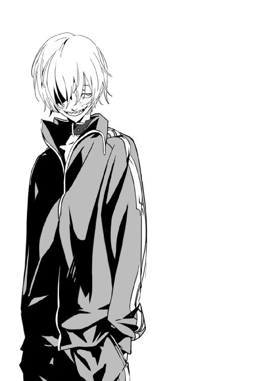

| 丘ルトロジック 沈丁花桜のカンタータ【期間限定 無料お試し版】 | |
| 耳目口 司 | |
| (2014) | |
丘ルトロジック
沈丁花桜のカンタータ
耳目口 司

角川スニーカー文庫
本作品の全部または一部を無断で複製、転載、配信、送信したり、ホームページ上に転載することを禁止します。また、本作品の内容を無断で改変、改ざん等を行うことも禁止します。
本作品購入時にご承諾いただいた規約により、有償・無償にかかわらず本作品を第三者に譲渡することはできません。
本作品を示すサムネイルなどのイメージ画像は、再ダウンロード時に予告なく変更される場合があります。
本作品は縦書きでレイアウトされています。
また、ご覧になるリーディングシステムにより、表示の差が認められることがあります。
『丘研』という文字を見て、俺がときめいたのは言うまでもない。
俺は風景が好きだ。大好きだ。
朝、目覚めた後にカーテンを開けて眺めるアパートの風景。朝食を食べながら見る録画した世界遺産の特集番組。たまに乗る電車の窓から見える町並み。白と黒で彩られたモノトーンのように綺麗な新校舎。看板、街頭テレビ、信号機、ポスト、空、雲、星。
そんなどこにでもありそうな日常だろうと、俺は日々ほんの少しずつでも変わる風景や、それでも本質の変わらない美しい風景を見ることが好きだった。
理屈なんて必要ない。人間が風景を愛するのは、野性的な本能である。
高校生活が始まった。
特に新生活にそれといってやりたいこともないので、とりあえず中学時代と同じ帰宅部を志した俺は、まだ見ぬ絶景スポットを求めて放課後の高校の敷地を歩いて回る。
春の夕日が眩しい。風が心地いい。
俺は両手の親指と人差し指で即興の額縁を作り、それを目の前に掲げて様々な方向から世界を覗き込む。
神楽咲高校。
近隣の高校が三校ほど合併して作られた創立して間もない公立高校で、染みも見られないほど白と黒で綺麗に塗装された、このモノトーンの建物の名称だ。
校舎内は比較的普通と言えるが、──はっきり言えば趣味が悪いとしか言いようがない新校舎で俺達は日常を過ごす。パンフレットによると、高名なデザイナーによる設計らしい。
白と黒で統一された現実味のない机と椅子。
慣れればどうというほどでもない。だが、最近になって無理矢理に人の手で創られた風景は奇妙を通り越して気分が悪くなるのも事実だ。
最終下校時刻を告げる鐘の音が響く。
それはやたら古臭くて懐かしい音で、何気なく元となる音源がある方向に目がいく。
木造建ての旧校舎がそこにある。
俺たちが普段過ごす新校舎の裏手にある建物で、元は神楽咲高校の母体になった高校らしい。歴史がある建物のようで、取り壊しについては今でも泥沼の議論が続けられているという話だ。
よくある廃墟だ。
だが、俺にはその方が風景としてはモノトーン校舎よりも、よほど好ましく思う。
新校舎から手製の枠をずらして旧校舎を覗いた時に、俺の瞳に西日が風景を焼き付ける。
旧校舎の屋上には、髪の長い少女が立っていた。
制服からして、おそらく神楽咲高校の生徒だろう。彼女も風景に興味があるのか、誰と会話をしているでもなく一人で佇んでいた。
いや、『佇んでいた』では語弊があるかもしれない。
仁王立ちだった。
それはもう、見事なまでに腕を組んだ仁王立ちである。人がただ立っているだけであんなにも自信満々に見えたことが、短い人生の中でこれまでに一度でもあっただろうか。
彼女を額縁に入れると、夕日が丁度後光を射すように彼女を照らす。指で出来た枠の中では、彼女はとてつもなく高い頂から、俺たち人間を見下ろしているように見えて。
それはとても、神秘的な風景だった。
「──ということがあったんだよ」
俺が締めの言葉を告げると、幼い女の子のような声変わりのないハニーボイスを喉に持つ清宮一が、呆けた口も直さずに「へぇ......」と感心したような声を上げた。
「咲丘君が女の子に興味があるなんて思わなかったなぁ」
「そっち!?」
清宮は困ったように眉を下げる。「だって咲丘君、風景の話しかしないから」
「今も風景の話しかしてないんだけどな」
俺は瞼の裏に刻んだあの時の絶景を、瞳を閉じて再生する。「あれはいい画だった......」
誰かに先日に見た少女のことを話したかったのだが、生憎と俺には清宮しか会話できるような友人はいない。
清宮とは入学式でも隣、クラスの席でも前後ということで自然と会話が生まれた仲だ。少し舌っ足らずな声に似合う少女のような容姿なのだが、意外なことに彼は立派な日本男子らしい。
ちなみに、今日も親睦を深めるために共に下校しつつ、美術部入部志望の彼と、昨日の深夜に放映されていたモネの風景画の特集について語り合う予定だったりする。
「旧校舎っていうと、確か非公式同好会の溜まり場だよね」
「同好会なんてあるのか、うちの高校に。部活なんて青春の無駄遣いだろ」
「よく知らないけどあるんじゃない？」
清宮が苦笑する。「僕も美術部は一応覗いてみるよ。あんまり期待できないけど」
そんな話をしながら、俺たちは学校行事の予定表を見るために掲示板に向かう。
掲示板には所狭しと勧誘のチラシが貼られていて、それが不気味な生き物の集合体のような色を放っていた。いつもなら気にも留めないチラシ群だが、これのせいで教務課の掲示が見つからない。だから俺は、今まで注視したことのない掲示板をこの時に初めて隅まで覗いた。
そこで、俺はそのチラシの群れの中から一枚のまっさらな貼り紙を発見する。
『丘研』
部員募集中
気になった方は旧校舎部室まで
『丘研』という文字を見て、俺がときめいたのは言うまでもない。
チラシの内容はどう考えてもおかしい。掲示板の大部分を占領しているチラシの中で、端の方にありながら、それは他とは一線を画した存在感を放っていた。
何がおかしいって、とにかく活動内容も規模も書いていないそのチラシの文面の怪しさに尽きる。イラストがあれば雰囲気だけでも感じるだろうが、毛筆による入魂の一筆でそれだけが書いてあるだけに、何がどういう方向に本気なのかがまったく分からない。
さらに、そのチラシの周辺だけが妙に空いているのも不可解だ。そこまで敷き詰めなくても広々と掲示板を使用すればいいものを、何か触れてはいけないもののように必死に周りのチラシが『丘研』の文字を避けているのが余計に不気味だった。
「どうかしたの、咲丘君」
確かに怪しい。だが、こういう好意的な解釈もできるのではないだろうか。
内容は把握できないが、名前から想像するにおそらく丘を研究する同好会のようなものらしい。丘が何を示すか、俺には風景的な丘以外に思いつかなかった。
しかし、このビルに囲まれた街で丘と呼べるようなものがあるのだろうか。公園程度かもしれないが、もし隠れた秘所的に何らかの丘がこの街に隠れていたとしたら？ 妄想は膨らむ。
丘の研究とは何か。写真でも撮るのだろうか、絵として描くのだろうか。まさか人工的に作るとは思えないので、その二択に違いない。
そうだ、と思い出す。この学校には写真部がない。
とすると、風景に関する散策やそういった創作の総合同好会なのかもしれない。
そうだとしたら、そんな慎ましい活動をしている同好会のチラシの周囲を汗臭い活動中のチラシで埋めるのは無粋というものだ。そう考えると、逆にこの同好会は校内では愛されているのかもしれない。いや、そうに違いない。
そこで気がつく。そう、まさに数少ない俺の趣味の理解者が、風景を愛する者達がそこに集結しているかもしれないのだ。あの味気ない中学校生活とは違う、自由気ままに風景を語り合う同好会が存在するのだ。
これが高校生活か。これが俺のスタート地点なのか。鼓動が高鳴る。背筋がビリビリする。感動は熱を帯びて俺の目と鼻先に集中し、そこから一筋の涙と鼻水が流れた。
「えっ!? 咲丘君、何で泣いてるのさ！」
「いや、大したことじゃないんだ清宮。ゴッホだってあの時に志を共にできる仲間が来てくれていたら、涙の一つくらい流しただろうよ」
「理解できそうで伝わらない言い方だね......」
清宮が俺の高鳴るビートについて来られずにオロオロとしている。だが、今は清宮にわざわざ説明をする時間すら惜しい。
「すまん、清宮。モネ会議は中止だ。俺は急用が出来た」
「えっ、ああ、そんなのは別にいいんだけど......。一体どうしたの？」
「青春と言ったら、やっぱり部活だよな！」
清宮にこれ以上は思いつかないほど爽やかな笑顔で返す。
「さっきは『部活なんて青春の無駄遣いだ』って咲丘君に言われたけどね」
「まったく、そんなふざけたことを言うのはどの咲丘だ」
俺が鼻息荒く憤慨すると、清宮は苦笑した後に納得がいかなそうに唸る。
「でも、咲丘君が部活動ってなんか意外だなぁ。美術部にだって入らないのに。風景画とかは描かないの？ 一緒に美術部で描こうよ」
「描かないんじゃなくて、描けないって言ったろ」
何度言っても聞かない清宮に、俺は口を尖らせた。「自分の見た風景は好きだけど、その通りに描けないとイライラするんだ。そんなに技術もないし。古き良き西洋画家達に、現代人は敵わないんだよ」
「絶対音感の人がカラオケに行きたがらない、みたいな言い方だよね」清宮は目を伏せて首を振る。「......詳しいんだから練習すればいいのに、なんか勿体ないかも」
とりあえず、当初の目的であった、もう興味もない行事日程を携帯電話のカメラに収める。その写真をそのまま画像投稿サイト『カメラ俱楽部』に送った。これで思い出した時にでも家のパソコンから閲覧すればいい。
教科書の入っていない軽い鞄を担ぎ、俺はたぶん旧校舎の方角だったと記憶している方に足を向ける。が、とりあえず清宮に聞いておくことにした。
「清宮、旧校舎ってどっちだ？」
「こっちだけど、旧校舎でまともに活動してる部なんてあったんだ。文科系の同好会？」
足を向けた方向とは見事に逆だった。
「たぶん文科系じゃないか？ それっぽいことが書いてあるし」
「チラシにちゃんと目を通そうよ......」
「いや、むしろ何度も読み返したら余計に分からなくなったんだよ。その端にある『丘研』ってヤツだ。やっぱり、足を運んで実際に目で確かめないとな」
どれだろう、とチラシを探す清宮を横目に「じゃ、そういうことで」と俺は旧校舎に急ぐ。今日が活動日だとして、下手をすると活動時間が終わってしまうのではないか。
気がついたら駆け足になっていた。
単身乗り込んだ俺は、とりあえず旧校舎を歩いて回る。あのチラシには詳しい部室の場所が明記されていなかったので、こうなれば本当に足で探すしかない。
やはりそれほど整備はされていないようだ。あちこちに汚れが目立ち、歩くたびにミシミシと足元が軋むのが靴の底を通して分かる。
埃だらけだったり蜘蛛の巣が張ってあったりするわけではないのだが、ここが老朽化によって使用されなくなったのには何となく頷ける気がした。端的に言うと、ボロい。
かつて教室であったであろう場所は、そのドアに寂しく『文芸部』『福祉同好会』『映画研究会』『書道部』などと書かれた紙が貼ってあるだけの人気のない空間になっている。
いくつか扉が半開きだったので覗いてみたのだが、そこに部員らしき人影はなかった。長い間放置されているのかもしれない。
こうなると、あの『丘研』も実は廃部が決定しているのにチラシだけ回収され忘れているだけなのではないか。そんな不安が頭をよぎる。
一階、二階と調べても『丘研』という文字はない。俺のユートピアはすでに地に堕ちたのだろうか。そうだったとしたら、あの時の比ではない量の涙で枕を濡らさないといけないじゃないか。そんなことを考えながら階段を登る。
『丘研』というあの質素なチラシがあったのは、三階の一番奥の教室だった。
実在したことに驚きがあったのは今更だが確かだ。
廃部になっているのではないかという心配も、コーヒー豆を挽いたような新鮮な生活臭がするのと、ドアの向こうから微かに音楽が漏れて聞こえることで杞憂だったと窺える。
しかし、だ。ここまで来て、自分が今までどれほど人と交流を持たなかったかということを痛感した。
ドアを開けて最初に言うべきことは何か、相手はどういう人間か、既に出来上がっている輪の中に自分が入ることなんて出来るのだろうか。
早い話、どうやってこの教室に入って会話に交ざるのかがまったく脳内でイメージできなかった。
怖い。
人と話すのが怖い。先輩後輩とか怖い。人間関係とか超怖い。部活動とかやったことないし友達って清宮だけだし。はいそうです偉そうなことを言っていましたがただのビビリなんです本当にすみませんでしたもう帰りたいです許してください
「さっきから入り口に立ってるけど、何してんだ？ 早く前に進もうぜ」
「うおおぉぉっぉっぉおお！」
いきなり背後に巨大な影がニュッと生えて、発声器官のどこから出したのか見当もつかない声が俺から放出される。両手を挙げてその場で反転し、一歩後退した。
後ろに立っていたのは、まるで杉の木のような巨体だった。その性別や顔を確かめるために俺が上方を向かなければならないほどの大男だ。
デカイ。
とは言え、それほどガッシリした体つきとは言えない。かと言って瘦せ細っているかと聞かれれば、そんなことは決してない中肉体型だ。だが、背がとてつもなく高いのとその男が放つ威圧感のようなものが男を存在ごと大きくしたために、俺にはそれがやはり巨人に見えた。
「おおっ？ もしかして新入生か？」
巨人の顔が輝く。巨大な体でボディーランゲージ、俺は勢いに圧されてコクコクと頷くことしか出来ない。
「はっはっは！ そりゃいい、だったら立ち止まらずに前に進め！ 後ろなんて振り向くな！ さあさあさあ！」
巨人は俺の肩を両手で摑むと、ドアに背を向けた俺の体を反転させて思いっきり前方に押し出す。
ここで思い出してほしい。学校の教室というのは横開きが基本だ。
つまり、開けずにドアに向かって進んでも、それが勝手に開くことは通常ありえないのであって、その常識的な法則は破られることがなく俺は扉に顔面を叩きつけられた。
激しい衝撃音。背骨が嫌な音を立てて軋み、都心の満員の乗車口に押し込まれるような圧力で教室の入り口に押し付けられる。だが、巨人は気づいてないのかわざとなのか、グイグイと前に前に俺を押していく。
白状しよう、生命の危機を人生で初めて感じた。
「これからお前はどんどん前に進むんだろうなぁ、羨ましいぜ。一年生ってのは最高だよな。これから二年生にも三年生にも浪人生にもなれる。つまり、前に進んだ時にある選択肢が限りなく多いんだ。これはな、すごいことだと思うんだ」
巨人は饒舌に話しながらも、俺を圧す手を緩めない。
「だって今後勉強をすれば国立大学だってもしかしたら受かるんだろ？ これからスポーツにハマれば、ひょっとするとプロの選手にだってなれるかもしれないんだぜ。いいなぁ一年生。すげぇよなぁ一年生！」
俺は必死に取っ手に手を伸ばすと、この圧力から解放されるために渾身の力を込めてドアを開く。ドアによって殺されていた勢いはそこで一気に放出される。ドアが開いた瞬間、俺は前方に勢いよく倒れた。
あれだけ開くことに躊躇した扉は、半ば強引に、しかし簡単に開いてしまった。
「ん、来たか出島。......彼は？」
「おう、新入生らしいぞ」
巨人は大股で俺を踏み超えて室内のパイプ椅子に腰を下ろす。今更だが、この人も体育会系に見えてやはり『丘研』の関係者なのか。俺は呆然と立ち上がりながら室内を見渡す。
教室は他よりも少し小さめで、そこには小さな冷蔵庫が一つと、本棚が多く備わっていた。なるほど、それほど大規模の同好会でないならこのぐらいが丁度いい。
部室には小さなテレビを備えていて、そこからはなぜかゲーム機のコントローラーが伸びていた。もはや部室にゲーム機一台は当たり前の時代なのだろうか、嘆かわしい。
香ばしい独特の香りがすると思ったら、やはり長机の上にはコーヒーセットが準備されてあった。高級そうなエスプレッソマシーンと普通のコーヒーメーカーが一緒に並んでいて、付属のポットからは薄く湯気のようなものが立っている。
そこに、その少女はいた。
彼女は奥の席で不敵に微笑みながら俺を値踏みするように見ていた。
身長は少し低めに見える。贅肉などは特になく、それが引き締まった体を維持しながらの体型なのだろうと制服の上から分かるほどに、体の凹凸が激しい。腰ほどまである髪の毛を弄りながら、その中でもかなり目を惹くほど雄大な双丘を組んだ両腕の上にそびえ立たせていた。
俺の視線の先にいたその人物は、間違えようもなく先日の絶景の少女だった。
「ようこそ、チラシを見て来たのかね」
部長らしき少女がニヤニヤと笑いながら俺に尋ねる。何か面接テストでもされている気分だ。
「──えっと。......ここが『丘研』でいいんですか？」
「ああ、そのチラシを貼ったのは我々だな。入部希望かね。人員はいつだって募集中だ」
この少女、どうにも学生に似つかわしくなく話し方が尊大だが、それが声質にもその態度から放出される存在感にも見事にマッチしているために自然に聞こえてくる。
なんというか、一言で表すなら『女王』だろうか。
初対面の相手に対して尊大かつ大胆、謙虚さの欠片も見せないというのに、応対が爽やかで相手に不快さを感じさせないというのは、やはり色んな点ですごい人なのかもしれない。
「歓迎しよう。私は沈丁花桜、二年でこの部の代表だ。呼ぶときは『代表』で結構。こっちのデカイのは同じく二年の出島進だ。入部届は、机の上のものを好きに使いたまえ」
「よろしくな、新入生！」
出島と呼ばれた巨人が目を細めて笑顔を作って笑う。日本人は口で笑い、アメリカ人は顔で笑うというのをよく聞く。出島先輩のそれはアメリカ人のような笑顔だった。
と、同時に先ほどから止まっていた思考がいい加減に動き出す。
待つんだ、まずは見学だろう。
なぜ入部前提で話が進んでいるんだ。いや、別に他意はないが、無理矢理入部させるような部活なんてロクなものじゃないのは俺にも分かる。
「あー、活動内容を聞きつつ仮入部って形じゃ」
「おいおい、ここまで来たら入るか辞めるかだろ。前に進むか、振り返って前に進むかの二択だ。今すぐにどっちでも好きに選べばいいじゃねぇか」
出島先輩の言いたいことはよく分からないが、早い話が入部するかしないかの二択を俺は突きつけられていた。なぜだろう、俺が追い詰められているような構図である。
おかしい、どうしてこんなことになった。なんとかしてこちらのペースに話を持っていかないと、この二人の存在感に負ける気がするし、もう既に負けている気がする。
「いや、とりあえずじゃあ見学を──」
「あのー、すみません。ここって『丘研』で合ってるんスか？」
その澄んだ一声に室内が静まり返る。
何事かと振り返ると、先ほどの俺のようにドアの前で中を覗き込んでいる人の姿があった。
俺の場合と違ったのは、半ば事故的にドアが既に開いていること。
そして、そこから顔を覗かせる女性が絶世の美少女だったことに尽きる。
突然の美少女の乱入に、誰もが時間の存在を忘れた。
このいつだって不敵そうな沈丁花先輩も呆然と、出島先輩も目を丸くして美少女を凝視する。当然のことながら、この状況に混乱しているのは俺も同じだ。
特に誰が返事をするでもなかったので、彼女はゆったりとバツが悪そうに室内を見渡しながら入ってきた。座れるような空気ではない。俺だってさっきから立ちっぱなしだ。彼女はそんな気配を察知してか、俺の隣に同じように並んで立つ。頭の位置が俺と近い。
上履きの色は赤、俺と同じ新入生だ。尋ね方からして部員ではないらしい。
改めて至近距離から見ると、やはりかなりの美人だった。鼻は少し高く、女性特有の凹凸も出すぎず無さ過ぎずの非常に均整のとれた体つきをしていて、脚は白く細く長く、肩近くまであるだろうセミロングの髪は昔に田舎で見た川の清流のような艶やかさがある。
ただ一つ残念なのは、その目がなぜか眠そうに半開きであること。
いや、形が悪いわけでは断じてない。笑えば絶対にかわいい、真剣な目をすれば絶対に凜々しいに違いない。なのに、その半開きな目はやる気の無さそうなオーラを前面に押し出してしまっていた。目は口ほどに物を言う、まさにそんな印象を受ける。
その目が彼女を何とも声のかけにくい不思議な存在に昇華させてしまっている。だが、そんな目を含めても彼女という存在は『美少女』という概念そのものだった。
と、ようやく状況の整理がついたらしく、沈丁花先輩が一気に捲くし立てる。
「ふむ......。驚くべきことだ。我が部に新入生が立て続けに入部してくるなど、前例にないことだろう。──ふふふっ、代表としての私がいかに優れた能力を持っているかが今ここにハッキリと証明されたわけだな！ 歓迎しよう、新入生諸君！ 私が代表でこっちのデカイのが出島だ。あともう一人いるんだが、彼女は休養中なので紹介は後日に回すとして──」
「いや、だからまだ入部はしませんって」
「は？ 入部しないんスか、あなた。さっきは掲示板の前で泣いて感動してたのに」
セミロングが腑に落ちないといった様子で首を傾げる。おかしい、この不思議な話し方をする人は一体何でそれを知っているんだ。
「いや、そんな豆鉄砲食らったような顔されても。っていうか、自分もあの掲示板の前にいたんスけど。......ひょっとして気付いてなかったんスか？」
そうだっただろうか。あの時はチラシに感動して、誰がいたのかなんてまったく気にしなかったが、思い返せば......。いや、思い出せないしどうでもいい。
「感涙だと？ ふむ、なぜそのように思ったのか是非聞きたいものだ」
俺が腕を組んで記憶を穿っていると、沈丁花先輩が身を乗り出して尋ねてきた。その眩い瞳を見て「これはもう、入部するしかないんだな」とここで改めて悟ってしまう。
そうとも、確かに部活動などには不慣れだったし人間関係に不安があったりしたものだが、結局はここに入部するために足を運んだのだ。
臆するな、咲丘。どうせ皆ここにいるのは同志だ。
「俺は風景が好きなんです」
啞然としたように口を開けて全員が見守る中、俺は続ける。
「田舎の町並みとか都会のビル群とか、あんまり好みに偏りは無いんですけど。あ、どちらかと言うと山が好きですよ。森がある、川がある、そこに生態系がある。まぁ、海も捨てがたいですし都市はやっぱり人間が作ったものとはいえそれはそれで風情があるんですけど。──でも、『丘研』って文字を見たときにハッとしたんです。俺はこの街で、少なくとも『丘』と呼べるものに出会っていない！ それなのに丘の研究って、もしかしたら俺の見たことが無い風景がまだまだこの世にはあるんじゃないかって感動したんです！」
中々クサい台詞を口に出してみた。それでもまったく誇張の入ってない俺の率直な理由である。まぁ、これをそこまで一般的な趣味だと声高に主張するほど俺は身勝手ではない。これだけ風景について語れば、相手の反応は大体が二種類、避けるか逃げるかだ。
だが、相手の反応は俺の予想を大きく外れる。
この代表、目尻に涙を浮かべていた。
「──素晴らしい！」
「おおお、よく分からんがいいこと言ったぞ新入生！」
出島先輩がガッツポーズをしながら立ち上がる。沈丁花先輩は俺の両手を勢いよくとると、緩やかに力を込めて握った。
「これほどまでに熱意のある新入生がかつていただろうか!? いや、私以外にいない！ そうとも、ここではきっと君にしか出来ない活動がある。我々は君のような人材をまさに必要としていたんだ。......そうか、うん。嬉しい、私は嬉しいぞ新入生！ 君のような人材を手元に配下として置くことが出来ることを私は感謝する、私自身の幸運に対して！」
俺に向けられた沈丁花先輩のそれは、なんとも輝きに満ちた顔だった。お世辞や打算であるとか、そういったものを一切含まないで、純粋に俺を必要としてくれている人間のその視線。
それを一身に受けて入部を取り消す奴がいるんだろうか、──そんなことは想像もできない。
「は、はい！ ありがとうございます！ ......そこまで言って戴けるなんて恐縮です！」
「あー、自分もそんな感じなんでいいっスか？」
隣の美少女も気だるげに挙手する。やはり彼女も風景愛好家なのだ。
なんということだろう。これまでにほとんど理解されなかった俺のちょっと変わった趣味だが、これほどまでに認められるなんて人生でかつてないことだった。
やはりこれが高校生活か。やはりこれが俺のスタート地点なのか。鼓動が高鳴る。首筋からアドレナリンが全身を駆け巡る。感動は熱を帯びて俺の目と鼻先に集中し、そこからまた一筋の涙と鼻水が流れた。
「よし、いいだろう。代表の名において、君たちの入部を許可する」
沈丁花先輩の手から差し出される皺一つない入部届。俺は鞄から判子付きのボールペンを取り出すと、そのままの勢いで署名する。セミロングの美少女もそれに続いた。
「ふふふ......、はっはっは！ 素晴らしい、なんという記念日だろう！ 今日という、たった二十四時間の間に二人も眩い才能と美学を胸に秘めた人間が我が部に入部するなんて。ははっ、最高だな出島！ よろしく頼むぞ新入生、いや、咲丘クンに江西陀クン！」
沈丁花先輩はバランスの悪いパイプ椅子の上に立つと、高らかに活動開始の狼煙を上げる。
「歓迎しよう諸君！ ようこそ、我々の『オカルト研究会』へ！」
......は？
「咲丘君、お昼一緒に食べようよ。──どうしたのさ」
「なぜ止めてくれなかったんだ、清宮。さすがの俺でも、お前という存在の評価を一つ下げるかもしれん」
清宮は苦笑いする。「いきなり嚙み付くなんて、咲丘君らしいけど何でまた？」
あの丘研に入部した日の放課後から数日後、清宮はピンク色のスカーフに包まれたかわいらしい弁当箱を持って俺の前の席から振り返る。前述したかもしれないが、クラスでも清宮とは席が前後、これが色々と便利だったりするわけだ。
「丘研がオカルト研究会なんて謎の組織と知っていれば入部なんてしなかったぞ」
「まったく調べもせずに特攻した咲丘君が悪いんじゃないの、それ」
「清宮が正論すぎて、生きていくのがつらいぜ」
そんなノリでオカルト研究会に入部したあらましを清宮に語る。聞き上手な清宮は何度も聞いている話なのに、絶妙な相槌を打ちながら俺の演説を終始真面目に聞いてくれた。
「うーん、でも籍を置いておくだけなら別にいいんじゃない？ 聞いてると何だか面白そうな人が多そうだし」
「いや待て、確かに直接会ってないお前ならそういう感想を持つかもしれんが、とにかくあの人たちは普通じゃない。本当に普通じゃないぞ、どちらかと言うと健全な関係の維持がイメージできないほど変人ばかりだ。......特にな、俺と一緒に入部した一年の──」
「あーいたいた咲丘。いやぁ、探したんスよー。飯食いましょう、メシ」
と、他クラスのセミロングの美少女が俺のクラスの教室に当然のように入ってきた。俺の右横の席を勝手に移動させて接続合体、俺の隣に座る。
物を語らない清宮の視線が、なんだか今だけちょっとイタい。
「......せめてアポを取ってくれないか、江西陀。主に俺のために」
「知らないッスよ、こっちは名簿を借りてきてまで探したんスから。アポとか中学生みたいなこと言ってて恥ずかしくないんスか？ ──あ、ども、江西陀です」
思い出したように、つい先日まで中学生だっただろう彼女は清宮に一礼した。
「で、その前になぜお前がここにいる」
「同じ学年で同じ部活。せっかくですし、同じ釜のメシを食って親交を深めようって話ッス」
「同じ釜ではないな。それを言うなら、せめてパンじゃなくて飯を持ってこい」
彼女は江西陀梔、前述しまくった美少女だ。
容姿から眠そうな目まで、もはや説明することに意味はないだろう。
ただ、こんなにも綺麗な顔立ちなのに、既に俺の中ではその眠そうな目と特徴的な話し方や会話内容のせいで、完全に清楚な美少女のイメージからは逸脱した人物像になっている。
「えっと、清宮です......。咲丘君のクラスメイトで──」
いきなり登場した異物にも丁寧に自己紹介をしようとした清宮が、キョトンとした顔で江西陀を見る。江西陀は眠たそうな目をさらに細めて上から下まで舐め回すように清宮を観察し、口元に手を当てて唸った。
「咲丘にも彼女がいたとは意外ッスね。それにしても、咲丘には勿体ないくらい凌辱プレイの似合いそうなかわいい子で。で、何回寝たんスか？」
清宮が涙を浮かべて震えながら顔を引き攣らせるので、俺は持っていたステンレスの水筒で江西陀を殴打する。すごく気持ちのいい、透き通るような打撃音が教室内に響いた。
極めて猟奇的な風景だった。
「......女の子に何てことするんスか」
「人道を踏み外したお前が悪い。それと、信じられないかもしれんが清宮は男だよ」
確かに清宮はかわいい。持って帰りたくなるのも分からないでもないのだが、本人はそれなりに気にしていることなのだ。
清宮のソフトな心臓のために、釘を早めに刺しておくに越したことはない。
「......オカルト研究会ってどういうことですか、沈丁花先輩」
「『代表』でいい」
そう言うと、沈丁花先輩──代表は椅子から優雅に降りて、上履きで乗った椅子の上の埃を払った。着席して、「毎年思うんだがな」と代表が語り始める。
「なぜ『丘研』と漢字で書いただけでここに人が来るのだろう、と。あぁ、私も先代の策に掛かって入ったわけなので人のことは言えないんだぞ。私は誰よりも頂上を目指す部活だと思って入部したが、現実はこうだった。だが、それについてはまったく後悔していないどころか、素晴らしい人生経験になったと確信しているし、別の意味で非常に興味深いことでもある」
代表はコーヒーをエスプレッソマシーンから注ぐと、湯気の立つそれを腰に手を当ててそのまま一気に飲み干す。香りを楽しむなど皆無、とてつもなくダーティーな飲み方だった。
というか、あれは熱くないんだろうか。普通なら火傷しそうなものだけれど。
「それなりに多くの選択肢があったはずだ。なのに、わざわざこの『丘研』と書かれたチラシを見て入部する人間が毎年いるらしいのだから、まずそこが興味深い。次に入部した人間の大部分が『丘研』の活動内容を勝手に妄想し、なおかつそれがほとんど全員違うのだからそれも興味深い。何よりそもそも──」
「いや、もうそこはどうでもいいですよ。最初から訊いてませんし。......でも色んな意味で納得出来たんで、最初の質問もこの際どうでもいいです」
要は嵌められたのだ。ここまで開き直られると逆に清清しい。
「ただ、さっきの態度が噓だったとしたらかなりショックですね」
「いや、それは問題ないぜ」
ここまで来て、さっきからあまり話さなかった出島先輩が身を乗り出す。
「丘研の活動はな、都市伝説なモノを探して見つけて仲良くしたり、気に入らなかったらそれをぶっ飛ばしたりするんだよ。そして、そこには都市伝説なだけに滅多にお目にかかれないものがあったりするわけだ。前向きに考えろ、珍しい風景探しだぜ！」
出島先輩は豪快に笑いながら机を叩く。そういえばこの人は先ほどまであまり会話に参加しなかったなと思い返した。案外、ネタばれを考えて黙っていたのかもしれない。
しかし、この人の言うことに噓は確かにない。
オカルトなんて、実際に見ることがない風景だからオカルトなのだ。
「噓とは自信がない人間がつくものだ。その点、私は自分に絶対の自信を持っているがゆえに噓をつくことはない。そもそも、私の最終目標は『世界征服』であるのだから、配下にしようと思っている人物に対して噓をついてまで引き入れるようなことはしない。そうとも、君の情熱に私は心奪われた！ どうしてもと言うなら退部するのは構わないが、君自身はその煮えたぎる熱い想いをこのまま腐らせてしまっていいのかね？」
代表がここぞとばかりに一気に捲し立てる。その中に聞き捨てならないおかしな単語が混じっていたような気がするが、おそらく気のせいだろう。
そうなのだ、そういう意味では代表の感激も決して見当違いなものではないと、自分でも無理矢理な気はするけど半ば強引に結論づける。そうでなければ、この何とも言えない騙された感じと、今後を考えることのやるせなさに押しつぶされてしまいそうだ。
もう脳と本能が理解している。この代表と口で争って退部をするなど俺には出来ない。
どちらにせよ、帰宅部でしかない俺もそれほどまでやりたいことはない。せいぜい『カメラ俱楽部』で画像を見る程度だ。そんなに広くない俺の交流関係、せっかく迷い込んだコミュニティーからわざわざ抜ける必然性は特に思いつかなかった。
さらば、俺の優雅な放課後タイム。
俺の無言を肯定と受け取った代表は満足げに、俺の横へ視線を流す。
「──で、だ。先ほどから自己主張をするでもなく佇む美少女な江西陀クンも、同意ということで大丈夫かね。咲丘クンを確保するために勢いでサインさせてしまったが、君は巻き込まれる必要なんてないわけだ。まぁ、入ってくれるなら無論嬉しいがね」
代表に話題を振られた美女が視線を宙に彷徨わせて思案する姿を見て、そういえばいたなぁと自分でも感心するほどにその存在を忘れていたことに驚いた。
「ん、自分も咲丘と同じようなもんなんでいいッスよ。美術部はアレですし、どうせやりたいことも特にないッスからね。むしろ面白そうだし、ぜひ入部させてください」
この女、いきなり呼び捨てである。
「おいおい、横なんか見ないで前を見ろよ。俺は女の方の新入生が何でここに来たのか訊きたいぜ。気にしねぇし、自分の意見はハッキリと言っちまえ」
出島先輩がついに核心に迫った質問をした。そうだ、この江西陀とかいう奴はまだ入部理由について曖昧に逸らすだけで一言も発言していない。ここでまたはぐらかしたら正直者な俺に対して非常に失礼だ。いや、すでに失礼な奴だが。
「理由ッスか？ ......そりゃ、何度も言ったように咲丘と同じようなもんですよ」
なんて失礼な──いや、待て。ということは風景愛好家だと!? ──ああ、なんて素敵な人なんだろう！ 俺には江西陀さんが今になって女神に見えてきた！ まずい、この容姿で風景愛好家なら俺はもしかすると惚れてしまうかもしれない。
「女性特有の二つの丘を、眺めて鑑賞して意見を言い合う場なのかなと思いまして。そういう風景って素晴らしいっすよね。自分も共感することが多いっすよ。よろしく咲丘、仲良くなれそうで何より──」
まぁ、絶望的な一言がすぐ後に出てきてそんなロマンチックな展開は水泡に帰したんだが。
とりあえず江西陀、てめぇは俺に喧嘩を売った。
そう、江西陀はなんというか、エロい。それはあの後の一悶着の時点でもう痛いほど思い知らされた。酷い。こいつの辞書には卑猥な発想しか載ってないのかと思うくらい酷い。
それだって、その日だけのちょっとした神様のジョークだったなら俺も許しただろう。
だが翌日、たまたま下駄箱で会った江西陀が、
「ちっす、咲丘。昨日の『ポロリだらけの女相撲』は良かったッスね。あれはほとんど全裸に近くて思わず録画したッスよ。丸見えじゃないッスか、色々と」
と、朝の眠気も吹き飛ぶ刺激的な挨拶を放ってくれたことによって確信に変わってしまう。
ちょっとしたハイテンション状態であるとか、友好な交流関係を築くためにあえてやっている下ネタ程度だったならまだいい。
だが残念な、あまりにも残念なことに江西陀の眼はいつだってマジだった。
なぜかどんな会話の流れだろうと、江西陀は露骨にエロスな方向へ持って行ってしまう。男なら下品な奴だとかで一蹴していいんだが、江西陀はこちらが「頼むから黙ってくれ」と泣きたくなるほどの美少女だ。
それが意味もなく悔しくて、俺はこいつとの距離の置き方に現在進行形でかなり悩んでいる。この地雷、避けようか突こうか踏もうか除去しようか。
「ふーむ、咲丘が両刀でショタ趣味とはちょっと意外でした。どっちかと言うと年上のボインの方が好きそうなイメージがあるんスけどね」
「後者は認めるが、前者は断じて認めん。俺はそんな背徳的な風景でありたくない」
「そんなことより、放課後に部室に来いって代表からさっきメールが来たんすけど」
言われて携帯を確認する。まったく気がつかない内に三通も溜まっていた。
「ああ、そういえば咲丘君は放課後とかやっぱり部活なの？ だったら活動日は一緒には帰れないかぁ」
寂しくなるね、と清宮が両手で小さなオニギリを頰張る。そのまま額縁に飾りたくなるほど愛らしい。そうとも、清宮はショタじゃない。目に入れて痛くない風景だ。
俺はそこのエロ親父とは視点と発想が違うんだ。
「あれ、清宮は何か部活やらないんすか？」
非常に珍しいことに、江西陀がマトモな質問をした。そういえば、清宮が美術部に入るという話はどうなったのだろう。清宮は少し宙を仰ぐ。
「美術部に入ろうかなって思ってたんだけど、やっぱりいいや。あんまり熱心そうじゃないし、絵はどこだって描けるしね」
「おおお、清宮もそっち系ッスか。自分も絵を描きまして。いや、素晴らしいッスよね、美術。裸婦像ッスか？ いいッスよね、あれは。ああいった遠近法を用いたポルノ技術の発達はルネサンス期の人類の財産ッスよ。分かります」
やっぱりただの江西陀だった。しかし、この流れに乗ったら俺の負けに違いない。
話から察するに清宮は帰宅街道まっしぐららしい。丘研に俺の代理で引き込もうかとも少し考えたが、清宮が気の毒すぎてさすがにやめた。よし、話の流れを変えよう。
「それにしても、だ」
「ん、咲丘は裸婦像では欲情出来ないタイプッスか。まぁ、無機物の持つエロティシズムについての境地を開くには時間をかけて学ぶ必要があるんで、咲丘にはまだ厳しいッスかね。とりあえず、りんごの曲線から入ることをオススメしますよ」
「待て、その入り口は一体どこに続いているんだ!?」
「そりゃ、咲丘のまだ知らない桃色に輝く芸術の世界ッス」
「知るかよそんな芸術！ くそぅ、黙れ江西陀！ ガーリックトーストがくせぇんだよ！」
思わず流れに乗ってしまった。決意してすぐの惨敗、虚しい。
江西陀も何かの勝利を悟ったのか、その口元をニヤけさせて清宮と俺を何度か見比べる。
「ああ、失礼。そっち系の人だったッスよね」
「もはやてめぇの存在が全ての女性に失礼だ。──じゃなくて」
俺はなし崩しではあるがオカルト研究会に入った。今さらそれを否定する気もない。
要は部活に所属することに意義があるんだと思う。健全な高校生である以上、何らかの活動をするということはきっと必要なことなんだ。
だが、俺のここ何日かの感想を一言でまとめるとこうなる。
「オカルト研究会って、結局何をするんだ？」
入部した翌日に「そういや部活に入ったんだ」と思い出し、帰る気満々だった俺はとりあえず部室に顔を出すことにした。
部室のドアを開けると、ラジカセでピアノ伴奏を流しながら、代表がコーヒーを淹れて水面にティースプーンを泳がせていた。俺を見ると「やあ」と言って手を振る。
新聞を眺めていたようである。見出しには『風俗街の悪夢 ～殺人事件これで二件目～』などと書いてあった。まったく、縁起でもない。
「ラヴェルは落ち着くからいいな。君もコーヒーを飲むかね？」
そもそもコーヒーメーカーなんて持ち込んでいいのだろうかと一瞬考えたが、かなりどうでもいいことだったのであくまで自然に流すことに決めた。
「贅沢を言うなら紅茶がいいんですけど」
「悪いがコーヒーしか私は飲まない」
どうやら、この人が飲まないものはここでは飲めないらしい。
「──いただきます」
代表は優雅に微笑むと、丁寧に包装された箱から新品のコーヒーセットを出す。見るからに高級そうな白い陶器だった。布で軽く拭き、それにコーヒーを注ぐ。
「君のために新しく買ってきたんだよ。これからはマイカップとして使うといい」
「もしかしたら二度と来ないかもしれない奴のために、ですか？」
「来ると確信を持っていたし、君は来た」
適当に着席してコーヒーを啜る。なんとも言えない静寂。どう話しかけるか迷い、結果として俺は情けないことに代表をチラチラと観察するしかできなかった。
あの時は緊張していたのと混乱していたので気が付かなかったが、改めて見てみるとこの人は江西陀とは違う意味で綺麗だった。
先ほどのコーヒーを淹れた時の動作といい、動作の一つ一つが優雅で気品に満ちている。その様子は高貴なお嬢様然としたそれではなく、どちらかと言うと仕事の出来る気高い女性社長のような所作だった。少し背丈が低いが、それだけで風景として絵になれる人だろう。
何よりも目が印象的な女性だ。少し切れ長ではあるが、キツイ印象を与えるでもなく整った角度をしている。細長い眉毛と非常にバランスがいい。
目を開けると、そこには常に何かを企んでいるようなギラギラした炎を灯らせている瞳がある。その瞳は泳ぐことなく常に真っすぐ向いていて、そこからは彼女が持つ自信のようなものが常に放出されていた。
体型的なことを言えば、やはり目に留まるのは胸である。おっぱいである。
雄大だ。
なんということだろう、少し大きめのサイズであるはずの制服がはち切れんばかりである。素晴らしい景色を少し妄想する。絶景、ここに極まれり。
「コーヒーは、いい」代表が呟く。「君は紅茶の方が好きかい？」
「どちらかと言うとそうですね」
というものの、自分で紅茶を淹れたりするほど好きでもない。ティーバッグやペットボトルの市販品の方に馴染みがあるだけだ。
「紅茶は香りを楽しむものだ。対して、コーヒーは味を楽しむものだと私は主張する」
誰に対してだろう。
「紅茶を淹れるのは難しすぎるんだよ。機械の力では人間の淹れるものをまだ越えられないからね。コーヒーはエスプレッソマシーンを導入することで、手軽にプロの味を再現することが可能だ。あぁ、人の作るエスプレッソを卑下する気はないよ。マシンを開発した人間に失礼だからね。同様にティーバッグを否定するつもりもない。あれは好みの問題だろう？」
代表は目を伏せて朗々と喋りたてる。昨日今日の付き合いだが俺でも分かった。この人は達見な人だが、話がとにかく回りくどくて、長い。
「肝心なのは、私でも出来るということだ。私という人間は出来ることが少なすぎる」
代表はティースプーンを使い、カチャカチャと音を立ててコーヒーを混ぜた。
この意味も無く自信満々な人にどんな不備があるというんだろう。何かの喩えだろうか、少なくともその意味を悟れるほど俺はこの人を知らない。
俺はそのやけに寂しげな顔から視線を逸らす。
目の置く場所に困ったので、不可抗力ではあるが代表の胸部辺りに視線を彷徨わせた。
いいおっぱいだ。
思わずＡ４用紙に印刷してしまいたくなる風景としか言い表せない。
「さて、これからの活動方針だが」代表が散々搔き混ぜたコーヒーを、腰に手を当てて一気に飲んで言う。「とりあえず、しばらくは待機だ」
「待機、ですか？」俺は雄大な山脈に意識を集中させつつ聞き返した。
「特に目新しい情報もないし仕方がないだろう。ああ、ネタがないわけではないので安心したまえ。今はちょっと調査中なんだ」
代表が曖昧に答えると、そこで勢いよくドアが開かれる。静かで知性の溢れる空間は、騒々しい人たちの入場によってガラスのように破壊された。
「悪い、真っ直ぐ来る予定が遅くなっちまった」
「ちーっす。あれ、咲丘じゃないッスか。一応探したんスよ？」
出島先輩と、その巨体の後ろから江西陀がひょっこり顔を出す。二人とも適当な椅子に座った。
「ん、珍しいな。何かあったのか、出島」
「あー、あれだ。あれ。......誰だっけ」
代表の質問に出島先輩は苦笑いで応えた。鞄から薄いノートを取り出してめくる。
「ああ、炊飯ジャーの新機能みたいな奴が新入生にちょっかいを出しててな。追い返してた」
「──彼女か。ふむ、思ったより早いな」代表が立ち上がり、コーヒーの御代わりを淹れながら何でもなさそうに呟く。「まぁ、あの子は若いからね」
「そうッスねぇ、若いのは早いッスから。でも活きがいいんスよ、活きが。やっぱり熟してるのと違って、色艶が良くて反応がピッチピチなんスよね」
「二人はともかく、江西陀は何の話をしているんだ!?」
出島先輩は少し上を向いて口をへの字にすると、表情を笑顔に変えて俺の背中を叩いた。
「若いっていいよなってことだ！ ハッハッハ！」
「いや、名言に聞こえるのに意味が分かりませんから」
「意味ってそりゃまんまだろ」出島先輩は目を丸くして言う。「若さってのは最高だぜ。一番前に進む活力に満ちてる。とことん進めるんだよ、間違っててもな」
この人は一体何歳なんだろう。
「歳をとると、なぜか自分より年下の人間が馬鹿みたいに見えてくるもんなんだそうだ。自分と同じ歳の奴の年収と自分の年収を比べて、『昔はよかった』『あの頃に戻りたい』とか言い出すんだぜ。比べて、若い奴はそれほど気にしないしな」
出島先輩が自分の言葉に頷きながら喋り続ける。「まぁ、上ばっかり見るのも考えもんだけどよ。あと、若い奴は下も気にするのが良くない」
「いやいや、もはやどこに向かえばいいのか分からないんスけど。明後日の方角にでも行けばいいんスか？」認めたくないが、俺もそういう江西陀と同意見だ。
「前を見ろよ、前を！ 自分のしたいようにやり、好きに生きりゃそれでいい。そうすりゃ人生に価値が生まれて、生活にメリハリが出来る。ほら見ろ、悪いことなんて一つもないじゃねぇか。さぁ、お前らもここをスタートに大きく前進するんだ！」
「まったく気にしなければ、主に周りが迷惑なんだよ。直進野郎はこれだから困る」
代表はティースプーンをコップの中で躍らせながらため息をつく。手元にそれを置くと、砂糖もミルクも入れずにホットコーヒーを飲み干した。
そのまま代表が腕を組んで不敵に笑いながら宣言する。
「よし、では今日の活動だが。──出島！」
「おうっ！」
いよいよか、と俺の胸は高鳴る。
人生初の部活動。
その最初にすることなのだから俺だって興奮くらいはする。
江西陀も多少は興味があるらしい。無言でさりげなく身を乗り出していた。
「まずは君たちの立場をハッキリさせるために、人生の勝者から決めようか！」
代表が高らかに宣言すると、出島先輩は背後から巨大なボードを摑んで長机に叩きつける。
それは幾多の人々の軌跡。世界と人生の縮図。その過程に価値は無く、ただ資金を他者より集めたものが勝利するという、公平で不条理な世の中の仕組みそのもの。
人生ゲームだった。
「あぁ......。んー、今日はモノポリーじゃないッスか？」
江西陀は大あくびをしながら言う。「何をいまさら」とでも言いたげだった。美人、台無し。
「俺が聞きたいのは本日のゲームの内容じゃない。今さら対策をしたって、俺は負ける」
清宮が気の毒そうに上目遣いで俺を見る。無言が、俺のささくれた心にひどく沁みた。
「オカルト研究会ってのはなんだ、オカルトを調べたりするもんじゃないのか？ どうして何日もボードゲームに勤しまないといけないんだよ」
「さぁ？ そういう名目ではあっても、案外こういう部活なんじゃないかと。咲丘はロマンを求めすぎなんスよ」
江西陀はどうでもいいみたいだった。さっきからパック牛乳の中身をチュウチュウと音を立てて吸っている。もうほとんど残ってないだろうに。
「お前はそれでいいのか」
「自分は顔合わせてて楽しければどーでもいいッス」
江西陀は牛乳パックを手持ちのビニール袋に突っ込んだ。持って帰るらしい。
「出島先輩は芸術の知識がまるでなさそうなんでからかい甲斐がないんスけど、代表はノッてくれますし、咲丘はノックが鋭いんでこれはこれで」
「要はエロい話がしたいだけなんだな」
「咲丘こそ、ボード上の地域の風景が語れればそれでいいんじゃないッスか？」
江西陀がジト目で俺を睨みつける。「自分、そろそろアメリカの観光地を州ごとに暗記しそうなんスけど。見たこともないのに」
......。
まったく反論出来なかった。
いや、だってモノポリーだぞ。広大なアメリカの州に自分の家を建てて、ホテルまで建てられるんだぞ。そこから一望する景色、それを守るためなら俺は買収などには屈しない。
「人生ゲームで子供が生まれるたびに中学生みたいな話をする奴に言われたくはない。あと、全年齢対象ボードゲームの職業に風俗はねぇよ。探すな馬鹿」
「それは職業差別ッスよ」江西陀がシレっと言い切る。「ああいうのって初めてやったんスよ、ルールなんて全然知らないッス。......ああ、そう考えると男と女の関係に似てますね。なるほど、人生ゲームっすね」
「畜生っ！ もうどうやったら江西陀とピロートーク以外で話せるのか俺には分からねぇよ！」
考えてみれば性格的に俺も江西陀もアウトドアな趣味を持っているタイプではない。そういう意味では、別に部室で喋っているだけでもいいのかもしれないと勝手に結論付けた。
「んで、人に話題を振っておいて自分のコメはなしッスか。嫌ならやめればいいのに」
そういえばそんな話の途中だった気がする。
「なんともなぁ、趣旨が見えないのが分からないだけなんだけどな。というか、俺にはあの部活そのものがオカルトに思えてきたよ」
この数日の間で、俺はボードゲームに運以外の何かしらのテクニックがあるように思えてきたほど負けた。
負けに負けた。惨敗にしたって限度がある。
出島先輩は先日行ったゲームの内容すら忘れているからいい勝負が出来るとはいえ、俺の実力はその程度。常勝無敗、どう考えても現時点ではうちの部の代表がオカルトだ。
「うーん、その代表さんに聞いてみたらいいんじゃないかな」清宮が控えめに進言する。
「あの代表に、か......」人生ゲーム無敗の億万長者に極貧民が恐れ多い。
「うん、分からないなら直接聞いた方がいいよ。ちゃんと聞いたらきっと教えてくれるって」
それもそうだ、確かに面と向かって訊ねたことは一度もない気がする。ここは一つ、清宮の案に乗るのも悪くない。
むしろ最善の選択だ。というか、なぜ俺はその選択を今までしなかったんだろう。
「そうだな、とりあえず聞いてみるか。ありがとう清宮、お前は俺がこの学校で得ることが出来た唯一の財産だよ」
「そ、そこまで言わなくても......。僕も咲丘君と仲良くなれてホッとしたし......」
清宮が肩を揺らして恥らう。少し上気した頰、潤んだ瞳。視線を下に彷徨わせた後、俺と目が合って恥ずかしそうに視線を逸らす。
「──あああ！ 分かるか江西陀!?」
「ん、何がッスか？」江西陀は小首を傾げる。
「これこそ俺の求める少女像なんだよ！ てめぇは少女じゃねぇ、なぜだ!?」
「な!? 失敬な......」江西陀が眉を吊り上げて憤った。「自分だって、どこから見ても花も恥じらう純潔少女じゃないッスか！」
......。
純潔なのか。
──そうか、純潔なんだ、ふーん。......意外かもしれない。
「お前の桃色に輝く芸術の世界を思えば、そりゃ花だって恥じらうだろうよ」
「なんすか、今の間は」
目ざとい奴め。
「その前にどうして僕が少女像なのかな......」
「そんな疲れたような顔をするなよ、清宮。お前は笑顔が一番かわいい」
俺が白魚のように細い肩に手を置くと、清宮はやるせなさそうにため息を吐いた。
放課後になり、俺はとりあえず部室に向かうことにした。
最初に比べたらその足取りもずいぶんと慣れたものだと思う。考えてみると、こうした団体行動を続けるのは人生で初めてのような気がした。
慣れない集団生活ではあった。しかも揃って変わり者だ。しかし、清宮の言う通りとまではいかないが、気分が良くなるくらい退屈しない人達ばかりである。
代表はどんなゲームをやっても勝つ人だが、それを自慢することもそこから図に乗ることもない。ただ純粋に俺達と遊ぶことを楽しんでいるだけのように見える。
音楽がやたらと好きな人で、暇さえあれば蘊蓄を語りたがるあたり面倒ではあるけど、実際に代表の話は俺のような素人でも感心するほど興味深く巧い。クサい台詞を口にしても不思議とそれが嫌味に聞こえず、ひたすらにカッコいい人だ。
江西陀は救いようのないくらい思考が偏っている奴だった。見かけはいい。それに騙された人間も多かっただろう。同情を禁じえない。
しかし、本当にただのエロトークが好きな下世話な奴ではないということくらい薄々と感じてはいる。何らかの境界線のようなものを引いていて、それなりの節度を持って接しているのだ。きっと、たぶん、おそらくそれほど悪い奴じゃない。
出島先輩も決して悪い人じゃないんだろう。代表以上に行動の意図が不明な人だが、あんなに爽快に笑える人が心の底で何かを企んでいるなんて想像もできない。
一方で物忘れは激しいなんてレベルではない。しかも微妙に古いことは覚えているくせに、二、三日前のことがまったく記憶に残ってないというのも作為的なものを感じてしまう。
しかし、些細なことは気にならないくらい、惚れ惚れするほど人間的に巨大な人だった。
俺は特に人間に興味があるわけでもない。最低限生きていく上で必要な人間関係はもちろんあるだろう。だが、それ以上の交流はそれほど重要でないと思っている。
俺は風景を見ることが好きだ。
人間のいない風景は特に好きだった。
だが、俺が人間といる風景も中々悪くない。
「嫌ならやめればいいのに、か......」
それは当然な選択の一つだ。ただ、つまらないかと聞かれたらそれについては断言できる。
楽しい。
今までにこれほど人と無邪気に遊んだことなんてあっただろうか。何となくだが、それほどないように思える。ただ単純に、本当に単純にこの部活が『部活である理由』みたいなものが、俺にはまだ見つからなかっただけだ。
それほどまで必要なものか。いや、そうでもない気がする。ここまで楽しいなら特に必要性なんてないかもしれない。でも、よくは分からないがハッキリしないのが嫌なのだ。
よし、今日こそは活動内容についてしっかりとした説明をしてもらおう。
「──って聞こえてるんですか!? それとも無視してるんですか!?」
いきなり何かが俺の腕を摑んだ。そこで俺は初めて後ろにいた人間の気配に気がつく。
俺が振り向くと、相手は自分の行動に驚愕したような顔をする。頰を少し赤く染めると慌てて手を離した。それでもなお、憤然とした目でこちらを見つめる。
相手は女子生徒だった。俺よりも頭一個分ほど背が低い。縁の無い眼鏡をかけた目は、ずいぶんと真面目そうである。肩ほどまである髪の一部を右側だけ結っていて、根元にあるさくらんぼの髪留めが印象的な少女だった。
面識はあっただろうか。おそらく、無い。
「......すまん、気付かなかった」
「噓ですね」ピシャリと言い放つ。「私の質問に『やめればいいのに、か』ってちゃんと返事をしたじゃないですか」
「それはあれだ、偶然が重なっただけじゃないか？」
本当に偶然だと思う。何せそんなことを呟いたのは教室を出た辺りだったはずだ。ということは、下駄箱に着くまでまったく気がつかなかったことになる。
まぁ、それほど自然な接触だった。この頃は濃いメンツと話す機会が多いために、こんなに普通に話せると印象が薄くて困る。
俺の視界に入るには、ちょっとの個性では厳しいのだ。
「えっと、あんた誰だ？」
「......あの、一度お話ししたことがあるはずなんですが」
信じられない、とでも言いたそうに彼女は口に手を当てる。
「悪かった、考えたら会ったことはある気がする。だけど、誰なのかは聞いてないな」
「......そうですか、それは気付かずに一方的に話してしまい申し訳ありませんでした」
なぜか逆に変な方向に落ち込んでいく。
「すみません、私っていつもこうなんです。この学校をより良い方向に導くためにと思って行動しても空回りするばかりで......。こんなのはおかしい、なんとしても世の中を変えたいと思って気持ちばかりが焦ってしまって、結果的に人に迷惑をかけてしまったり......。迷惑、ですか？ ......迷惑でしたよね。でも、私はそれでも咲丘さんには分かっていただきたくて──」
彼女は俺を置いてどこか遠くの世界に旅立ち始めていた。桃色ではなさそうだけど。
「あー、すまん。そんなつもりはなかったんだ」
このままでは勝手に結論づけて自殺しかねない勢いで打ち萎れていたので、急いで制する。
「悪い、ちゃんと話を聞くよ。俺に何か用だったのか？」
「あ、はい！ こほん、......では改めて」咳払いを一つして彼女が胸に手を当てて語る。
「私、城尾滝椿と申します。この学校の生徒会長を務める者です」
炊飯ジャーの新機能みたいな名前だった。
言われて思い出す。記憶がどうにも曖昧だが、この背の低い眼鏡女子が入学式の挨拶をしていたような気がした。──というか、上履きの色が違うじゃないか。
「......すみません、先輩とは思わなかったんで」
「いえ、構いません。むしろさっきみたいにフランクに話してくださった方が嬉しいです。ぜひ気軽に話しかけてください。生徒会は一般生徒の相談窓口ですから」
俺は先輩というのは威張り散らしているだけというイメージを持っていたが、代表や出島先輩を含めてこの学校の先輩は俺の人生の交流関係には今までなかった人種のオンパレードなので、少し認識を改めるべきかもしれない。
「それで、本題に入りますけど」城尾滝さんが途端に真剣な表情になる。
「オカルト研究会なんて、やめるべきです」
一瞬だが、目の前にいる少女が何を言っているのか俺にはよく分からなかった。
意味を理解し、吟味し、訊ねる。
「──なんでまた」
この人は一体どうして今さら現れたんだろう。出現するタイミングがあまりにも悪すぎる。
「あなたがオカルト研究会に入ったことは沈丁花さんから伺っています」
「代表の知り合いか」聞きたいのはそっちではなかったんだが。
どちらにせよ、敬語で話す気はなぜか失せていた。
「あんな荒唐無稽で、傍若無人な変人達の首領と一緒にしないでください」
苦虫を嚙み潰したような顔で、城尾滝さんは代表を評する。
よく分からないが、代表はこの人に相当嫌われているらしい。──いや、言い方から察するに丘研自体が嫌われているのだろう。それはまぁ、馬が合う人合わない人くらいは広い世の中にいるものだ。
俺の沈黙を熟考中と捉えたのか。彼女は隙を作らないかのように、間髪を容れずに早口で捲し立てる。
「まだ少しでも考える余地があるのなら、咲丘さんも生徒会に入りませんか？ 今ならあんな人たちに関わらなくても普通の学園生活を送れるかもしれないと思うんです。それはきっと、こんなおかしな人間ばかりの学校では得られない充実した毎日になると思います。いや、私が、私たちがそうなるように全面的に支援しましょう」
要は生徒会への勧誘らしい。わざわざ好き好んで生徒会なんて厄介なものに入ろうとは誰も思わないだろう。中々に強引だと、開いた口が塞がらない。
城尾滝さんの語気は強くなり、その語りに熱が入ってくる。
「今の世の中は間違っています。この高校はその皺寄せのようなものなんです。......こんな腐れきった環境に、健全な精神を持つ咲丘さんみたいな方がいていいはずがないんです。そうです、私たちにはそんな生徒を保護する義務があります！ それが生徒会に──」
なんだか面倒な人に絡まれたな、と俺は内心で愚痴る。
まったく、ここ最近はそれこそ普通な人に会っていないと嘆きたくなるのはこちらの方だ。ようやくマトモな人のお出ましかと期待したら、今度は電波である。
「ですから──」
「あー、悪いんだが。俺はしばらく丘研をやめるつもりはないんだ」
城尾滝さんの暴論ともとれる演説を、俺は途中でやめさせる。
「──っ！ どうしてですか!? 私ではそんなに頼りになりませんか!?」
それは凄愴な表情だった。自分の無力さに嘆き、想いが届かない現実への叫びに近い。
どうしてそんな顔が出来るんだろう。別に告白されてフったわけでもない、ただ部活をやめるやめない程度のことなのに。なぜか申し訳ないとすら思えてくる。
すると、なぜか城尾滝さんは自分の体を確認するように見て肩を落とした。
「......胸の差ですか？ 沈丁花さんとの胸の差ですね」
「おい!? いくらなんでもその結論はあんまりだと思うぞ!? 俺がおっぱいでしか人間を測れないように見えるなら、それはそれでとても辛い！」
あれは比べるのが無謀なくらいの大きさだが、まぁ、その、城尾滝さんの山は確かにそれほど標高がある方ではないとは思う。
「で、一応聞きたいんだけど、どうしてそこまで丘研を毛嫌いするんだ？」
「それはあの人たちが異常者であり、その活動の趣旨も如何わしいからです」
城尾滝さんはなぜかそれを強調する。この人は丘研の活動を知っているんだろうか。
「確かに変な部活だな。部員も変人ばかりだし」
「そうでしょう？」
途端に彼女の顔が明るくなった。「あんな所にいたら毒されてしまいます」
「聞きたいんだけど、丘研って普段は何をやってる部活なんだ？ 入ったばかりでまだよく分からないんだ」適当にでっち上げて探ってみる。
「ご存知ないんですか？ ......まぁ、知っていれば既にやめているはずですしね」
城尾滝さんは制服の内ポケットから手帳のような物を取り出すと、それをパラパラとめくった。いちいち記帳しているのだろうか、その真面目さに呆れを超えて惚れ惚れする。
「遅刻早退をはじめとする校則違反、深夜の徘徊、立ち入り禁止区域への侵入による苦情。警察による補導も何度か受けていますね。挙げ句には公務執行妨害に器物損壊に過失傷害、......まったく立派な犯罪者達ですよ」城尾滝さんが鼻を鳴らした。
少しの間、俺は思考を整理する。
正直ちょっと、いや、かなり驚いた。
確かに来る日も来る日もゲームをやっている謎の集団だ。あまり常識的とは言えない人たちばかりだが、そこまで素行が悪いなんてかなり意外である。
そもそも、丘研では外に出るような活動的なことは一切行ったことがない。信憑性に欠ける情報な気がするが、城尾滝さんの様子を見るにあながちデタラメでもなさそうだ。
そこでまた思い出す。
俺はまだ、丘研の本当の活動なんて一度も見ていない。
悪口を言われたい放題されているが、反論しようにもまったく出来ないのが事実だった。
「──咲丘さんが私を信じてくれないのも分かります。既に咲丘さんはあの『暴君』に甘言を吹き込まれていますし......。でも、私はあの忌々しい女からあなたを救いたいんです！」
『暴君』というのは代表だろうか。──あながち否定も出来ない。
「......美人だから、ですか？」
「......へ？」
突然、城尾滝さんが静かに呻く。
「沈丁花さんは確かに美人ですよね。それゆえの魔性のようなものもあります。──はっ、まさかあの江西陀さんとかいう人ですか!? あんな破廉恥な人がいいなんて......。なるほど、咲丘さんもお年頃です。しかし、咲丘さんの趣味に口を出せるような身分ではありませんが、その、公然猥褻はあまりよろしくない趣味だと思うのですが......」
「待ってくれ！ その言い方だと江西陀じゃなくて俺が変態みたいじゃないか!?」
おかしい。俺は城尾滝さんと言葉のキャッチボールをしていたつもりだったのに、いつの間にか地獄の千本ノックになっている。
「ですが、私たち生徒会は咲丘さんが特殊性癖の持ち主であろうと寛容な心で受け入れる自信があります！ さぁ、こんなおかしな学校を少しでもより良くするために、共に学校という環境をより良くするために力を尽くそうじゃないですか！」
もはや会話ですらなかった。勘弁してほしい。俺はこの人よりはよほど一般人だ。
そうだ、早く丘研に行こう。これから丘研に向かうことも有意義だとは思わないが、少なくともこの人と話した時間は無駄以外の何物でもない。
「あー、悪いけどまた今度にしてくれ。とりあえず、前向きに検討させてもらうよ」
俺はそのまま早歩きで部室に向かう。幸いにも、彼女が追って来る気配はない。
振り返らなかったが、微かに彼女の声が聞こえた気がした。
「解せません。私は、あの人たちほどまで──」
部室のドアを開けると、長机の上で横になって寝ていた出島先輩が目を覚ました。巨体が横になっているとマグロの解体ショーかと思うほどに迫力があったので、一瞬部室を間違えたかと驚く。出島先輩は枕にしていたと思われる薄いノートを机に置いた。
「よぉ、遅いな新入生。待ちくたびれたぜ」
「ども。......そんな所で寝て、体が痛くならないんですか？」
器用に両手と体を動かして、出島先輩が椅子に腰を下ろす。「長机ってのは寝るためにあるもんだろ」と当然のように言った。この人は時々意味が分からない。
「どうでもいいですけど、俺の名前は咲丘ですよ」
「そうだったっけ？ そのうち書いて覚えるわ」
書かないと覚えられないほど特殊な名前だろうか。いや、逆に平凡すぎるのかもしれない。
相変わらず本の多い部屋だ。そのうちの一つを手に取ると、難しい言葉で書かれた活字の羅列が俺の視界を埋める。学術書らしい。そっと元に戻す。
出島先輩はノートを見ながら、しきりに何かを呟いていた。俺はテレビを点けて、出島先輩が退かしたと思われるエスプレッソマシーンとコーヒーメーカーを長机に戻す。
テレビでは『見よ！ 国会議事堂も真っ二つの万能包丁！』と爽やかな青年と美女がトークを繰り広げる胡散臭い通信販売の特番がやっていた。
「ちーっす。遅れたッス」
そんな番組を眺めていると、スポーツ少年のような挨拶をして江西陀が部室にやってきた。
「そう言えばお前、たまに部活休んでるけど。何か他に趣味でもあるのか？」
江西陀が代表から貰ったマイカップにエスプレッソを注ぐ。
「女の子には色々あるんスよ」
「お前、女だったのか!?」
「咲丘は自分のことを何だと思ってるんスか？」江西陀が機嫌を害したようにジロリと睨む。
いつもならもう少しからかってやる所だが、生憎とそんな気分になれない。オカルト研究会が何をする部活なのか、俺には確かめる義務があった。
「まぁ、江西陀が女かどうかは置いておいて。出島先輩、ちょっと聞いていいですか？」
俺はノートを読んでいた出島先輩に訊ねる。江西陀が何か言っているが無視した。
出島先輩が首を傾げる。「おう、って言っても俺が覚えてる範囲になるけどよ」
「オカルト研究会って結局──」
「待たせたな、諸君！」
俺がまさに大事な話をしようとしたその時、代表が満面の笑みを浮かべてドアを勢いよく開いて大股で部室に入って来た。エスプレッソをカップに注ぐと、それをスポーツドリンクのように一気に飲み干す。
完全に出鼻を挫かれた気分だった。まぁ、代表に聞いた方が早いのかもしれない。
「代表、聞きたいことがあるんですけど」
「悪いが後にしてくれ」代表はニヤリと笑うと、手に持っていた紙の資料を置きっぱなしにしてあった鞄に詰める。「出発だ。外に出よう」
「はぁ、今日は屋外ッスか。珍しいッスね」江西陀が面倒臭そうに唸る。
「そもそも我々の活動場所は主に屋外、フィールドワークだよ。ようやくネタがしっかりと手に入ってね。まったく、金と手間のかかる情報屋だったがいい腕だ」
代表は不敵に笑い、部室のドアを背に、腕を組んで仁王立ちした。
「さぁ、この美しい世界を取り返そうじゃないか！」
何が何だか分からないといった様子の江西陀を置いて、代表はそう言うと部室から出て行ってしまう。「今日は前進か」と、出島先輩も自分と代表の分の荷物を持ってその後を追う。
江西陀と二人、取り残されてしまった。
「俺はな、今日はいい加減に丘研の活動についてちゃんと説明をしてもらおうと決心して、ここまでやって来たんだ」
「奇遇ッスね、自分もッス。いやぁ、結果オーライで何よりッスよ、はっはっは」
声をあげて笑いながら、江西陀は眠そうな、それでいて億劫そうな顔をしていた。
俺もきっと同じような表情をしているに違いない。
ここ、神楽咲町は地方都市の中では交通の便が良いそれなりに華やかな町だ。
広い町で、俺たちの通う神楽咲高校のある学生街、ビルの建ち並ぶオフィス街、昼には若者が集い夜には多数の風俗店がシャッターを開く歓楽街と、三つの区域で構成されている。
お世辞にも、あまり良い噂の流れる町ではない。
学生街のすぐ近くに歓楽街があり、暴力、薬物、闇金と若者を惹きつける魔の手ばかり。
その治安の悪さは、都内某所と比べても大差ないほどだ。「犯罪者の低年齢化」なんて題目でニュースの特集が組まれれば、まずこの町に取材のカメラがやって来る。住んでいる俺が言うのも何だが、きっとネタに飢えないんだろう。
無論、オフィス街もその例外ではない。そもそも、大小関係なく犯罪率の高さで言うなら、学生よりもオフィス街の大人たちの方が断然高いのだ。
歓楽街『オアシス』が中心にあるというセンスのない町づくりがされたこともあって、侮蔑の意味で「灰色砂漠」なんて世間からは呼ばれている。
ビルの並ぶ街並み。無数にある街頭テレビが、株価の情報から芸能ニュースまで、様々な情報を誰も聞いていないのに垂れ流している。近くに歓楽街があるとはとても思えない。
俺たちはなぜか、オフィス街の真ん中を歩いていた。
夕方のオフィス街に学生服の集団が歩いていれば、それなりに人目を引くだろう。通りかかる会社員達が俺たちに視線を送りながら、関係ないと言わんばかりの顔で通り過ぎることにも慣れた。実際、本当に関係ないのだ。
とりあえず訳も分からないまま代表の背を追うように歩いていたのだが、しばらくすると入り口に「小倉ビル」と書かれた高層ビルの前で、代表が急に立ち止まる。
かなり大きなビルだった。
一体、これほど高いと何階あるのだろう。これだけの高さの建造物の屋上から見渡す風景なら、周りにビルしかなくてもさぞ絶景に違いない。
「うーん、夕日に照らされる会社員たちの背中が語る悲哀、明日の身の振り方を考えなければいけない哀愁、今日は失敗したと言わんばかりのその表情、失敗など忘れて飲み明かそうと豪語するグループ。──そう、オフィス街には風景的な魅力も数多いんだ。例えば、ほら、あそこに座っているＯＬを見てみろ。あの人を額縁に入れるなら、中央に据えてベンチ全体を軸に考えるか？ いや、俺なら右端に入れてビル群と夕日をメインに置く。さらに視点を変えればベストショットは約七箇所だ。んー、江西陀はどう思う？」
「聞いてもいないのに風景を語る咲丘がキモいッスね」
江西陀は仏頂面で答える。なんだか知らないが、どうやらご機嫌斜めらしい。
「人間が入っているとやっぱり限られるんだよなぁ。俺はもっとこう、始発電車の時間帯の誰もいないオフィス街とかの方が、やっぱり風情があると思うんだよ」
「誰も起きていない早朝にオフィス街を眺めている咲丘がキモいッスね」
──なんて感じの悪い奴だろう。これなら家に置いてあるテレビ画面に向かって話した方がよほどマシじゃないか。仕方ない、帰ってからテレビに愚痴ろう。
「ふふふ、咲丘クンの情熱には感心するよ。なるほど、視点を変えれば確かに同じ景色もそれぞれだ。しかし、それを言えば学生街だってそうじゃないのかね？」
「日本に学生なんてものはいません」
俺が断言すると、代表も「そうかもしれないな」と鼻で笑う。
「なぁ、どうでもいいけどさっさと前に進もうぜ。このビルに登るんだろ？」
出島先輩がそのまま直進しようとするのを、代表が手を挙げて止める。
「まぁ待て、出島。さすがに部外者が屋上に易々と登れるわけがないだろう」
当たり前な話だ。そもそも屋上というのはどういうことだろう。どう考えても、荷物からして天文観察をしようとしている風には見えない。
代表がニヒルに口元を歪めて、「少し待てば許可が出るさ」と言った直後に代表の携帯電話が鳴る。受話器に耳を当てて適当な返事をしていること約一分、代表が携帯電話をしまった。
「許可が下りた。行こうか」
「いや、なんで下りるんスか。ここ、どう考えても大手大企業ッスよ？ ......脱いだんスか、ついにこの間穿いていた黒のＧストリングを使ったんスね」
「そのエロい下着の使用用途と効果は何なんだ!?」
「ほぅ、マイナーな単語だと思ったんスけど咲丘は一瞬で理解しましたか。いやはや」
「くっ！ 意味無く言ったのか穿いていたのか、事実関係が気になるようなことを......！」
ただ、江西陀の疑問はもっともだとは思う。
ここは俺のような人間でも知っているほど巨大なＩＴ企業の本社ビルのはずだ。そんなに易々と通してもらえるとは到底思えない。
「この程度のコネクションも無ければ、世界征服など不可能だよ。もっとも、今回はギブ＆テイクな部分もあって早かったけどね」
下着に関しては全スルーだし、まったく説明になっていなかった。詳しいことは分からないが、この人はどうやら本気で世界征服をするつもりのようである。
「ギブ＆テイク？」
「大人の事情さ」
そう言って代表はビルの回転扉に吸い込まれる。仕方なく俺たちも後に続いた。
建物の中にはこれから帰宅するのであろう社員の影がちらほら見える。
受付嬢が学生服の俺たちを見て怪訝そうにコソコソと会話しているし、すれ違う人たちも全員が全員俺たちを見て嫌そうに口元を歪めていた。江西陀が口を三角に尖らせる。
「歓迎されてはいないんスね。みんなしてエロい目で自分を見るんスけど。胸とか足とか、特に今回は通常より更に絶妙に狙ったニーソとスカートの間の絶対領域とか」
「不景気なんだろうな、かわいそうに」
制服姿の学生がうろついていればそれだけで不審だとは思うが、なにせ江西陀の場合はこの性格とはいえこの容姿である。細い足首や白いうなじなど、色目で見る男はやはり多いだろう。年季の入ったおばさんの嫉妬と妬みが混じった生暖かい視線も、隣にいて感じてしまう。
代表は迷わずに真っ直ぐエレベーターに向かうと、上昇ボタンを押した。何をするのか知らないが、本気で屋上まで登るらしい。
「ああ、出島。非常階段はそこの通路を突き当たって左だ。屋上で合流しよう」
代表がそう言うと、出島先輩はなぜか顔を輝かせる。
「そうかそうか、よし。じゃ、上で会おうぜ」
そのまま出島先輩は軽やかに手を振って、なぜか非常階段の方向に向かって歩き出した。止めようかとも思ったが、エレベーターが到着してしまったので思わず乗ってしまう。出島先輩が戻ってくる気配はない。
扉が閉まった。
「出島先輩って、エレベーターに乗らないんですか？」
「どうだろうね、天敵に近いんじゃないか？」
代表が肩をすくめる。知らなかったとはいえ、置いて行ってしまって少し負い目を感じた。
「......まさか、上下に移動が出来ないとかいうオチはないッスよね」
そんなまさか。
「そのまさか、だよ。以前に昇ろうと無理矢理乗せたら髪を搔き乱して暴れてね。あいつ、エレベーターの中で仰向けになったんだ。他の利用者の迷惑になるので、以後は乗せてない」
理屈が分からないが、それで出島先輩はいいんだろうか。二十六階、あと半分近くもある。これを非常階段で登るというのはどんな拷問だろう。考えたくもない。
「遅かったな、おい」
「って早いな、おい!?」
非常階段を登ると、なぜか出島先輩の方が先に屋上に辿り着いていた。おかしい、エレベーターは確か止まらずに真っ直ぐ昇ったはずだ。
いや、きっと何かトリックがあるに違いない。そうと信じたい。
「ほー......、こりゃまたすごいッスね」
江西陀の声の方向に向き直る。
絶景だった。
真に美しい景色にその他の装飾なんてものは必要ない。それでもあえて解説をするとだ。
沈み行く夕日は焼けるような橙色をしていて、反対の方角からは星一つ見えない漆黒の闇が侵食してきている。だが、その漆黒も夕日の光には決して勝てないから、それが通り過ぎてしまうのを後ろからにじり寄って待っているだけなのだ。それほどまでに、沈み行く太陽は輝いているのである。
その光を浴びて、灰色の街から伸びる無数の柱のようなビル群が、その窓から反射光を発して、人間に比べて大きな、それでいて夕日に比べてちっぽけな自分の存在をアピールしようと静かにその存在感を見せる。
時折見かける高層ビルでもここから屋上が眺められる程度の高さであり、その事実で自分がいかに高い場所まで到達できたかを、ここに登った者たちは改めて認識させられるのだ。
「うむ、咲丘クンみたいだが中々の景色じゃないか」代表が満足げに頷く。「世界はやはり美しい。そうは思わないかね」
「──こういう景色っていうのは、生で見るとさすがに迫力が違いますね」俺は屋上を柵伝いに歩く。そこから見える下界の様子はあまりの高さに歪んで見えた。
「で、いい加減に活動のタネ明かしをしてくれるんスか？」
風景にそれほど興味がないからか、江西陀はさっさと本題に入る。
「江西陀クンは不満のようだね。だが、この資料を見れば君も心躍るに違いない」
代表が出島先輩に持たせていた鞄の中から、先ほどの紙資料を出して俺たちに差し出す。
俺はそのうちの一枚を手に取ると、江西陀にも読めるように少し横向きにした。江西陀もなんだかんだ言いながら興味深げに覗きこんでくる。
けっこう長い調書な上に事実が箇条書きにされているだけな部分があったりと、これはひょっとして警察の内部資料か何かではないかと匂わせるほど精巧な作りをした資料だった。もちろん、警察の内部資料なんてものは拝んだことがないので自信はないのだが。
ただ、それでも壮大なドッキリイベントの可能性があることを、俺の日常を守るためにまだ捨てたくないので現時点では保留しておいてほしい。
まずは、この怪しげな資料の内容を簡単に分かりやすく読んでみようか。
＊＊＊＊＊＊＊
会社員の斉藤（仮名）は高層ビルの屋上に向かっていた。
斉藤は煙草を吸う。だが、社内は全面的に禁煙になってしまっていて、喫煙ルームもそれゆえに満員になっていることが多い。
残業に疲れた斉藤は一服したかったが、喫煙ルームも火災防止のために鍵がかけられていて、もう吸える場所は社内に残されていなかった。
だが、これからほぼ徹夜で仕事をしなければいけないのに煙草の一本も吸えないのでは、落ち着きがなくなってまったく仕事に集中が出来ない。
ふと、同僚が隠れてビルの屋上で煙草を吸っていると笑っていたのを斉藤は思い出す。
「もしかすると、今も屋上なら吸ってもばれないかもしれない」と思った斉藤はエレベーターで一気に昇り、そこから非常階段を使用して屋上に出た。
煙草に火をつけた時、斉藤は屋上に先客がいたことに気がつく。やはり同じ事を考えていた人がいるのか。その先客に話しかけようと近づいた。
くたびれた中年男性、というイメージがその少しの時間の間に脳裏に植え付けられるような人だった。
灰色のスーツに藍色のネクタイと、非常に地味な格好をしていて背はそれほど高くない。瘦せ型である。お世辞にもあまり整っているとは言えない髪はボサボサで、疲れきった表情の顔には無精髭が汚らしく生えていた。どこにでもいそうだが、面識は無い人である。
しかし、ある程度近づいた所で斉藤はその異常に気が付く。男は本来越える必要がないはずの柵の向こう側にいた。
「鬱だ......。死のう......」
一言。そのたった一言を遺して、男は何の躊躇いもなく宙を舞った。
あまりにも咄嗟の出来事だった。斉藤が男の飛んだ場所へ駆け寄る。柵越しなので下界は見えないが、見えないゆえに痛いほど理解できてしまう。
目の前で、誰かが自殺をしたのだ。
その足で斉藤はすぐに警察に通報する。通報を受けた警察官は現場に急行したらしい。到着には五分とかからなかった。
「人が飛び降りたんです！」
斉藤は警察官に訴える。その夜の間に、何人もの警察官を動員した捜査活動が行われた。
しかし、明くる朝になってもそのまた翌日になっても、飛び降り自殺と思われる遺体を発見することはついに出来なかった。
ありえない。見間違えるはずもないし、どう考えてもあの高さなら死んでいる。斉藤の不安は募るばかりだった。
それから三日が経ち。斉藤が出勤前にマンション五階にある自宅のベランダに布団を干している時、ビルから飛び降りたはずの男と目が合った。
逆さに落ちていくその男は斉藤の目の前を通り過ぎると、そのまま地面に吸い込まれる。
鈍い音がして、その後は朝の静寂に住宅街が包まれる。恐る恐る下を覗くと、地面に血の海が出来ているのを今度こそ肉眼で確認した。犬の散歩中と思われる通りかかった主婦も、死体を見て悲鳴をあげる。
斉藤は固定電話の受話器を取ると、救急と警察と消防になりふり構わず必死で助けを求める。しかし、彼らが到着した頃には死体はおろか血の一滴すら現場には残っていなかった。
斉藤はその後、各病院を転々とした後に「自殺しても生き返る」という意味不明な遺書を遺して飛び降りた。
＊＊＊＊＊＊＊
「中々興味深いだろう」
寒気のするような資料を指で叩くと、代表は可笑しそうに口元を歪める。
ただの妄想話、もしくはネットの掲示板に書き込まれている噂のコピー＆ペーストなら俺もそんな表情をしただろう。
だが、資料は詳細が細やかに書いてある現物の調査報告書の写しで、ご丁寧にも生き返らなかった男の自殺現場の写真まで添えられていた。
これはまた、凄まじい風景である。
血、遺体、血、衣服、血、手記、解剖結果、血、血。
「──これ、どこで手に入れたんですか？」
「信頼できるスジからネット通販で買ったよ。ネットは嫌いだが便利だ」
「便利だけどそんなネットは嫌だ！」
代表は皮肉っぽく笑うと、その資料の何枚かを手に取った。
「都市伝説とは得てしてこういうものだよ。君はこういうものに興味はないのかね？」
「人が生きただの、死んだだのにはあんまり興味ないです」
「そんなもの私だって興味は無い。我々はオカルト研究会だ」
この人の聞きたいことがイマイチ俺には理解できない。
「問題は飛び降りたという中年男の死体が見つからず、そいつがもう一度飛び降りたことにある。言っておくが、これは税金を貪っている連中が書いたものだから情報の信憑性は高いぞ。私が噓をつかないのはもはや自明の理だが、情報を仕入れてきた奴も悲惨なほどの自信家らしいので問題ない」
ああ、怪しいけどやっぱり、これはそっち関係の内部資料であるらしい。
とはいえ、これまでに様々なオカルト話が前例にある現代である。様々な人々が、時にはマスメディアがそれを信じて裏切られてきた。
果たしてこれが事実を書いたものなのか、はたまた事実を基に作られた虚実であるかなどの信憑性の保証はどこにも存在しないのだ。
それでもこの代表の超理論で納得できるあたり、俺もこの丘研というものに早くも慣れを感じてしまった。早い話が、この人たちはこういうオカルト話が本当に好きなんだろう。
「調書を見れば分かるだろうが、被害者は真面目な人間で虚言癖もない。人間関係も特に問題は見られなかったそうだ。そのため、誰かが被害者を陥れるためにやった悪戯とはどうにも考えにくい。──特に、二回目の飛び降りでは被害者は死体を確認しているし、被害者以外の目撃証言もあった。ここで考えられる可能性は──」
「そいつ、最初から死んでいるか、飛び降り程度じゃ死なないんじゃねぇか？」
出島先輩が無茶を言う。ゾンビか不死かの二択とは、極端すぎるにも程があるというものだ。だというのに、「だろうな」と肯定する代表の思考も凄まじい。
「最初にあった死体を回収して、被害者のマンションから誰か別の人が落としたとか。ほら、二回目は最初から死んでいたって分からないかもしれないですし」
「......高層ビルから落ちたんじゃなかったか、最初」
出島先輩が難しい顔をして腕を組んで唸る。
いくらなんでも、高層ビルから落ちた人間がそんなに綺麗なはずがない。
この物覚えの究極に悪い先輩に指摘されたとあって、かなりヘコむ。
「それで、言ってたのは現場検証だったか。ここで何をするんだ？」
警察でも解けなかった謎を、今さら初めて現場に来た俺たちが解けるんだろうか。
出島先輩の質問に代表が笑う。「いや、現場検証はこれで終了だ」
「は？ んじゃ何しに来たんスか」江西陀が胡乱気に聞き返す。
「そもそも、何か物的な証拠でもあればすでに初動捜査で見つかっているさ。単純にここからの眺めを確かめに来ただけだよ。なるほど、こんな景色だ。そりゃあ飛び降りたくもなる」
そう言うと、代表はその場に腰を下ろした。「では、一時間くらいで交代しよう」
代表は出島先輩の置いた自分の鞄の中の文庫本を重そうに取り出すと、膝に乗せてそのまま読み始めた。出島先輩は鞄から薄いノートを取り出して、それを枕にして横になる。
「......交代？」俺もさすがに首を傾げる。「何をしろって言うんですか？」
「見張りだよ、見張り。この建物はこの辺りでは一番高いからな。その『飛び降り男』はここに来るかどこか高い建物の屋上から自殺するだろう。ここからなら、周辺の建物は大体が一望できる。理想で言えば、確保まで追い込みたいね」
「──要は、自分らがそいつを発見するために見張るんスね」
江西陀も俺と同じような顔をして座っている代表を見下ろす。
「そういうことだ。その都市伝説が事実なら、そいつはほぼ毎日どこかで飛び降りている可能性が高い。癖になっているんだろうな」
「まぁ、『事実なら』ッスけど。で、その根拠はなんすか？」
「そりゃ勘だよ」極めて悪質な根拠だった。「私は基本的に理論で考える人間だがね、こういう時の勘が外れたことはないんだ。毛布は出島の荷物に入ってるから、寒くなったら使うといい。春とはいえ、日が沈めばけっこう冷えるよ」
「えっと、まさか発見するまでこんなことを続けるんですか？」
考えたくはなかったが、代表が何でもなさそうに「決まっているだろう」と口を尖らせるのを見て、俺の中の時計は完全に停止した。
「『飛び降り男』の恐怖に支配された、この美しくて小さな世界を取り返すんだ」
代表は鼻歌を歌いながら本の文字に目を落とす。これ以上の説明をする気はなさそうだった。諦めるまでの具体的な期限は決まっていない。実在するかも不明なオカルトの到来をここで待てとでも言うのだろうか、この人は。
いっそ帰ってしまいたいが、ここまで来てしまうと何故か気後れしてしまう。
よし、諦めよう。人生は諦めが肝心だ。今はこの風景を満喫すればいい。
五秒で気分を切り替えると、俺は辺りを見回す。絶景ポイントとなりそうな場所は先ほどの会話中にチェック済みだ。俺はその一つに迷わずに向かうと腰を落ち着ける。
ああ、見張りって素晴らしい。就職するなら俺は第一希望に見張りを選ぶ。
これだけの高さから眺めた景色の画像はそうそう手に入るモノではない。こういった場所は、それを所有する者やそれに所属する者の聖地だ。
ここから眺めた景色だけで何枚の画像が手に入るだろう。どれだけの風景が俺の元に入ってくるのだろう。
ビル、社宅、オフィス、マンション。思わず顔がニヤけてしまう。
「うわっ！ 何で涎なんか垂らしてるんスか!? 気持ち悪っ......」
せっかく風景に没頭していたというのに、ひどい邪魔者が現れた。
「何だよ江西陀。悪いが、俺はお前と会話していられないくらい忙しい」
シッシッと俺は手の甲で追い返す。
「......なんすかね。この今までに感じたことのない疎外感は」俺と人間二人分くらい間を空けて江西陀が座る。「まったく、自分は何してりゃいいんスか」
江西陀は暇潰し用の娯楽品を持ってこなかったのだろうか。体育座りをして前後にユラユラと揺れていた。先ほど自慢していた肌荒れのまったくない白い絶対領域が、その、際どい。
「そうだな、俺の鞄にデジカメがあるから写真でも撮ってくれ」
「自分で撮ればいいじゃないッスか」
「今は鑑賞で手一杯だ」
江西陀が俺の鞄の中からカメラを取り出すと、それを両手で持って顔をしかめた。
こうして女性が持っているのを見ると、改めてその大きさを感じる。
「ありゃー......、何スか、このモンスターカメラは」
「この前に買ったムービー機能付き一眼レフカメラだ。多彩なＡＦ機能を搭載していてＩＳＯは６４００まで対応している」
「えーえふ機能？ あ？ ......あいえす、おー？」江西陀には少し難しいのかもしれない。
「オートフォーカス機能に感度だな」分かりやすく解説してやる。
「測光モードは一応四種の自動認識機能が付いているが、そこはあえてオフにして手動にした方がいい画が撮れる。あとな、そいつのすごい所はなんと言っても現時点で世界最速に当たるシャッタースピードなんだ。それによってリレーズ機能にも幅が出来て、連写モードは二十段階、リモコン撮影からセルフタイマーの細かな設定もできる。ソーラー電池、防塵防滴機能完備、さらにムービー機能に至っては録音能力の高さもあり、ネットワークに無線で繫ぐことによって簡単な設定をするだけで匿名性の高い生中継のようなことが可能になっていてな。これまでのデジタルカメラ界では考えられなかった使用方法なんかが今カメラ界によって盛んに議論され──」
「いやぁ！ す、すごいカメラっすね！ まさにカメラ革命、カメラの文明開化ッスよ！」
突然、江西陀が喝采をあげる。額に流れる汗、衝動を抑えきれぬように切羽詰まった視線。
こいつ、意外にもカメラが好きなのか。
「お前もそう思うか!?」そこまで言われると、俺としてもちょっと嬉しい。
「分かってくれない奴が多くてな。清宮は機械に弱いし、兄貴はカメラに興味がないから話すだけ無駄なんだよ。そもそも、最近のデジカメは──」
「おおお、へぇ、兄弟がいるんスか」江西陀はなぜかそこに食いついてきた。
「ん。まぁ、いるっちゃいるが......」
「どうせ咲丘に似て変態でしょう。いや、変態に違いないッスよ、うん」
俺としてはカメラについてもう少し江西陀と語り合いたかったが、そこまで言われると俺もちゃんと説明をしないと気が済まない。
「しっかりと断っておくが俺は変態じゃない。ただ、兄貴は俺も認める立派な変態だな」
俺は腕を組んで頷く。「兄貴は俺に惚れてるんだ」
「......は？」
江西陀が奇妙な生物を発見したかのように俺を見つめる。
「俺のことが好きでしょうがないんだよ。全世界で唯一、俺のことだけを愛して生きている引き籠りだ。風景を０と１でしか見ることができないんだよ」
そういえば、兄貴が最後にあの部屋を出たのはいつなんだろう。「かわいそうな人なんだ」
「はぁ、自分はどういう反応すりゃいいんスか？ 近親相姦によるＢＬの美しさを否定する気はないッスけど、現実にいるとなるとあんまり笑えないッスね」
江西陀が困ったような目をしていた。無理も無い。
「江西陀は兄貴に会ったことがないからそんな口が叩けるんだ。──そうだな、兄貴のことを改めて考えたらやっぱりオカルトも何でもありに思えてきた。日常すぎて気付かなかったけど、あの人はヤバイ」
その言葉を皮切りに、俺と江西陀の会話が完全にストップする。
なんとなくだろう。お互いに会話のネタが切れたのか、この風景に思いを馳せるのが優先と考えたのか。
夜が迫ってきた。風が心地いい。
俺は時間と共にゆっくりと変わっていく風景に心を癒されながら、のんびりと何もしないで過ごした。普段は自宅でパソコンと向かい合っている時間なだけに、こうして過ごすのは何とも新鮮な気分である。
デスクトップの画面の向こうに大量に集められた画像ファイルを、一つ一つ情景を想像しつつ整理するのが俺の夜の日課だ。
人のいない風景。
俺のいない風景。
普段は画面の向こうの電子データ。
だが、こうやって直接見た現実は、俺の知っていた知識よりも俺の覚えている経験よりもずっと美しかった。
『世界は美しい』、代表の言葉を思い出す。
その通りかもしれない。
どれくらいの時間、そうやって過ごしたのだろう。聞き慣れた鼻歌が近づいてきた。
「やぁ、都市伝説は見られたかね？」
「見られたらもうちょっと騒ぎますよ」
代表が柵に背を預けるように寄りかかる。丈の長めなスカートが風になびいた。それだけで画になるなんて、この人からは何か反則的なものを感じる。
「その歌、なんていうんですか？ どこかで聞いた気がするんですけど」
「『カルミナ・ブラーナ』、作曲家はオルフだな」
代表が優雅に微笑む。なるほど、ポップスよりはクラシックな人だ。
「咲丘クンはクラシックを聴かないのかね」
「あんまり興味はないですね。で、なんで......その」
「『カルミナ・ブラーナ』か、と。単純に一番好きだからさ。そうそう、声楽曲の巨匠ラフ・ジェルマン氏がこの曲を指揮したコンサートのＤＶＤが手に入ってね。届くのが今から楽しみだ」
代表はポケットから小さなプラスチックケースを取り出す。中に入っていたものを数も種類も確認せず摑みとり、水もなしにそれを飲み込んだ。コーヒー同様、飲み方がいちいち豪快な人だと感心する。
「薬ですか？」
「まったく役に立たない薬でも気休めにはなる」代表はプラスチックケースをしまう。
「『カルミナ・ブラーナ』の歌詞は誰が書いたか未だに判明していないんだよ。まぁ、それを作品として仕上げたオルフの才能には驚嘆するがね」
「へぇ、クラシックなのに歌詞のある歌なんですか」
「──おいおい、そこからかね。こういったクラシックにおける、主にバロック時代の器楽伴奏付きの声楽作品のことを『カンタータ』と言うんだ。クラシックに歌詞がないなんて偏見だよ。偏見は自分の世界を狭める数少ない愚かな選択さ。やめた方がいい」
代表が珍しく口を尖らせて叱責する。
クラシックでたくさんの男女が狂ったように謳っている曲はもちろん知っていたが、あれが意味のある歌詞だとは思わなかった。なるほど、偏見に違いない。
「有名なのは一曲目に当たる『おお、運命の女神よ』だけど、構成を含めて素晴らしいんだな。この曲は物語調で、大きく分けて三部構成になっていてね、第一部は『初春に』、第二部は『酒場にて』、第三部は『愛の誘い』といった具合さ」
「長いんですね」
「よく聞く話だが、序章だけしか聞かないのはこの曲の楽しみの大部分を損している」
代表は柵の向こうの景色を眺めて言う。
俺の見ている風景と、代表の見ている風景は同じなのだろうか。
同じであるはずがない。
「女神を讃えるコーラスから物語は始まるんだ。主人公の青年は自然を愛し、歌い、踊る。生きていることに充実を覚え、ただ存在するだけの世界の美しさを満喫する」
「実際にいたら、そいつはただの変態ですよ」
「ははっ、君がそれを言うか」
失礼なことに代表が失笑する。「だが、青年は人間の醜さに絶望するのだよ」
「──それはまた、なんでですか？」
「作中で詳しくは語られていない。だが、『初春に』と『酒場にて』では韻律から何までガラリとその印象が変わるんだ。酒場で飲み明かす醜悪な人間に混じって、彼は呪詛を呟きながら酔い潰れるのさ。酒場の人間は楽しそうに飲み騒いでいるからね、傍から見れば様子は同じにしか見えないんだよ」
そんな人生の何が楽しいのだろうか。
「だが、青年の前に美しい女性が現れる。途端に彼の世界は、その全ての色を変えた」
代表はクツクツと音を立てて小さく笑う。
「愛欲に溺れた青年には彼女しか見えない。色を失った世界は鮮やかに蘇り、彼の人生を喜びが満たす。だがどうだろう、彼はかつての純真さを取り戻したと言えるんだろうか。──いいや、彼は道を誤った。私から言わせれば、彼の本質は完全に歪み搔き消え、常人には理解できない狂気が歌に満ちているだけだね」
誰に聞かせるでもなく、代表は誰かをあざ笑うかのように身振り手振りを加えながら語る。
「そして序章、終章には先ほど挙げた女神を讃えるコーラスが歌詞も変わらずに入るのだよ。最初と最後に女神を讃えて、運命はこうして廻り続ける」
途端、代表は熱が冷めたように柵に寄りかかったまま静かになる。
つまり、この物語は壮大な皮肉だ。
青年の人生など、運命の女神にとってはただの寸劇でしかないということになる。
「世界は運命に支配されているんだ。だったら私は運命であり、支配者でありたい」
「そういえば、前から聞きそびれてたんですけど」これは長くなりそうな話題だな、と少し逡巡してから訊ねる。「よく言ってる『世界征服』ってなんですか？」
「世界を支配することさ」辞書に書いてありそうな返答だった。
「はぁ、具体的にはどんな風に」
「私の見える、聞こえる、感じる、その世界全てを『知る』ことだな」
はて、と少し時間を使って考える。「要は知識が欲しいんですか？」
「少し違うな、知識を得ることは無論必須だがね。知った結果、それが支配に繫がるんだよ。イコールでもあるな」
「......よく分かりません」俺の思考レベルでは追いつきも出来ない発想だ。
「君は完膚無きまでに自分を知られたことはあるかい？」
代表が口の端を吊り上げて笑う。長めの八重歯が白かった。
「理解とか共感とか、そんなレベルじゃない。隠しておきたい思い出があるだろう、もう思い出せない過去だってある。その胸の内を、感情を、思考を、それを含める現在の君自身という存在を知られてしまった時、君はその相手に抵抗が出来るかね？」
どういうことだろうか。この人の言っていることを反復してみる。
自分を理解されるのではなく、『知られる』。
弱みであるとか、そんな生易しいことではない。自分という人間が完全に知られるということはどういうことか。人間なんて常に幸福であるはずがない。恋慕が見抜かれ、嫉妬が見抜かれ、怒りが見抜かれ、悲しみが見抜かれ。そんなこと、想像もしたくない。
ああ、なるほど。俺は理解できてしまった。
それは抗いようがない、全面降伏の意味での支配だ。
そしてこの人は馬鹿馬鹿しいことを言っても、くだらない『噓』をつかない人なんだ。
「運命は我々を『知って』いる。ゆえに、それに抵抗する術を我々は持たない。同様に、私は世界を『知りたい』のだよ。私の目に見える、私の耳に聞こえる、私の体に触れる、私の舌が味わう、私の鼻が認識するその全てを、私は知り支配したいのさ」
「......どうしてそんなにまで支配したいんですか？」
「決まっているだろう？」暴君が朗らかに笑う。
「世界は美しい。その世界を、私は人間から取り返したいのさ」
世界を人間から取り返す。
一見すると世界を救おうとする勇者のような台詞だった。だが、実際は勇者的な要素なんて一切なく、まるで最初の持ち主は自分だと言わんばかりの暴論である。
それでも、だ。意味不明で馬鹿げた話だが、そのニュアンスは決して嫌いじゃない。
少なくともそれを聞き、俺はなぜこの人に惹かれて丘研に入ったのかという理由を今さらだが確信した。おそらく、本当に推測でしかないがそれは丘研の部員全てに通じるのだ。
代表の、この自信に満ち溢れた笑顔が好きなんだ。
きっと、たぶん、なんとなく。
「でも、それだけじゃ世界征服なんて無理でしょう。色んな意味で」俺は常識的と思われる意見を口にする。「というか、世界中の人間をそうやって知る気なんですか？」
「そこまで知るのは重要な個人とシステムだけで十分さ。だが、もちろん咲丘クンの言うとおりそれだけでは無理だよ。世界征服にはさらにいくつかの力が必要になる」
代表が長い指を折っていく。「主に努力と、活力と、協力と、暴力だな」
「──で、丘研の活動って、その世界征服とどう関係があるんですか？」
「鋭い」代表は折った指を立てる。「実はこの辺りや、一般に知られているものは大体支配したんだよ。世に知られていない部分を除いてね」
支配した。
その言葉が先ほどのモノに当たるというのなら、この人は一体何を知ったのだろうか。
「問題はその知られていない部分さ。そういったものは放っておくと、積み上げてきた全ての努力を無に帰すだけの力を持っている可能性がある。少なくとも、この街を作った連中は歓楽街の魔力を知らなかった」代表がため息をつく。「『オアシス』など、滅びてしまえばいい」
「物騒な......。それにしたって都市伝説ってのはどうなんですか？」
「都市伝説は人の知られざる姿、ありえる裏の顔の表出化だよ。発想があるということは、それはどんな詭弁を弄してもありえるんだ。『ない』ことを証明できなければ『ありえる』。私はそれを知らなければならないんだ。現に我々は、何度かこういったモノに出くわしたことがあるしね」
そこまで言うと、不意に代表は先ほどまで本を読んでいた位置まで歩きだした。
「さて、夕飯でも食べようか。これは私の奢りだ。というわけで咲丘クン、持ってくれ」
下に置いてあるビニール袋を指差す。いつの間に買ってきたのだろう、コンビニで売られているようなパンが大量に詰まっていた。こんな店のロゴは見たことがないけど。
「奢りなら仕方ないですね」俺は立ち上がると、その袋を手に取る。それほど重くなかった。
「これぐらい持ってくださいよ」
「私はコーヒーカップより大きくて重いものは手に持てない」
ヌケヌケと言う代表を後ろに、先ほどの定位置まで戻った。
「江西陀も食うか？ ──江西陀？」
先ほどから集中して黙々と何をやっているのだろうと思っていたが、江西陀はスケッチブックに鉛筆を走らせていたらしい。
「ん、ああ、すみません。ゴチっす」
スケッチブックを置いてビニール袋に手を突っ込む。『赤メロンパンキムチ味』と書かれた真っ赤なパンをわざわざ引いて、「げぇ......」とか言いながら封を開けた。
何気なくスケッチブックを覗いてみる。そこには端正な男性の横顔が描かれていた。
それにしても、なんて気持ちの悪い笑みを浮かべているんだろう。顔のパーツのバランスなどは決して悪くないと思う。きっと彼はこう、澄ましたような顔をするか朗らかに笑っていれば自然と女性が集まりそうな感じの色男に違いない。
だというのに、いくらなんでもこれは気味が悪すぎる。度を超えた変態の笑みだ。
「ほぉ、絵か。素人目にもよく見えるね。すごく似ているよ」代表が称賛する。
「──はぁ、ありがとうございます。一応、こう見えて自分は絵画をやっているもんで」
褒められて嬉しいのか、江西陀は少し頰を染める。俺と絵を交互に見比べて頷いていた。
......。
ふと気が付く。本気で誰だか分からなかったが、ひょっとしてこれは......。
「待て、待ってくれ頼む。──まさかとは思うが、これは俺か？」
「モチーフが他に見当たらなかったんスよ。それに犯罪抑制のためにも、この危険な横顔を後世にちゃんと遺しておきたかったッスから」
「ありえん！ 認めんぞ俺は、こんな気味の悪い男の存在なんて！ それになんだ、描くとしてもお前はどう考えたって裸にしか興味ないだろう!?」
「分かります？」江西陀がニヤニヤと口元を緩めた。「女性のは特にいいッスよねぇ。あの曲線、さらなるエロスが欲しくなってきますよ」
江西陀の眠そうな目が十八禁雑誌を視ている少年のそれに近くなる。
「まぁ、下手にお化けカメラなんか使うよりは手軽なんで、退屈しのぎに描いてたんスよ」
「ん、お化けカメラ？」代表が俺のカメラを見下ろす。「......なんだね、その人でも食いそうなカメラは。そんなものを床に放らないでくれ」
「俺のムービー機能付き一眼レフカメラです」
「映像を？ 最近の機械は面白いねぇ。もはやカメラである理由が分からないな」代表が口端を引き攣らせて苦笑した。「なぜ何でも一つにしたがるのかね、私には理解できん」
「いいや、違いますね。これはカメラだからすごいんですよ」
「で、このパンはどこから生まれてきたんスか？ まさか男女の営みからッスか？」
俺の演説が始まる前に江西陀が話の腰を折る。意味不明だし、発想が最低だった。
「さっき出島に買いに行かせたんだよ」代表が何気にひどいことを言う。
「エレベーターが使えない人をパシらせたんスか。鬼ッスね」
「エレベーターより速いし、別にいいじゃないか」
代表がビニール袋からパンを取り出す。『タコわさび入りシーフード焼きそばパン』だった。
「──訂正しよう、すまない。人選ミスだった。よく考えたら出島だった」
代表は皮肉っぽく口を歪めながらもそれを頰張る。
「ところでだ。諸君は今回の件、特に自殺をどう思う？」
現実逃避をするかのように代表が話題を変えた。
「自殺ですか」食事時の会話ではないと思ったが、俺も食べている『イカ墨オニオンパン』から出来るだけ意識を離したい。「本気でしようと思ったことは無いんですよね」
「そうかね？ 誰でも一度はやろうとするものだとばかり思っていたよ」
「いや、残念ながら特に自分もないッスねぇ」
江西陀が汗を流して水を飲む。どうやらメロンパンなのに見た目の通り辛いらしい。
「......意外だな。人間は失敗をする生き物だ。人生で最初に非常に大きな失敗をすると、大抵の人間は自殺しようと考えるものだというのがセオリーじゃないかね？」
それはまぁ、よく聞く話だ。
「だって死んだらそれまででしょう」
「違うな、現実にぶつかればそんな理屈は通らない。実行するかは別として、死にたくなったことがないなんて──」代表は「理解できない」と言いながら事務的にパンを口に入れた。
「むしろ、代表がそんなことを言うなんて意外ッスよ」
「私にだって若い時があったんだ」たぶん、俺よりも一歳だけ年上の人がそんなことを言う。
「無論、実行はしなかったがね。咲丘クンの言う通り、死んだらそれまでだ」
「でも、自殺者って増える一方なんスよね」
江西陀もそれぐらいの世情は知っているらしい。
「自殺した死体ってあんまり綺麗じゃないんスよ。特に首吊りは本当に汚いッス」そこまで言って「ああ、だから飛び降りなんスかね」などと江西陀は訳の分からない納得をした。
「まぁ、我々にとって自殺とはそんなものなんだな」代表も勝手に結論をまとめた。
そもそも俺たちがまだ梅雨入り前の夜の寒い屋上で不味いパンを食べているのは、存在すら怪しい『飛び降り男』の発見のためだ。
なぜだろう、なんだか急に馬鹿らしくなってきた。
「大体、この話自体トリックか何かじゃないんですか？」
「君は本当に景色だけを楽しんでいたのかね」代表が呆れたように俺を見る。「一応私は下の階の窓などを確認してきたが、仕掛けを作れるような場所はなかったよ。そもそも、こういうビルの窓は開かないようになっているんだ」
そんな暇がいつにあったのか知らないが、小説の探偵のようなことをしていたようだ。
「何をどうやってもここから飛び降りて生存するなんて無理だね。下の広場には植木すらない。ネットだろうがスポンジだろうが、そんな所に狙って落下もこの高さでは不可能だ。コンクリートにこの高さから紐なしバンジーをすれば、基本的に人間は死ぬ」
なるほど、現場検証の甲斐も少しはあったらしい。
その男性、やはりここで落ちて一度死んだようである。──ああ、自分で言ってて胡散臭い。
「ということは次の飛び降りがあったマンションも行ったんですよね、どうせ」
「出島を走らせたんで、情報の正確さは何とも言えんがね」
パンを買いに行かせただけでなく、そこまでパシリに使ったらしい。鬼だ。
「ビルの方は『夜に見た白昼夢』なんて説明もできなくはない。マンションの方はここより一般的な死体の失踪事件として処理できそうだっただけに、全て被害者の独り相撲で終わったかもしれないだろう。だが、他の目撃者の存在が全ての一般性を否定してしまった」
出島先輩はどうも第二の事件の目撃者の家に押しかけたらしい。
目撃者の主婦がどういう過程を経て、いきなり現れた露骨に怪しい巨大な男に証言内容を話したのかは、あえて聞かないことにした。想像もしたくない。
その主婦は犬の散歩中にその死体を見たらしい。マンションから男の悲鳴が聞こえたのも確認したそうだ。最大の謎はその後である。
彼女はその死体を見て腰を抜かしてしまった。なので、その場所からは動けなかったのである。その間、死体を運んだ人間はおろか、通りかかった車すら見なかったらしい。
いつ死体が消えたのか。彼女の証言を信じると、だ。
三分ほどした時に急に死体の周りを陽炎のようなものが覆い、瞬きをした瞬間にはその死体が消えていたというのだ。
「完全にオカルトになりましたね」
「こういう重要な情報も警察は否定せずに報告書に記載をするべきだろう。まったく、怠慢もいいところだよ。まぁ、情報屋の奴は知っていてわざと注釈を付けなかったのだろうけどね。いかにも彼がやりそうなことだ」
「消えたってのがまたすごいッスけどねぇ、胡散臭いと言えば胡散臭いッスよ」
俺も江西陀もいい加減に折れてきた。オカルト性の否定に疲れてきたという方が正しい。
「ただの主婦だしね、噓をつく理由がない。疑うのは事件のショックで未だに精神科に通っている彼女に失礼だろう？」
代表はパンを食べ終えて立ち上がる。まだ大量にパンが入っている袋をしばらく無言で見つめていた。処分方法を検討しているんだろう。
「別の場所に蘇生したのか知らないが、彼が飛び降り程度じゃ死なないのは判明した。だとしたら、その男にとって自殺をすることにどんな意味があるのだろう」
「人生が嫌になったのかもしれないですね」
自殺をする理由なんて大小の差はあれ、最終的にはそこに行きつく。
「だが、そいつは生存している」代表が遠い目をして、柵の向こうの景色に視線を移す。「もしかしたら、そいつは死なないのではなくて死ねないのかもな」
「死にたいのに、ッスか」江西陀も釣られて遠方に目をやる。
「だとしたら、それほど悲しいことはない。それだけの力がありながら──」
ブツブツと呟いて、代表は非常階段へと歩いて行った。
そのまま降りて行ってしまう。江西陀と二人、取り残されてしまった。
「ふーむ、面倒な展開になったッスね」
「まったくだ」
これなら、まだトリックのある殺人事件の方がマシだったかもしれない。
「まぁ、自分はけっこうマゾなんでオカルトに付き合うのも段々と楽しくなってきましたよ。こうなりゃ死なない男だろうが何だろうがドンと来いッス。はっはっは！」
江西陀が不自然な笑みを顔に貼り付ける。片足がオカルト入りをし始めていた。
「落ち着け江西陀。さぁ、もっとパンを食べろ。きっと腹が減ってるだけだ」
「いいっすね。おっ、『うなぎパイのサラスパサンド』とは斬新な......」
まずい、江西陀の精神がそろそろ限界だ。
何か注意を逸らせるような風景はないだろうか。俺は辺りを見回す。
そこに、その男はいた。
「おい、江西陀」
「何スか？ 咲丘も半分食べます？ シャキシャキ感を失ったパイがすごいッスよ」
「現実に帰ってきて聞いてくれ。ここに俺ら以外の誰かが登ってくるのをお前は見たか？」
江西陀がサンドイッチから口を離す。
「こんな所に登ってくる物好きが自分ら以外にいるわけないッスよ。この時間になったら下の社員さん方も帰っているでしょうし」
「じゃあ、あれは誰だ？」
江西陀が俺の指を差した方に目を向けた。
手に持っていたサンドイッチが床に落ちる。
俺の指を差した方向には男が座っていた。
それ自体は問題ない。この時間になっても残業をしている熱心な大人だっている。
男が登ってきたことに俺たちは気付かなかった。
それも特に問題はない。俺たちの座っている位置は非常階段から少し離れた所だし、出島先輩が登り降りをしているのにも俺たちは気付かなかった。
男の年齢は見た目では何とも言いにくいが、三十歳過ぎくらいだろう。よれよれのコートと灰色のスーツに、藍色のネクタイと清潔感はそれほどない。伸ばし放題の髪もみすぼらしく、顎に生えた無精髭なんかはさっさと剃ってほしいくらいだ。

これも捜している人物と特徴は合っている気がするが問題はない。そんな汚いおっさんはそこら辺を探せば簡単に捕まえられる。
問題は男の座っている位置だ。
男は柵の向こう側、五十階以上の高さのある高層ビルの屋上から足を宙に投げ出して肘をついていた。
風でも吹いて少しでもバランスを崩せば、そのまま前のめりに落下しそうである。
なのに、男はそんな危機感を感じているのかどうでもいいのか、疲れた顔をしてため息を吐いていた。
その表情はどこまでも、どこまでも暗く沈んでいて。
その額縁はそのまま飛び降りてしまってもかまわないと言いたげな、寂しい風景だった。
「どう思う？」
「放っておけば、今にも自殺しそうなおっさんッスね」
その男は捜している『都市伝説』とあまりにも特徴が一致しすぎていた。
代表はどこに行ったのだろう。思わず非常階段を振り返る。
戻ってくる気配はまだ無かった。
「出島先輩もこんな時にどこへ行ったんスかね」
気がつけば、先ほどから出島先輩の姿がまったく見えない。そういえば代表と話している時にも姿が見えなかったことを思い出す。
まだどこかに駆り出されているのだろうか。少なくとも、新入生の俺たちよりもいなくてはならない人たちが一人もいないのは事実だった。
「よし、話しかけてこい江西陀」
「はぁ!?」江西陀が素っ頓狂な声をあげる。
「なんで自分なんスか？ こういう時は咲丘が男を見せるべきでしょう！」
「お前が女を見せていたらそれも考えた。──どちらにせよ、後戻りが出来なくなったな」
江西陀が視線を戻す。
男と目が合った。
男は俺たちを不思議そうに見つめていた。
「......ま、マジっすか？」
「いや、緊張した空気を和ませるための冗談に決まってるだろ。ビビるなよ、柄にもない」
俺は歩を進める。江西陀が呪詛のようなことを呟きながら付いてきた。
普通に近づいたが、男は逃げる気配であるとか飛び降りようとする気配であるとか、そういうものを一切感じさせずに俺たちを凝視していた。
柵を無視すれば、男と俺の間にある距離は目測で二メートルほど。
その二メートルが、近づいてみると柵のせいで絶望的に遠く感じる。
「こんばんは」
俺は夜の挨拶をする。
「......こんばんは」
相手も夜の挨拶を返してきた。
「俺は咲丘です。こっちは江西陀」
「僕は篠塚だね」
これ以上ないくらい、簡潔な互いの自己紹介だった。
間抜けな風景に違いない。
「学生さんかな。その制服、何度か見たことがあるよ。神楽咲高校だっけ」
篠塚と名乗る男が俺に質問を投げる。それは意外に普通で、日常的な何気ない質問だった。
「そうです、今年入学しました。先輩も来ているんですけど今は席を外していますね」
「そうか、学生さんか」男が苦笑いをする。「何かしていたんなら、お邪魔だったかな」
なんて情けない笑い方をする人だろう。虫も殺せない人とはまさにこんな人ではないか。
「いや、ここでよく自殺をするという噂の人を捜しに来たんですよ」
あまりにも害の無さそうな人だったので、慎重に事を運ぶつもりが思わず本音がそのまま口に出てしまった。江西陀が唾を飲む音が聞こえる。
篠塚さんはその言葉を聞いて目をパチパチさせると、
「それはもしかしなくても僕のことだろうな」
と言って立ち上がった。座っていたことで安定していたバランスが一気に危うくなる。
篠塚さんの一歩後ろには底の見えない闇が広がっている。だというのに、この人は信じられないほど平静を保っていた。
「この会社の社員さんですか？」
「いやいや、違うよ。こんな凄い会社に入るなんて僕には無理だ。スーツは手持ちの服がこれしかないんで、仕方なくずっと着てるだけだし」
篠塚さんは申し訳なさそうに笑う。「このビルはとても高いからね」
「そりゃ素晴らしい高さッスけど、理由になってないッスね」
江西陀がおずおずと会話に参加してきた。まだ警戒が解けていないのか、俺の背の後ろで小動物のように丸くなっている。
一方で俺はというと、逆にこの冴えないおっさんに好感を抱きはじめていた。
「えっと......、篠塚さんはぶっちゃけ何者なんですか？」
「......いきなりぶっちゃけ過ぎなんじゃあないッスか？」江西陀の非難の声が聞こえる。
「何者と言われても難しいなぁ」篠塚さんは空を仰ぎ見る。たったそれだけの動作なのに、今にもバランスを崩して落下しそうで正視に堪えない。
「僕からすれば、君たちがここにいる方が不思議でしょうがないよ。この格好だと案外登っても怒られないけどさ、君たちは学生服じゃないか」
「俺もなぜここにいられるのか分かりません」考えてみれば、不審者なのはお互い様だった。
「じゃあ、似たようなもんだよ」
篠塚さんが笑う。
そのまま、篠塚さんは体の重心を後ろに傾ける。
俺たちの目の前で、
頭から背後の空間の遥か下にある地面に吸い込まれていった。
刹那的な静寂がその場を包む。俺が事実を認識した時には、篠塚さんは屋上にいなかった。
「篠塚さん!?」
柵に駆け寄る俺を江西陀が腕を摑んで止める。
「落ち着いてください、咲丘！ あの人が死なないことが本当ならここで待つべきです！」
江西陀がふざけた口調をやめて俺を制止する。
俺が振り返ると、真剣な表情の江西陀が俺を見つめていた。
俺は平静を装い、待つ。
少し時間が経過した気がする。
もう少し待つべきだろうか。
次にそう思ったら警察を呼ぼう。
携帯電話を取り出した時、それは起こった。
眩暈のするような感覚がして目の前の風景が歪む。
思わず瞬きをした時には、目の前に篠塚さんが無傷で立っていた。
「ほらね」
篠塚さんはため息をつきながら振り返る。なんてあっさりしているんだろう。
どう考えても怪奇現象以外の何物でもないはずなのに、なぜかそこには篠塚さんが生きていたことに安堵する自分がいた。
「僕もなぜ死なないのか分からない」
俺と江西陀は無言で顔を見合わせる。
「僕は本当に普通に生まれて普通の生活をしてきた。変な薬を飲んだわけでもなく、竜宮城に行った記憶もないし、それまでに一度死んだこともなかったよ。人魚の肉だってあんなもので不老不死になるわけないし、それぐらいどこにでもいるつまらない人間なんだ」
「──今サラリと言ったけど、原因は人魚じゃないのか!?」
「ある日のことさ。自分が歳をとっていないことに突然気が付いたんだよ。まぁ、この身なりになるまで生きたんで気付くのに三十年ほどかかったけどね。気付いた時には友人が老衰で死んでいた。まったく、洒落にならないよね」
「頼むから途中で気付いてくれよ!? 何か意見してやんなかったのか友達!?」
「とりあえず日本も戦争に負けたし。この国も終わったなぁと思ったよ。いい加減に死のうかと考えてね。試しにちょっと突撃兵の死体から手榴弾を拝借して自爆してみたんだ」
「やべぇ、その結果より年齢が激しく気になる！」
そこまで言ってしまってふと我に返る。相手は真面目に話しているのに、俺の態度はかなり問題があるんじゃないだろうか。気分を変えて向き直る。真剣に、冷静にだ。
しかし、予想に反して篠塚さんは楽しそうに笑いだした。
「咲丘くんは楽しいね。こんなにも常識外れのおかしなことを話しているのに、そんなにツッコミを受けたのは生まれて初めてだ。普通は気味悪がるものだと思うよ？ ──ははっ、言われてみればそうだ」
──なんだ、そういう風に笑える人なんじゃないか。
「一瞬で消し飛んだから、別に痛くも何ともなかったなぁ」篠塚さんが懐かしむように空を仰いだ。「でも、死ななかった。気付いたら突撃兵の死体の前に立っていたよ」
「えっと。......ということは、『死んだ』んっすね」
警戒を解いたのか、江西陀が俺の隣まで立ち位置をずらす。
「それもそうだね。うん、『死んで生き返った』の方が正しいかもしれない」
篠塚さんがうんうんと頷いた。この人は案外自分の性質について無頓着なのかもしれない。
「まずは途方に暮れたね。自分が今後どうやって生きないといけないのかを考えてすごく悩んだんだ。戦後すぐは大変だったけど良かった。過酷な条件とは言っても職に困りはしなかったしね。何より、みんなが死んでも僕だけは死ななかったからすごく重宝されたよ」
重宝された。
内容を考えることすら悪寒が走る。他の人だと死ぬことができるような責め苦でも、この人は死ねないのだ。
どれだけ辛いのだろう。
どれだけ苦しいのだろう。
それすらも軽く超越した不死者は、それをいい思い出だと笑っていた。
「きつくなったのは法整備がされてからかな。もちろん年齢不詳だし、今までだってマトモな仕事はなかったよ。でも、労働基準法のせいで本当に誰も僕を雇ってくれなくなったんだ」
篠塚さんから笑顔が消える。
その表情は出会った時よりも蒼白で暗かった。
「怖いのは飢餓だ」
篠塚さんの言葉からは感情が無くなっていた。
「お腹が減るとね、人間は本当に動けなくなるんだ。それは殴られるよりも重く、蹴られるよりも鋭く、削られるよりも頭が働かなくて、潰れるよりも身動きがとれず、溺れるよりも息苦しく、埋まるよりも目の前が暗くなり、轢かれるよりも衝撃的で、窒息するよりも時間が長く、燃えるよりも熱く、凍えるよりも冷たく、溶けるよりも感覚がなくなり、爆発するよりも痛く、千切れるよりも心が張り裂けそうで、何よりもどんなに助けを呼んでも全く丸っきりてんでとんと微塵もからっきし少しもちっとも些かもこれっぽっちも──」
どこまでも淀んだ瞳で、
篠塚さんは歌うように言葉を連ねる。
「誰一人として、僕を助けてくれないんだ」
俺には、分からない。
飢えたことがない人間には分からない苦しみだ。
飢えて死ねる人間には分からない苦しみだ。
この人が長い年月の間に出会った人々は、どんな責め苦をこの人に与えたのだろう。
彼の助けを呼ぶ声は、一体どれだけの人に無視されてきたのだろう。
それを彼がどんなに嘆いても、どんなに叫んでも、どんなに絶望しても、
彼には死ぬことすら許されないのだ。
「僕は生きるために色んな努力をしたよ。でも、正直限界だ。僕はとても疲れたよ」
篠塚さんは出会った時に見た、あの全てを諦めたような表情に戻る。
「『１００万回生きたネコ』という絵本を読んだことがあるかい？」
いきなり篠塚さんが話題を変えた。言葉も出ない俺に代わって、江西陀が答える。
「あるッスよ、小さかった頃に。そのネコは百万回生きて、その生涯を自慢していたんスけど。美しい白ネコに惹かれて初めて『いつまでも生きていたい』と思う話ッスね」
「そして、そのネコは二度と生まれ変わらなかった」
篠塚さんが自嘲気味に笑う。先ほどまでの笑みとは違い、自分を馬鹿にする笑い方だった。
「とりあえず、僕も百万回死んでみようかと思ってね。今ではこんなことを延々としている」
この小汚い服装の冴えないおっさんを、俺は初めて、本人には失礼極まりないが、
哀れだと思った。
「笑いたかったら笑うといいよ。でもね、こうでもしないとやってられないんだ。君たちには分からないかもしれないけどね。僕はいつか、死ぬことを夢見ている」
笑えるわけがない。俺たちに笑う資格なんてないのだ。
先ほどのようにこの人を茶化す気になんてなれない。静寂が俺たちを包む。
こんな辛い風景、俺はもう直視していられなかった。
「──」
聞き間違いだろうか。いや、聞き間違うはずがない。
このタイミングだ、絶対にこの話を聞いていて内容をすでに把握しているだろう。
なのに、この人は、
「ハッハッハッハッハ！ くくくっ、はぁーっはっはっは！」
沈丁花代表は、さも愉快そうに笑っていた。
さすがの篠塚さんも、目を厳しく細めて代表を一瞥する。
その怨恨に満ちた視線を一身に受けて、代表は堂々と腕を組んで立っていた。
「失礼、私は沈丁花。この二人の所属する『オカルト研究会』の代表だ」
「......そうだね。うん、君は失礼な人だ。咲丘くんや江西陀さんと違って」
「私は二人と違って優しくないからな。──出島、やれ」
代表が手を挙げると、背後にいつの間にか立っていた出島先輩が、飛ぶように跳ねて柵によじ登る。あっという間にそれを登ってしまう動きはまるでバネ人形のように見えた。
柵に跨り篠塚さんを摑むと、出島先輩は篠塚さんを柵の内側に片手で放り投げる。
先ほどとは違い、下から上へと宙を舞う篠塚さん。
衝撃と共に篠塚さんが落ちてくる。この程度の高さからの落下では篠塚さんでなくとも死にはしないだろう。痛みに篠塚さんは顔を歪ませる。
「代表!? 出島先輩!? 何を......」
「吊り橋効果と言ってだね、語り合いにあの状況では篠塚に有利だったからな。面倒だから、こちらの土俵に上がっていただいた」
代表は悪びれもなく説明する。確かに、そんな理屈は分からないでもない。
だが、この状況でそれを実行するような人間が果たしてこの人以外にいるのだろうか。
「──『オカルト研究会』と言ったかい？ なるほど、僕を見て面白がりに来たのか」
篠塚さんが低い声を出して代表を見上げる。
「違うな、私は生きることに不自由でどうしても死にたいのに死ねないような『都市伝説』なら、救いの手がないかと懸命に模索していたのだよ。そんな生き方は悲しいだろう？」
「......実際、篠塚さんはそうッスよ」
江西陀の言葉の語尾が震える。
「違うな、江西陀クン。篠塚は何もしていない」
代表は氷のように冷たい視線を篠塚さんに落としながら、口の端を吊り上げて笑っていた。
「何もしていない......だって」篠塚さんが怒りの感情を露わに立ち上がる。「君に何が分かると言うんだ!? ぬくぬくと生きてきて、いつか死ぬと分かっていて、僕がどんなに──」
「どれだけ生きる努力をしたんだね？ その努力は具体的にどれだけの量の人間を踏み台にしたんだね？」
この時になって、この場にいた全員がようやく悟っただろう。
沈丁花代表が、誰よりも口を横にした三日月のように引き裂いて怒っていたことに。
「仕事がないなら作ればいい。邪魔な者は火にくべて、反対するものは磔にして晒したか？ 食糧がないなら奪えばいい。食べ物を売っている小売店を襲撃したかね？ 繁華街で美味そうにクレープを食ってるカップルを見て八つ裂きにしたか？ ──どれもしていないだろう、出島に全て調べさせてきた!!」
出島先輩の足元にあったのは紙の資料の束。何が書いてあるかは不明だが、どうやらこれを手に入れるために二人は降りていたらしい。
「......そんなひどいこと、出来るわけがないじゃないか」
篠塚さんが目に涙を浮かべて反論する。
「出来るさ！ それが生きる努力だ」代表が切れ長の目に青い焰を爛々と輝かせて、言葉で乱暴に、優しすぎる篠塚さんを殴る。
「住みよい環境がないなら環境を支配してみせろ。人を叩き潰し、絶望させ、屈服させて、その足を親指から順に舐めさせればそれでお前の世界征服が完了だ。そのためのその体だろう？ それもせずに何が死にたいだ。あまり人間を見くびるなよ、化け物」
『化け物』という言葉に篠塚さんが震える。
「僕は化け物なんかじゃ、ない。僕は、人に迷惑、なんて」
「お前は人を死なせた」
「......噓だ」
そうだ、今回篠塚さんに会いに来た元々の原因はそれだったんだ。
代表が静かに囁く。
「この会社の社員がね、君が飛び降りる姿を二度目撃して精神を病んで飛び降りて死んだ。死体を目撃した若い主婦が精神疾患のせいで離婚した。それだけじゃないぞ。過去を遡ればお前のせいで人生を狂わされた人間は、確定情報だけで過去六十二人はいる」
「噓だぁぁああぁぁっぁぁっぁ!!」
篠塚さんの悲痛な絶叫が屋上に響いた。
「だがね、それでお前は力を示したんだよ！ お前はそれを悔やむ必要はない、むしろ誇りにさえ思っていい」
暴君が化け物の実力を称賛する。
「お前は人間の人生を存在するだけで狂わせられるのさ。これはね、力なのだよ。圧倒的な支配力さ。お前のために狂った人間は、夜ごとお前を思い出し恐怖に震え、泣き喚き、すがり、絶望してお前を思い出すだろう。お前はその瞬間、その人間の全てを支配したのだよ！」
暴君が化け物を羨む。
「私は嫉妬している。私にはなく、お前にはあるその強大な力に。それがあればどれだけ私の支配力が強くなるかなんて想像もできない。勝手に運命に絶望して死を望むなど反吐が出る。その力が手に入るなら、私もその身を焼かれる苦行に耐えてやろうじゃないか」
「──なら、君に聞くよ」
篠塚さんは感情のない平坦な声で唱え、
「君が本当にその覚悟が出来るほどの人間なのか、と」
この世にある全ての憎しみを込めたような目で暴君を射る。
「出島、その落ちている袋を貸せ」
「......あれ、それっていいのか？ 沈丁花」
これまで口を挟まなかった出島先輩が、なぜか急に心配するような顔を代表に向ける。
「論より証拠だ」
出島先輩はしばらく腕を組んで思考すると、自分が先ほど買ってきた大量のパンが入ったスーパーのビニール袋を、右手を差し出した代表に手渡す。
その瞬間、代表の上半身が落ちた。
何事かと目を疑ったが、そうとしか言い表せない。
大して重くもない、せいぜい二キロもないであろう袋が、まるでこの世の何よりも重いダンベルであるかのように代表の右手を押し潰していた。
一気に腕が重力に引かれたことによって、おそらく肩の関節が外れたのだろう。骨折もしているかもしれない。
代表の白くて細い指は赤黒く変色したり青く内出血を起こしていたり爪や皮膚から血が滲んでいたり、通常なら吐き気すら催しそうな酷い状態になっていた。
その手を見て、代表は脂汗を流しながら口を大きく開けて嗤っていた。
「ふふふっ、はっはっはっ！ 痛いなぁ、最高に痛い！ これが生きているということだよ。生きている痛みだ。死なない限り何度でも味わえる生の充実だ！」
出島先輩が慌てて袋をどける。どけた瞬間の代表の手を見て、出島先輩が「うおっ......」と小さく声を上げた。代表は使用不可能になった右腕を左腕で支えて立ち上がる。
「ど、どうなってるんですか!?」
俺がようやく、この代表の世界に割って入る。
「私はね、コーヒーカップよりも大きくて重いものが持てないんだ」
ふざけたような台詞だが、この現状を見て開いた口が塞がらない。
「高校の冬服すら、髪の毛すら、無駄な脂肪の付いた自分の体すら重たくて仕方がない」
俺がもし、あの時にふざけて代表に袋を渡していたらどうなっていたんだろうか。
寒気が止まらない。
肌がカサつき、そこから一気に冷や汗が流れる。
「幼稚園に通っていただろうか、あの頃は。私は良くも悪くも普通の両親に育てられてね。祖父は社会的な地位のある人だから、それなりに裕福には暮らしていたよ」
沈丁花代表は痛みで笑顔を崩すこともなく、愉快そうに過去を話し始める。
「電車事故があった。横転した車両は建物に突っ込み、それだけで何人もの人間が潰れたよ。救助活動は遅れた。牛歩だったと言っていい。首脳陣の判断の遅さが全てを遅らせ、対応を誤った救急隊と消防隊と自衛隊の指揮系統は乱れに乱れてね。私を守るように私の右手を父が、私の左手を母が必死に抱き寄せた。二人は私の両側で、潰れる車両に圧殺されたのさ」
沈丁花代表は楽しそうに、両親の死を朗々と嗤う。目は血走って真っ赤になっていた。
「病院に運ばれた時に私の両腕は切らずにも治療できると判断され、私は命からがら五体満足で生き延びたよ。だがね、それは誰にも予測されなかった」
そして悲劇が始まった。
「私の上半身全ての筋力が異常な低下を始めたのさ。原因は分からず、気が付いたら最後。私は服の重さに押しつぶされるような体になっていた。毛布に押し潰され、重力にすら負け、私は地面を舐め続け、這うように歩くことしか出来なかったよ。若い医者が『あの状況で両腕を落とさなかったのはなぜだ』と詰問されていたのは今でも一字一句覚えている。医療ミスについては何の説明も無かったよ！ 善意で生かされ、その後は検査だ。毎日が検査という名前の拷問だよ。例えば筋電図という検査を知っているかね？ 電極の針の刺された方向に自分から力を入れるんだよ、馬鹿らしい。痛いと泣こうが奴らは針を刺すんだ。『ああ、これは痛いんですね』なんて言いながらカルテに記入するんだ。『結局原因は分かりませんでした』とね!!」
俺は正視出来ずに篠塚さんに視線を移す。
死なない人間が、目の前の狂気に唇を青くして震えていた。
「医者にすら見捨てられた、いっそ殺してほしかった！ 見舞いに来た祖父に『ナイフも持てないから殺して』と泣きついたよ。すると、偉大なる祖父は私に天啓を与えてくれたんだ」
口の端を奇妙な形に歪ませて目を輝かせながら、暴君がそこに誕生した瞬間を謳う。
「『運命が憎いか？ ならば世界を征服してみたまえ。必要なのは知識、努力、活力、協力、暴力。君にはどれもまったく足りない。しかし、君にはそれを可能とする素質があることを他の誰でもない私が保証する。支配しろ。邪魔者は押し潰し、反逆者には溶けた蠟を飲ませてやれ。この美しい世界を、その小さな君の手で、愚かな人間から取り戻してやるのだ』」
その場で死ぬ権利すらも奪われた、真っ赤な目の暴君は止まらない。
「私は死ぬために血の滲む努力をした。それしか才能がなかったからな。死ぬ気で起き上がった。血を吐きながら服を着て歩いた。箸を持つために寝ずに練習した。その頃には死ぬ気なんて無くなったよ。まったく通えなかった学校で学ぶはずだった履修単位を十二歳の頃には高校卒業必須単位まで修得した。それでも私は出島と共に義務教育を受けるために中学校に入った。小学校に通っていない馬鹿と笑う男子連中を血で血を洗う拷問で排除した。私を妬んだ頭の悪い女子連中は名誉を穢し辱しめて排除した。邪魔だった教師は何人か教員免許を剝奪させた。祖父を通じて政財界とコネクションを作り、多くの組織を屈服させた」
暴君は、その血塗られた半生を愉快そうに、本当に心の底から楽しそうに語る。
「それでもだ、足りない。努力がまだ足りない。私自身が運命となってみせる前に、この体が明日には動かなくなるかもしれない。薬漬けにして痛みを減らしても筋力を補おうとしても。私は明日死ぬかもしれない、目が覚めたら両手が無くなっているかもしれないと思うと恐ろしくて夜も眠れない！ それを人間は非力だと嗤うのさ。何も出来ないくせに、何もしないくせに何も与えられないくせに何も知らないくせに！ 絶望なんて何度もしたよ。だがね、あの病院という監獄から脱出した時に見た、太陽の輝く光景を私は決して忘れたことはない!!」
沈丁花代表は右腕の関節を壁に叩きつけて無理やり戻すと、肩の辺りからぶちぶちと音を立てて右腕を空高く伸ばす。月が隠れていなければ、そのまま摑んでしまいそうな程に。
「世界は、美しい」
その表情は、垂れる血を浴びながら恍惚としていた。
なんということだろう。この人はこんなにも世界が好きで大好きで愛しているというのに。
それを現在支配している人間が、こんなにも嫌いなんだ。
「篠塚、生きる努力を放棄するならだ。その力、お前の存在、私が支配してやろう」
それはその人の人権を全て否定したような宣言。それなのに、逆らおうとする気力がまったく起きない。
絶望的に強大な支配者の台詞だった。
「この美しい世界を、人間から取り返そうじゃないか」
沈丁花代表は笑って、
そのまま崩れるように意識を失った。
俺が部室でコーヒーの淹れ方に四苦八苦していると、部室のドアがゆっくり開いた。
「ああ、代表。このエスプレッソマシーンってどうやって使うんですか？」
ドアから顔だけ覗かせた代表は不思議そうな目で俺を見て、「そこにあるパックを矢印の向きに挿入して、スイッチを押せばいい」とアドバイスしてくれた。
言われた通りの手順を踏んで、ようやくコーヒーを淹れることに成功した。ついでに、代表の分のコーヒーも淹れる。代表は部室に入ると、ＣＤをラジカセに入れて流し始めた。
「うむ、ありがとう」
コーヒーを受け取った代表はギプスで塞がった右手を庇いながら、左手でそれを一気に飲む。
俺も試しにやってみようかと思ったが、舌が火傷しそうだったのでやめた。
「というか、よく来てくれたね。てっきりもう来ないかと思ったよ」
「ん、何でですか？」
「先日は恥ずかしいことを、自重しないでベラベラ語ったからね」
カレンダーを確認する。ああ、あれからそんなに経っていたのか。
「丘研に何人か在籍していたことはあっても、あれを見て私の前に再び現れたのは君が初めてだ」代表が珍しく、自信のなさそうに視線を泳がせていた。
「江西陀は買いたい本があるから、先に本屋に寄ってこっちに来るみたいですよ」
俺もようやく冷め始めたコーヒーに口をつける。
そうか、と小さく笑って代表は目を瞑った。
「腕は大丈夫なんですか？」
「ギプスが取れるまで、最低でも三週間はかかるかもな。腕のいい医者が知り合いにいてね。あの人じゃなかったら、今度こそ手首から先は切り落とされていたかもしれん」
笑えない冗談だった。
「出島に珍しく怒られてね、さすがに無茶をしたと反省している」
「篠塚さんを雇ったって聞きましたけど、どうなってるんですか？」
「さっきから質問だらけだな、君は」代表が楽しげに微笑む。
「出島先輩の説明だと意味が分からないんですよ」
実際、本当にあの人の説明はまったく要領を得なかった。あの薄いノートを見ながら、「うー」とか「あー」とか言って、終いには「忘れた」だから救いようがない。
「篠塚は私の家に住まわせているよ。主に書庫の管理をしてもらっていてね。コンピューターにデータを記録しておくより、篠塚にでも覚えさせておけば、死なない消えない永久保存で安心だし便利だからな」
「家、ですか......」
出島先輩から聞いてかろうじて判明したことだが、代表は相当のお嬢様らしくかなり豪華な『別荘』に住んでいるようだ。聞いた通りの広さなら屋敷と言っても過言ではないだろう。
話によると、どうも出島先輩もそこに同居させてもらっているらしい。あの人が代表に使用人のような扱いをされていたのはそれもあるようだ。「同棲ッスか、一妻多夫ッスか。濃密な夜のオンパレードっすね」と江西陀がやかましかった。
オカルトみたいな人だと、呆れを超えて可笑しくなってくる。
「要はあいつの場合、衣食住に問題があるだけだったからな。私の言うことも素直に聞く素晴らしい助手だよ。スケジュール管理も近いうちに頼もうかと思っていてね。あいつ、学を積めばかなり伸びるんじゃないか？」
何年生きたかも分からない長寿の方を、あいつ呼ばわりとはさすがと言えばさすがだ。
「秘書みたいな扱いですね。代表のことだから怪しい仕事でもさせるのかと、けっこう本気で心配してたんですけど」
「咲丘クン。そういうのは『死んで構わない奴』にさせるものだよ。篠塚に必要なのは他人にとって欠かせない一人となることなんだ。悪い言い方をすれば寄生だが、良い言い方をすれば共存でもある。まぁ、『環境を支配する』ということの一つの手段だね」
もしかしたら。代表の使う『支配』という単語は、俺なんかが考えるよりも深く広い意味を持っているのではないだろうか。そう考えると、なぜだろう。この人が理想とする『支配した世界』というものが、なんだか丘研の存在そのものに置き換えられるような気がした。
「──なぜ、また部室に来れたんだ？」
先ほどは何だかんだ答えなかったが、この人はやはり見逃してくれないらしい。
「オカルトの存在はもう疑ったりしませんよ、すみませんでした」
「そういうことを聞いているんじゃない」
代表が真剣な表情をしていたので、俺もふざけるのをやめる。
「別にやめる理由がないじゃないですか。オカルトは存在したし、代表は本気で世界征服を企んでいた。それだけです」
本当に、それだけだった。
「普通のオカルト研究よりも楽しそうですし。俺もそういう部活がやってみたいんで」
「そういうって、何がかね？」
曲が変わる。そういえばあの後にこの曲の歌詞を調べたり原典と比べたりしたけど、相変わらず言っていることは意味不明だった。まぁ、解釈なんて人それぞれなんだろうけど。
「この世界を、人間から取り返すんでしょう？」
『カルミナ・ブラーナ』の流れる中。美しい顔立ちをした代表は、悪戯でも思いついたかのようにニヤリと笑った。
運命の女神、いるとしたらこんな人相なんだろうか。
そんな風景も案外悪くない。
＊＊＊＊＊＊＊
秋元（仮名）は疲れていたのか、白昼夢を見た。
仕事が終わり、夜明けの風俗街を歩いていた時のことである。
蛇が空を飛んでいた。
＊＊＊＊＊＊＊
部室のドアを開けると、そこは桃の花咲く桃源郷だった。
体操服を脱いで半裸状態の少女が、首に大きなヘッドフォンを掛けて、まさに制服のスカートに手を伸ばそうとしたその状態で俺と目が合う。
新入生だろうか、俺よりも、いや、これはもう明らかに発育不全だろうと思えるほど小さな女の子だった。中学生かと聞かれたらそれよりも幼く見える気もする。
二人の間にあるのは、沈黙。
どこか遠くで遊んでいる馬鹿の騒ぐ声が聞こえる気がする。部室に設置されてあるアナログな時計の針の音が、やたらと耳によく響いた。
少しだけ、ほんの少しだけ今なら江西陀に同意できる。
素晴らしい風景だった。
「咲丘。非常に残念ッスけど、一審二審共に死刑ッスね」
「上告させてくれ、頼む」
あの後、着替え中だった少女はあらん限りの悲鳴をあげるとドアを勢いよく閉めた。その時に俺は一歩踏み出していたので、傍から見ればドアと壁の間にグロテスクな挟まれ方をして捕らえられる。
そこへ悲鳴を聞いた丘研のメンバーが集まってきて、現在は簡易裁判の最中というわけだ。
俺は無実だが、この構造は事実上それでも負ける魔女裁判とも言える。
検察は江西陀、裁判長は代表と、男子的に見て勝ち目の薄そうな戦いではあったが、俺は善戦した方だと思う。これまでの敗因は弁護人が出島先輩であることかもしれないが、恐らくそれが誰であっても結果は変わらないのが魔女裁判の掟だ。
「では、これより最高裁を始めよう。とりあえず被告人の最終弁論を聞かせてもらおうか？」
最高裁もいきなりクライマックスから始まった。
俺には後がないので必死に代表に訴える。
「放課後、メール通りに部室に来たんですよ。で、鍵もかかってなかったし普通にドアを開けた。そこに桃源郷が広がっていただけです」
「死刑でいいんじゃないか？」
「くっ......！ 判決が変わる気配がねぇ！」
代表はギプスの取れない右手の代わりに、左手で湯気の立つコーヒーを一気飲みする。俺の生死については本当にどうでも良さそうだった。
「だがな沈丁花、新入生は普通に前進しただけだぞ。何度も言うが鍵を掛けないのも悪い」
「今までは丘研に来る男子は出島だけだったしな。直進野郎に萩ちゃんの裸体で欲情できるような一般的な知性を持っていると期待するほど、我々は愚かではない」
何気に人間性すら否定された出島先輩だが、それを怒るよりも俺を助けようと頭を搔いて考えてくれているのが非常に頼もしかった。
この先輩、もしかすると不器用そうではあるが丘研の中ではいい人なのかもしれない。
「お姉ちゃん、もういいよ......。鍵を掛けなかった私が本当に悪いんだから......」
しかし先ほど半裸の姿を見られたというのに、俺を許す天使がここにいた。
まだフルネームは分からないが、萩ちゃんという名前らしい。小さな体を丸めて下を向きながら代表に意見する。代表の妹なのだろうか、それにしても似ていないどころか対照的な二人である。
現在、制服を着た彼女は代表の隣に座っている。可愛らしいボブカットの髪を左右二つに結っていて、病的に白い肌をしているのもあってか、どこかで買ってきたリアル人形のようだ。
まず目につくのは首に掛けているヘッドフォン。全体に光沢があり、やたら大きいイヤーパッドが特徴的な、耳を覆ってしまうかなり大きなサイズのゴツい物だ。それを付けて学校を歩くなど、教師に喧嘩を売っているとしか思えない。見た目の印象よりもかなり大胆な女の子だとも言える。
座った位置的に、代表とどうしても比べてしまう。
背丈の差は元々代表の背が低いのでそれほどないのだが、いや、それでもかなり少女の方が小さいけど。頭の位置は下手をすると出島先輩の腹くらいじゃないだろうか。
江西陀とはお母さんと娘さんという次元で体格が違った。無駄に整ったあのスタイルと比べて、その線は強く抱きしめたら折れてしまいそうなくらい華奢である。
そして何より、おっぱいが無い。
高校生の風景としてその平らさは悲しすぎる。しかし、なんだかそれでも構わないと思えるほど、俺と目が合った時に頰を朱に染めて助けを求めるように、視線を代表に向ける姿がたまらなく愛らしい。
「萩ちゃんを半泣きさせて五体満足でそいつを生かすほどの落ち着きは、まだ私にはないな」
「噓だ！ 冷静沈着、唯我独尊を絵に描いたような人のくせに！」
代表が悪びれも無く肩を竦めるので、思わず指を差してしまった。
「──えっと、咲丘くんだっけ。私、二年の女郎花萩です。新入生が来てたなんて知らなくて、本当にごめんなさい......。あ、さっき挟まれてたけど怪我とかは大丈夫？」
まさかの上級生という事実に表情を固めて驚く。
だが年上なら安心だ。仮に先ほど女郎花先輩の裸体にときめいたとしても俺はロリコンじゃない。断じてロリコンではないんだ。──あれ？ でもこういう場合は実年齢よりも見た目が優先されるんだろうか。しかし実際は年上だ......。
「......咲丘くん？ やっぱりどこか具合の悪いところでもあるの？」
くだらないことを熟考した。もし具合が悪いとしたら、それは俺の脳かもしれない。
「あ、いえいえ。大丈夫です。むしろ謝らないといけないのはこっちですし。すみませんでした、女郎花先輩」
「そんな！ むしろ謝らないといけないのは私だから！ あと、苗字だと分かりにくいし萩でいいよ。......えへへ、なんか先輩って照れるね」
なぜ向こうが謝らないといけないのかが分からないが、無限ループになりそうなので俺もここでツッコミを抑える。それにしても二次元から引っ張ってきたように声のかわいい人だ。清宮と並べて、思わず抱っこしたくなってしまう。
「まぁ、当人同士がそれでいいって言うんですしどうでもよくないッスか？ 半裸の方がより扇情的ッスけど、全裸よりは見られてもマシでしょう」
江西陀も木で作ったのか泥で作ったのか分からない助け舟を出した。たぶん、俺を極刑にするのに飽きたんだろう。
「ふむ、殺すには惜しい人材だしな。ここは萩ちゃんに免じて無かったことにしておこう」
代表が閉廷の合図のようにコーヒーカップを皿に置く。
机の上に広げていた『風俗街の悪夢 ～連続殺人、増え続ける被害者～』という見出しの新聞を片手で器用に折り畳んだ。
「でだ、メールで呼んだのは他でもない。ようやく登校できた萩ちゃんを、君たちに紹介しようと思ってね」
「だったら早くそう言ってくださいよ。最悪、事故だけは防げたかもしれないのに」
「それじゃサプライズにならないだろう」
「危うく死刑にでもなりそうな命に関わるサプライズに発展させておいて、なんて恐ろしい人なんだ......！」
この人の陰謀で俺が殺される日も、そう遠くないのかもしれない。
「遅れましたが自己紹介すると、自分は江西陀ッス。で、こっちのエロいのが咲丘ッスね」
「待て、お前の方が俺より数段エロい」
江西陀が子鴨におかしな心理的刷り込みをしようとしていたので制した。
「ということは、──萩先輩も丘研の部員なんですか？」
「そうだぜ、しばらく体調を崩してて休みだったんだけどな」
出島先輩がニカっと歯を見せる。元々のメンバーが代表と出島先輩だけだと思っていただけに、最初から入っていた先輩とはいえ人数が増えると新鮮だ。
「出席日数とかは大丈夫なんスか？ いくらなんでも、一週間以上丸々休んでいたんならけっこう響くでしょう」江西陀が眠そうな目を更に垂れさせる。
「出席簿程度ならすでに支配しているから問題ないよ。萩ちゃんは頭もいいしね」
まるで自慢のオモチャを見せている子供のように言い、代表は萩先輩の頭に手を置くと、よしよしとそれを撫でる。萩先輩がくすぐったそうに照れていた。
「あー、新しいペットが欲しいなぁ」
萩先輩はペットだったのか。納得。
「性奴隷ッスか？ 代表ならお抱えの男どもが何人も家にいるじゃないッスか」
「その表現は俺と篠塚に限りなく失礼だと思うぞ。そんな事実はたぶんねえ」
出島先輩が江西陀の意見を非難した時に、萩先輩に異変が起きた。
くふっ、とどこからか音を発して顔を下げる。鼻血が机に垂れていた。
「大丈夫ですか萩先輩!? ......江西陀ァ！ 貴様という奴はぁぁ！」
「いやいやいや、意味が分からないッスよマジで自分のせいッスか!?」
江西陀が珍しく右往左往と焦っている姿を観察するよりも、今はこの見るからに体の弱そうな先輩への心配の方が強い。
「だ、大丈夫。......想像したらちょっと興奮しただけだから」
萩先輩はそう言って、少し青い顔から鼻血を流して笑う。無意味に不気味だった。
「萩ちゃんはそういう大人の会話は苦手だからね」萩先輩を溺愛している代表は、意外にも愉快そうにニヤニヤと微笑むだけだった。案外、日常的なことなのかもしれない。
「まぁ、萩ちゃんもいきなり活動させたら体に悪いからね。私の手もしばらくはこんなだ。というわけで、今回は諸君に宿題を出そうと思う」
「宿題？」俺の嫌いな単語のワーストⅢだ。「何をしなきゃいけないんですか？」
「今回はペットを探そう」代表が意地悪く八重歯を見せる。「そうだな、珍しい方がいい。珍しければ珍しいほどいい」
「すでに何人も飼ってて、まだ欲しいんスか」
「お前のエロい人間奴隷説はもういい。──でも、飼うってどこで飼うんですか？ 代表の家とかですか？」家を見たことはないが、代表ならワニと言っても飼えそうな気がする。
「うーん、そうだな。できれば部室に愛玩動物が欲しいな。こう、ケージに収まる程度の大きさで虎より凶暴じゃなければいい」
どうも普通に部室でペットが飼いたいだけのようだ。ある意味安心したが、普通すぎて楽しさに欠ける気がする。
──まずい、この普通じゃない人達にいつの間にか俺も毒されてきた。
「珍しくて小さい動物か」出島先輩が宙を仰いで考える。「外国から連れてくるのはダメか」
「手続きが面倒だし国産に限る。あと、店では買えない野生の奴がいいな」
「カピバラとか飼ってみたいなぁ」萩先輩が頰に両手を当てて、まだ予定も立っていないのに嬉しがっていた。ところで、世界最大のげっ歯類の野生種を俺は見たことがないんだが、そんなものが日本にいるんだろうか。「咲丘くんは何か飼いたい動物はいるの？」
あなたに首輪をつけて飼ってみたいです、と言う勇気はさすがに無い。
「カメレオン、......なんかがいいですね」
日本に生息する野生種のカメレオンも聞いたことはないが、言葉を濁すには中々のアドリブだった。咄嗟にそんな単語が口から出た自分に感心する。
「爬虫類ッスかぁ。自分にゃ分からない趣味ッスねぇ」
「風景が見たい時に消えてくれるのはいいじゃないか、邪魔にならなくて。そう言う江西陀は飼いたい動物とかいるのか？」
江西陀はけっこうな時間、腕を組んで地面を睨んでいた。悩んで、悩んで、悩んだ挙げ句。
「萩先輩とか飼ってみたいッスね」
江西陀と発想が同じだったので、生まれて初めて死にたくなった。
「そういえば咲丘、この前に貸した漫画は読み終わったんスか？」
日も暮れ夜が迫り始めたころ、適当に談笑して部活はお開きになった。部室に残っているのは俺と江西陀だけである。
「ああ、お前の推薦のわりに儚くて綺麗な話だったな。漫画も捨てたもんじゃない」
「中盤とかエロかったでしょう？」
「どこが!?」
おかしい、あの漫画には露出描写もないし、会話はかなり哲学的で美学的だったはずだ。江西陀はきっと他の漫画と勘違いをしているに違いない。
「というわけで、さっさと返してほしいんスけど」
「あー......」そう言えば、俺も今日に返すつもりだった。「すまん、家に忘れた」
「ほほぉ」江西陀の目が怪しく光る。マズイ、なんだか分からんが嫌な予感がする。
「仕方ないッスね、咲丘の家に取りに行きましょう」江西陀が鞄を片手に部室を出る。
「おいおい、今から俺の家に上がりこむ気か、お前は」
「あの漫画はインスピレーションが湧くんスよ」
芸術家のようなことを言って、俺の前を江西陀が歩く。俺もそれに続いた。
俺の家は学生街の目と鼻の先にある。電車に乗れば五分で、徒歩なら三十分で帰れる距離だ。基本的に俺は電車に乗らないで歩いて登校する。その方が長く景色が楽しめるからだ。
「で、本当について来やがったな」途中で追い抜いた江西陀を振り切ることは出来なかった。
「女の子が家に押しかけて来るんスから、もうちょい喜びましょうよ。選択肢次第で江西陀ルート直行級のイベントっすよ」
「うわぁ、すっげえ逃げてぇ──」
言い終わる前に、突然江西陀が俺の口を塞ぐ。Ｔ字路に差しかかろうかという所で、そのまま江西陀に連れられて、隠れるように路肩にしゃがみ込んだ。
「......いきなりなんだよ、襲われるのかと一瞬ドキドキしちまったじゃないか」
しーっ、と江西陀が人差し指を口の前に立てる。曲がった先を顎で示すので、そっと覗きこんでみた。
城尾滝さんがいた。
いつもの制服姿ではなく上下共に黒いジャージと、かなりラフな格好をしている。普段着ではあまり服装に拘らないタイプなんだろうか。
いや、あのさくらんぼの髪留めも外しているから、きっと運動中なのだろう。よく見てみると、眼鏡もかけていなかった。
電波を発していないと爽やかに見えないこともない。普通の女の子だった。
「まったく、油断も隙もありゃしないッスね......。まさかこんな所まで毒電波の包囲網が敷かれていたとは」
「お前、あの人と知り合いなのか？」
「第一印象が悪かったのか、酷く敵視されてまして」
江西陀がムフフと口を抑えて気味悪く笑う。「いや、だって初めて見た時は『オアシス』にいたんッスよ？ てっきりお仲間だとばかり──」
「お前の仲間にされりゃ、そりゃ大半の人間は怒るだろうな」
とはいえ、江西陀の口から思いもよらない場所の名前が出て驚く。城尾滝さんのような人が、あんな場所に一体何の用があったんだろう。
「って、その前にお前の方こそ何故そんなことを知っている」
「モチーフ探しッスよ、美術活動ッス。──ただまぁ、本人は否定してますし、自分の勘違いだったんでしょうけどね。ハッハッハ」
なんとなくだけど、こいつと城尾滝さんは最悪に相性が悪い気もする。
そんなこんなで駄弁っていると、ジャージ姿の城尾滝さんはいつの間にかいなくなっていた。
二人で軽く辺りを見回し、そのまま帰宅道へと戻る。
「ふぅ......。やっと行ってくれたッスね。さすがに一日に何度もあの早口暴論を聞きたくはないッスよ、まったく」
「お前も災難だな。......って、もう家の目の前じゃないか」
「ほう、確かに歩いても近いッスね。電車賃を浮かすためなら自分でも歩きそうッス」
ここまで来てしまったし、江西陀を追い返すのも若干面倒になったので、アパートの二階にある俺の部屋にそのまま直行した。鍵を開ける。
「散らかすなよ」
「はいはい、お邪魔しますよーっと。──ってなんスかこれ!? うわっ、デカっ！」
靴を脱いだ江西陀は、俺の後に続いて部屋へと上がる。テレビを指差して騒いでいた。
「な、何インチくらいなんスかこれ」
「確か六十五インチだな。電気屋で百万円しなかったんで、つい買ってしまった」
「ひゃくまん!?」江西陀が目を大きく開いて驚く。「こ、これで部屋の壁がほとんど埋まってるッスね。馬鹿でかいサラウンドっぽいスピーカーも付いてるし......」
狭そうにテレビを避けながら、江西陀がベッドに腰掛ける。
まぁ、彼女の言うことも間違ってはいない。寸法を気にしないで衝動買いしたものだから、明らかに六畳一間には大きすぎる代物だった。
お陰で机を部屋の隅に移動しないといけなくなった。購入したＣＤや本の一部はレンタルロッカーに保管してある。配送業者のお兄さんが、設置に苦労していたのも記憶に新しい。
しかし、購入したことに後悔はまったくない。俺の自慢のテレビだった。
「次世代ゲーム機が勢揃いと──、そのテレビの横にあるケースは何スか？」
「見て分からないか？ パソコンに決まってるだろ」
「はぁ!? 海外旅行用のスーツケースじゃないんスか、これ。うおお......、パソコンと言われてもこんなに黒くて太くて長くて大きいのはさすがに......」
さっきから江西陀が、未開のジャングルからやって来た蛮人のようにやかましい。
「グラボの二枚差しと電源と冷却静音性にこだわったらそれぐらいのタワーが一番いいんだよな。モニターは丁度いいからテレビと接続して迫力の大画面を使ってだ。ＨＤＤは画像収集のためにやっぱりシャドウを含めて八基はないと不安になるし、とりあえず防振性も──」
「あー！ あー！ 聞こえない聞きたくないッス！ この家電ブルジョワめ！」
江西陀が目を瞑って激しくイヤイヤする。おお、人間味のある反応で、江西陀と出会ってからこれまでで初めてかわいく見えてきた。
よし、せっかくの機会だ。江西陀にとっておきの風景を見せてあげよう。俺は机から何枚かブルーレイディスクを取り出す。
「おい、大画面で『チョモランマ紀行』とか見ないか!? 『夏のアンデス』もいいぞ！」
「イヤああぁああぁぁぁああっ！」
江西陀が近所迷惑を顧みずに絶叫した。
先ほどまで体を震わせて耳を塞いでいた江西陀だが、ようやく落ち着きを取り戻したらしい。ノリが悪いので、ブルーレイはしまっておくことにした。そのうち清宮と見よう。
「失礼、自分としたことがあまりにも衝撃的過ぎて取り乱したッス」
「まったくだ。俺が近所付き合いのまったくない人間だったからいいものの、普通だったら怒鳴られても文句が言えなかったぞ」
俺は冷蔵庫に入れてあったジュースに口を付ける。「これだから連れて来たくなかったんだ」
「ただ、咲丘は咲丘の変態度をいい加減に自覚するべきッスね」
「馬鹿な!?」思わずジュースを取り落とす所だった。「お前にだけは言われたくない」
なぜか分からないが、あの半分閉じた目を尖らせて江西陀に睨まれた。
間が保たないので、俺は机の引き出しから江西陀に借りた漫画を取り出す。
架空の戦争の中で少年と少女が心を通わせる、中々趣味がいい色鮮やかな漫画だった。
「ほらよ、さっさと帰れ」
「ふぅーむ、これだけの大画面は電気屋でも恐れ多くて近づかないッスからねぇ」
やはり帰らないつもりなんだろうか。機嫌がコロコロと変わって意味が分からない。
「咲丘、今度エロゲー持ってきていいッスか？」
「お願いだから帰ってください」
ついに俺は頭を下げてしまった。もう負けでも何でも構わない。
「それにしても、さっきはかなり騒いだのに本当にご近所から苦情がないッスね」
「騒いだ本人が何を言い出すかと思えば......」
「もしかして、ご近所からハブられてるんスか？」
江西陀がニヤニヤと笑う。ものすごく癪だった。
「両隣の住人がいないんだよ」俺は飲み終えたジュースをゴミ箱に捨てる。「片方は基本的に外泊だからいないし、片方は扉の前で祭りをやったって部屋から出てこない」
「それはいないとは言わないッスよ。まぁ、文句を言われたら咲丘に襲われてたって言えば自分が有利ッスけどね」
「お願いだから帰ってください」プライドは、とうに捨てた。
「さってと、ベッドの下にはエロ本とかないんスかねーっと」
そう言って、江西陀が俺の世界の領域に手を伸ばす。
「──おい！ いい加減にしろ！」
さすがにヤバイと思い、江西陀の腕を引いた。
「おおっと、そうは問屋が......っとおわぁ！」江西陀が変に抵抗したので、俺もムキになって取り押さえようとした。
座った姿勢での無理な揉み合いの末、互いに倒れこんでしまう。
江西陀と目が合った。
笑顔になろうとして失敗したような笑みを浮かべて硬直している。きっと俺も似たような表情をしているのだろう。
俺が江西陀を押し倒すような姿勢になっているのに気が付いた。
犯罪すれすれにも見える状況。江西陀が騒げば、俺は本当に不利になる。
非常に、気まずい風景だった。
突然、玄関の方からしたチャイム音が部屋に響く。
俺と江西陀が同時にビクつく。そうだ、本当にたまたまだがそんな予定があったんだった。
緊張の糸が切れて、俺は膝に力が入るのを感じる。今なら立てる気がした。
俺は細心の注意を払ったうえで勢いよく立ち上がると、大股で玄関に向かい扉の向こうの人間を確認もせずにドアを開く。俺の天使がそこにいた。
「あ、咲丘君。前にも言ってたけど、カレーを作ったし一緒に食べようよ」
「清宮！ お前が大好きだ！」
俺は玄関で微笑む清宮を力強く抱きしめた。
「もうっ、咲丘君が変なテンションだったし焦ったよ。あ、江西陀さんもどうぞ」
「おー、ゴチっす」
江西陀が清宮のカレーに口を付ける。「んお、普通に旨いッスね。まさかメシまで食えると思わなかったんで財布が助かったッスよ。清宮は天使ッスね」
「そう思うなら、二人して僕をからかうのはやめてよね」
清宮が苦笑しながらカレーを口に運んだ。
「いいじゃないッスか。お似合いッスよ、お二人とも。式には誘ってくれると嬉しいッス」
「やめろ、かわいい清宮をこれ以上いじめたら俺は許さないぞ」
江西陀が汚いものでも見るような顔をする。「相思相愛じゃないッスか」
あの後、俺の愛の告白のせいで面倒なやり取りがあったのは言うまでもない。
とりあえず、俺と江西陀が共謀して清宮を困らせようとしたという結論で、清宮は笑って流してくれた。それにしても、清宮の私服はいつ見てもかわいい。薄いカーディガンとデニムショートパンツにニーソックス。これで男だと信じろという方が不可解だ。
「悪いな清宮、この前の牛丼の借りも返してないのに」
「一人で食べるにはどうやったって多く出来ちゃうからね、気にしない気にしない」
清宮も俺と同じく近所で一人暮らしをしている。
感心なことに自炊をしているのだが、元々小食な清宮は「一人分も二人分も作るのに変わらない」と俺の家に料理を持ってきてくれたのがきっかけとなり、今では週に何度かこうやって小さな食事会をやっている。恥ずかしくて同居出来ない、甲斐甲斐しい新妻のようだ。
「今度素晴らしい映画のＤＶＤを貸してやるからな、今回は本当に色んな意味で助かった」
とりあえず、予想外の江西陀ルート直行だけは防ぐことに成功したという点で清宮の存在は計り知れないほど大きかった。清宮に対する好感度が更に上がった気がする。
「あ、咲丘。ネットとかって繫げないッスか？ この際だし宿題やっちゃいましょうよ」
江西陀がカレーを勝手におかわりしながら、思い出したように聞いてくる。どうやら、先ほどの件は完全に無かったことにしたらしい。
「宿題？」俺の嫌いな単語のワーストⅢだ。「何をしなきゃいけないんだ？」
「もう忘れたんスか？ 代表に言われたペット探しッスよ。自分の家のパソコンはボロくてネットも繫いでないッスから」
「あー、そうだな」そんなこと、完全に記憶の外側に追いやられていた。そもそも俺は宿題が嫌いなのだ。覚えているはずがない。
「よく分からないけど、それも丘研の活動なの？」清宮が首を捻る。
「この前に思い切ったオカルト活動をやったんだよ。で、今は小休憩みたいなもんでな。どうも、珍しい動物を代表が飼いたいらしい」
分かったのか分かってないのか、「ふぅん」と言って清宮が座りなおす。
「面倒だし、早めに調べてさっさと犬でも拾ってもらおう」
そう言って俺はメインのパソコンの電源を入れる。起動するカリカリ音が微かに聞こえた。
「それだけのパソコンだと不気味な音がするッスね......。心なしか壁が揺れてるんスけど」
そうだろうか。かなり静音性に優れたケースを使用したので、グラボのファンもそれほどうるさくないと思うのだが、人それぞれなのかもしれない。
立ち上がったパソコンをネットワークに繫げる。そのままゲストアカウントで『カメラ俱楽部』にログインした。画像検索ページが立ち上がる。
「何スか、このページ。普通の検索とかと違いません？」
「『カメラ俱楽部』を知らないの？」清宮が驚いて江西陀に振り返る。確かに、今時の若者が知らないというのは驚きだった。
「ＳＮＳだよ。『ソーシャル・ネットワーキング・サービス』の略だね。インターネットに写真や画像を投稿して、投稿された画像を基に似た趣味の人を探したりして友達を増やすサイトなんだ。ブログも出来るし、仲間内だけでプライベートアルバムなんかも作れるんだよ」
清宮も『カメラ俱楽部』の熱心なユーザーだけに珍しく饒舌になる。
「プロのイラストレーターとかカメラマンとか、そういう人もけっこう参加してるしね。一般の人も登録無料のフリーライセンスで使える容量が多いから、撮った画像とかをネットで保存してプライベートファイルで管理しちゃったり。ユーザーの数も年々増加してるんだ」
清宮の分かりやすい説明にも関わらず、江西陀の目が白黒してきた。こいつ、思ったよりもけっこうアナログ人間な気がする。
「要するに電子アルバムっすか。登録無料で商売になるんスかね」
「まぁ、下手な検索エンジンを使うより『カメラ俱楽部』で検索した方が新鮮なネタが転がってることも多いってことだ。『画像一致度プログラム』みたいな独自サービスとかも結構あるし。人探しや商品レビューだって、これで調べた方が案外早いぞ」
適当なワードで検索。『動物』『ペット』。
愛らしい動物の画像が一瞬で四十万以上もヒットした。いくつかをクリックすると、ペット関連のコミュニティーに繫がる。
更に単語を追加して検索。『珍しい』。
案外、世にも奇妙な生物の画像が表示されることは少なかった。記事のその大多数が普通の犬にお座りをさせたような、ただのペット自慢だったのは言うまでもない。
一応珍しいと思える動物もたまに見かけたが、個人的にはインコと一緒に写っているあの化粧の濃いグロテスクなおばさんが一番珍獣に思えた。
「予想はしてたッスけど、ロクな記事がないッスね。......というか、咲丘のチェックが速すぎて自分は目で追うのがやっとなんスけど」
「俺は一日に何万と画像を見るからな」
ペット自慢ばかりで埒が明かない。複数表示していたブラウザを一度閉じて、再度起動させる。『カメラ俱楽部』のトップページに戻ってきた。
原点に帰ろう。よく考えたら、言い出しっぺは代表だ。
つまり簡単に写真が撮れるような家庭的な動物だったら却下を食らうに決まっている。思い切ってリトルグレイでも探した方が、あの代表なら喜びそうだ。
思考切り替え。検索。『伝説』『動物』。
「伝説って......、咲丘君も思い切ったことするね」
「またまたアホな調べ方を......。そんな都合のいい検索ワードで代表の納得する何かそれっぽいのがヒットしたら、自分はヘソで茶を沸かしますよ」
江西陀と清宮が同時に苦笑いをする。なんだか馬鹿にされた気分だ。
「うるせぇ、俺だってこの世の理不尽に納得できなくて試行錯誤して生きてんだよ」
とりあえずクリックしてみる。この際、化け物だろうが何だろうが実在しない動物だって笑い話にはなるだろう。
表示された結果に啞然とした。
それはイラストだけでなく、たまに写真まである。
大きな水槽くらいで飼えそうで、虎よりはたぶん凶暴じゃないと思う。
何より、珍しい。確かに珍しい。
少なくとも俺はこんな動物を飼っている奴なんて聞いたことが無い。
そもそも、なぜこいつの存在を忘れていたのだろう。
代表が好きそうで、それでいて誰でも知っているような知名度の高い生き物がそこにいた。
昼食前に旧校舎に立ち寄る。俺が部室のドアを開けると、中からガチャガチャという音がした。聞き覚えのない音だ。とりあえず、俺は足を踏み入れる。
部室には萩先輩しかいなかった。そっとドアを閉じる。
先ほどから何の音かと思ったら、どうやら萩先輩が付けているヘッドフォンから漏れる音と、点けっ放しにされているテレビの音と、机の上で広げられている謎の作業から発生している音らしい。
萩先輩は俺に気付いているのか気付いていないのか、可愛らしい丸い目を細めてペンチとドライバーを弄っていた。何かの工作だろうか、それとも改造だろうか。機械のパーツと思われる基板やネジを机に散乱させ、萩先輩は額に汗を流しながらそれを接続したり分解したり組み直したりを繰り返していた。
「萩先輩、抱き枕にしていいですか？ ──ほっぺにキスしていいですか？」
まったく反応がない。どうやら声が聞こえないどころか、俺の入室にさえ気付いていないほど集中しているようである。
試しに、萩先輩の横の席に座ってみる。反応がない。
試しに、萩先輩の頰っぺたをプニプニと押してみる。反応がない。
試しに、萩先輩の小さな横顔の目の前まで顔を近づけてみる。反応がない。
そんなことをしている内に、萩先輩が俺の前に置いてあったペンチを手に取ろうとして一瞬俺の方を見る。互いの息がかかるほどの距離で目が合った。
「ひゃああぁ！」
萩先輩は派手な音を立てて転がり落ちると、ヘッドフォンを外してプレイヤーの電源を壊れそうな勢いで連打する。叩けばヒビが入りそうな人だけに、落ち方が非常に怖かった。
「さ、咲丘くん、いつからそこにいたの!?」
「ついさっき来たばかりですけど。授業サボって何をしてるんですか、萩先輩」
萩先輩は顔を真っ赤にして何かを言おうとしていたが、握った拳を開閉させてゆっくりとその顔を元の白さに戻した。「......咲丘くんって変わってるよね。カッコいいのに」
「俺は一般人ですよ」主にそれを丘研のメンバーに言われるのが個人的には気に入らないが、萩先輩が相手なら許せる。「なんかこれ、今にも爆発しそうですね」
「えっ、ああ、咲丘くんも興味ある？ じゃあ試しに爆発させてみよっか」
なぜかやたら上機嫌に萩先輩が機械のコードを一本ぶち抜くと、なにやら薄いトロピカルな色の煙が機械から噴出してきた。
これは面白そうだと、試しに吸ってみた俺が全面的に悪い。
どう考えても毒ガスだった。
煙はチクチクと針が刺さるような痛みを与えながら喉を通り、瞳からは異物と認識したのか涙が溢れてくる。慌てて口を塞いでも、一度浴びた煙は俺を攻撃する手を止めない。
たまらず咳きこみながら部室から脱出すると、いつの間にかガスマスクをつけた萩先輩が満足げに頷いていた。ガッツポーズを決めている。
「......よし！」
「よくねぇ！」
俺が一喝するが、声を荒げれば縮み上がりそうな性格だというのに、萩先輩はまったく怯む様子がない。ガスマスクを外し、ニヤニヤと頰を緩ませながら髪を搔き上げる。
「いやいや、咲丘くん。ちゃんと起動に成功してるじゃない。これは開発中の通称『燻製トロピカル爆弾』で、起爆コードを遠隔入力すれば美味しそうな着色がされた催涙ガスがモクモクとスモークっぽく──」
「内容とネーミングセンスが酷過ぎる......っ！」
「発明に大事なのはエンターテイメントだよ、咲丘くん」
萩先輩が口に手を当ててウインクする。「何事も楽しまないとね」
俺の指摘に耳も貸さず、萩先輩は楽しげにヘッドフォンのコードを弄りながらスモークグレネードについて解説する。そういえば、見た目と挙動に騙されたが代表の妹だった。
現在マッドモードなこの人も、実は笑顔がサドすぎる。
「で、せっかく作るんだし、今回は見た目に拘ってるんだ。これは果物の中に入れるの」
煙が治まったので、換気のために部室の窓を開ける。置いてあった基板の大きさから言って、確かに大きい果物になら収まるように見えた。
「ははは......、学校じゃ危ないから、広そうな代表の家でやってくださいよ」
萩先輩は頰を膨らませた。「お姉ちゃんは『家じゃ危ないから学校でやってくれ』って言うんだよ？ どうすればいいの？」
うーむ、こうやってる時は子供っぽくて可愛らしいんだが。挙動もいちいち愛らしい分、工作している時のマッドな雰囲気が非常に勿体なく思えた。
これ以上爆弾話に付き合っても仕方がないので、思ったことを口にしてみる。
「そういえば、萩先輩と代表って姉妹なんですか？」
「違うよ」
即答だった。
「苗字が違うでしょ？ 私、両親がいなくって。お姉ちゃんに引き取ってもらった時に『今日から私をお姉ちゃんと呼ぶように！』って命令されちゃったんだよね」
逆に地雷を踏んだかと冷や汗が流れたが、萩先輩ははにかんだ表情でそれを話す。事情はよく分からないが、おそらく事実よりも代表との思い出の方が強いんだろう。
それはきっと、いい風景なんだと思う。
「なんというか、本当にオカルトみたいな金持ちですね、代表って」
「咲丘くんも実はお金持ちでしょ」萩先輩が意地悪な顔をして微笑む。「江西陀ちゃんからメール貰ったんだ。すごいパソコンとか持ってるんだって？」
「サーバ用のマザボも入る二層式のケースですから。江西陀が大袈裟なだけですよ」
「ああ、あのケースかぁ」萩先輩がコードを繫げながら語る。「あれは大きいって。別のサーバ用のマシン組んだ方が早いんじゃない？ 今は発熱を抑えたやつも多いし」
「萩先輩、パソコンも詳しいんですか？」どう考えても素人の発想ではない。
「同じ機械を弄る程度だけどね。でも、私はケースに入れないでマザーボードの状態で使ってるから。──ケースってね、邪魔だし嫌いなの」
その後、俺は萩先輩とパソコン話に華を咲かせた。
過去の起動実験の報告や最新パーツの感想や意見交換、今後の業界の動きから予想されるパーツの価格の変動など、非常に充実した話であったのは語るまでもない。
「──で、さっきから何で入って来ないんだよ江西陀」
いい加減に声をかけると、入り口に隠れていた江西陀がコソコソと入ってきた。
「いやぁ、バレてたッスか」眠そうな目をジトリと落として低い声を出す。「そのうちいい雰囲気になったら、てっきりギッタンバッコンな展開になるかと息を潜めてたんスけどね」
「待ってくれ、ギッタンバッコンって何だ!?」
萩先輩が鼻を摘まんで上を向く。床を見ると血痕があった。
「しっかし机も片付けておいた方がいいんじゃないッスか、これ。散らかしちゃってまぁ」
「だからギッタンバッコンって何だよ。具体的にギッタンバッコンって何だよ」
「──さっきから何だ咲丘クン、卑猥な言葉を連呼して。生きていて恥ずかしくないのかね」
振り返ると、出島先輩を連れた代表が凍て付くような目で俺を眺めていた。
「......江西陀と随分扱いが違うんじゃないですか？」
「江西陀クンのは芸術的だが、君が言うと変態的だな」
「差別だ！ 裏切られた！ 代表だけは信じていたのに......っ！」
代表と出島先輩が揃って席につく。今までは当然のように思っていたが、あの夜の後になると出島先輩が代表の分の荷物を全て持っていることが、なぜだかひどく気になった。
「そういやメール見たぞ。もうペット候補が見つかったんだって？」
出島先輩が楽しげに聞いてきて、俺もようやく当初の目的を思い出した。
「ああ、それなんですけど」代表と出島先輩と萩先輩が興味深げに俺を見る。生まれてこの方、これほど注目を浴びたことがないだけに、馬鹿を言うのに少しばかり緊張した。
「みんなで『ツチノコ』を探しませんか？」
一瞬空気が凍ったかと思うと、代表が楽しそうに笑いだした。
「──はははっ！ ツチノコか！ うん、なるほどそう来たか。素晴らしい発想だな、咲丘クン。君に任せてやはり正解だったよ。それにしても、よく平然とそんな発想が出るね」
言いだしてアレだが、これはこれで正解らしい。我ながら馬鹿げた発想だとも思う。しかし、篠塚さんというファンタジーを見た後では何だってアリに思えてくるから不思議だ。
「ん、ツチノコって何だよ」
「知らないんスか？ 出島先輩」江西陀が半分寝ているような目を開いて驚く。スケッチブックを鞄から取りだすと鉛筆を軽やかに走らせた。即興書きにしては、上手い。
「こう、胴の辺りが太くていやらしいヘビっすよ。未確認生物、ＵＭＡッスね。実在するのかしないのか、昔から議論の絶えない都市伝説な生き物ッス。いや、マジで見つからないんで捕まえたら懸賞金も出るらしいッスよ。ちなみにフロイト先生によると蛇は──」
「やめろ江西陀！ 体調の優れない萩先輩が失血死したらどうする！」
萩先輩は何がなんだか分からないと首を傾げる。この人が無垢で安心した。
「そういえば、東北ではバチヘビなんて呼び方もされてるね」
そんな豆知識はあるのに、萩先輩はフロイト先生を知らないのか。「日本酒が好きだとか二メートル以上もジャンプするとか、色んな噂があるけど本当にいるのかな」
「それを調べるのが丘研の活動だよ、萩ちゃん」
代表はそう言って立ち上がる。目にはあのギラギラした炎が浮かんでいた。
「さて、関係資料を探すか。試しに篠塚の情報を売ってくれた情報屋にもコンタクトを取ってみよう。まずは情報を集めて探さないとな」
そう言って、代表はそのまま部室から出て行ってしまう。出島先輩も金魚の糞のように後を追って出て行ってしまった。
今日の活動は、どうやら俺が煙に巻かれただけで終わりらしい。
携帯電話が震える。たまたま気が付いたので取ると、篠塚さんからの着信だった。
「もしもし。今は大丈夫かい、咲丘くん」
「いつだって大丈夫ですよ、部活も今日は早く終わりましたからね」
篠塚さんは受話器の向こうで笑っていた。「勉強でもしなよ、若いんだし」
最近の話になるが、代表は篠塚さんに連絡用の携帯電話を買い与えたようだ。一応番号を教わっていたのだが、その日の夜に相手側から着信が来るという予想外なキッカケで、今ではこうしてよく話している。どうも第一印象で気に入られたらしい。
最近の電話は昔の電話には無かった機能ばかりだ、と楽しそうに困惑していた。
「篠塚さんって、今は何をやってるんですか？」
「僕も使用人みたいな立場だしね。書庫の整頓とか萩ちゃんが散らかした部屋の後片付けとか、そんなところだよ。機械だらけだし、たまに爆発するからね」
「爆発するんですか!?」既に被害者がいたとは知らなかった。
「ああ、打ち上げ花火とかロケット花火みたいな爆弾がけっこう転がってるんだ。たまに、どう考えても致死性の物もあるしね。地雷みたいで掃除が大変だよ」
おかげで何度か死んでしまった、と篠塚さんが笑っていた。この人は、冗談を言っても噓が言えないような人だ。これはさすがにマジなのかもしれない。
よし、やはり今後は萩先輩の工作の邪魔はしないようにしよう。
俺の命は篠塚さんほど融通が利かないのだ。
「で、用件なんだけど。咲丘くんはゴミ箱なんか貰って喜ぶかな」
「ゴミ箱ですか？」それはまた急な話だ。「時と場合によるかと」
「ああ、うん。萩ちゃんの部屋だけど、収納ボックスはおろかゴミ箱もないんだ。だから掃除してもすぐに散らかっちゃって。一応聞いたんだけど、買うのが面倒とかでさ」
「あれ、そういえばひょっとして萩先輩も一緒に住んでるんですか？」
「聞いてないのかい？ この家、沈丁花さんと出島くんと萩ちゃんと僕、あとお手伝いさんが二人住んでるんだよ」
どんな『別荘』なんだろう。そういえば、萩先輩が「引き取ってもらった」ような感じに言っていたことをふと思い出した。
血縁のない人を三人養う金額を安くないと思うのは、俺だけなんだろうか。
「じゃあ整頓用のボックスの方がいいですね......。プレゼントでもするんですか？」
お世話になってるしね、と受話器の向こうで悩んでいるような声が聞こえた。
「買ったらどうでしょう、試しに。使わなかったら篠塚さんが使えばいいと思いますし」
「そうかな、それもいいね」篠塚さんは決断したらしい。どちらかと言うと、一応決めていたことを確認するような感じだった。「うん。僕は生活に必要な分は困ってないし、せっかく沈丁花さんから貰ったお小遣いだ。新しい生き方を教えてくれた皆のために何か買おう」
色んなツッコミ所があるが伏せる。篠塚さんがいいなら、きっとそれでいいのだ。
その後も世間話をして電話を切る。そのまま気分良く帰ろうと思った時だった。
「咲丘さんじゃないですか。素敵な偶然ですね、良かったら一緒に下校しませんか？」
気が付かないフリをしていた。
篠塚さんとの電話中に視界にチラホラ入っていたけど、通り過ぎるかと思ったら立ち止まって戻りながら髪型をチェックし始めて、電話を切った時にどうやら偶然たまたま運良く髪型チェックが終わったらしい。
城尾滝さんが後ろから駆け寄ってきた。
「すまないが、これからけっこう忙しいんだ」
「そうなんですか？ どういったご用件なんです？ 私で良ければお手伝いしましょう」
追い払うつもりだったのに、城尾滝さんはそれでも絡んできた。俺は即興で用事を考える。
「今日辺り、兄貴の様子でも見に行こうかと思ってたんだ」
「......お兄さん、ですか？」
噓はついていない。「ああ、生活力が皆無な人でさ。たまに生死を確認しに行ってるんだよ」
「──そうですか。ご兄弟の仲がいいのは羨ましいです」
城尾滝さんが俯いてため息をつく。
「咲丘さんはやはり仁徳のある方なんですね。私は未熟なので、そうやって面倒を見ているつもりでもただ一方的なだけだったり......。でも、私は血が繫がっているからこその絆を大事にしたいと思ってるんです。それはこの学校だって同じ、奇跡的にも巡り会えたからこそ──」
飛び続ける電波を置いて、俺は黙ってその場を去る。
数秒すると、後ろから城尾滝さんが追ってきた。
「すみません、急いでいたようなのに足止めをしてしまって」
「──で、俺に何の用なんだ？」
「バレていましたか、さすが咲丘さんです。お手間は取らせません。さぁ、帰りましょう」
城尾滝さんはコホンとわざとらしく咳払いをする。「それで、オカルト研究会はまだお続けになるんですか？ あの暴君もいい加減に正体を現したでしょう？」
......ああ、そんな話だった。覚えている。
代表のことを彼女は暴君と呼んでいる。あの時は意味が分からなかったが、篠塚さんの件で俺もようやくその真意を悟った。
あれは確かに拒否反応が出る人もいるだろう。それほどまでに代表の顔は狂気に満ちていた。経緯は知らないが、きっと城尾滝さんも代表の本質を知っていたに違いない。
「まぁ、城尾滝さんの言うことにも一理あるな。代表は確かに狂ってる」
「そうでしょう？ さすが咲丘さんは賢明です。まったく、これほど良識的な人を使って悪事に手を染めるなんて不徳で非常識にも程があります。大体、沈丁花さんは無茶苦茶なんですよ。鼻歌を歌いながら人に迷惑をかける犯罪者みたいな人なんです。いつも付き添っている大きい人は私のことをなぜか炊飯ジャー呼ばわり、小さい子は化学準備室からいくつ薬品を勝手に持ち出したことか......。そもそもですね、学生として本来あるべき姿というのは──」
嬉しそうに語り出す城尾滝さんを横目に俺は家路を急ぐ。もうさっさと帰りたい。パソコンでも弄りながら風景観賞をしていたい。
気付けば、先日に城尾滝さんに遭遇したＴ字路に差しかかっていた。
あの時、城尾滝さんは私服で眼鏡を──。
ふとしたアイデアを思いつく。
現在、俺はこの眼鏡っ子から無性に眼鏡を取り上げてみたい。
目鼻立ちは悪くないし、もしかしてコンタクトにしたら美少女になるんじゃないだろうか。
こんな演説系電波娘でも、やってみればそれぐらいは取り柄があるかもしれない。
「......なぁ、城尾滝さん。ちょっと目を瞑ってみてくれないか？」
「つまり初等教育の段階から国語を──えっ？」
俺の唐突な提案に、城尾滝さんがソワソワし始める。「えっと、それはどういう──」
「いいからいいから、ちょっと凄いモノを見せたいんだ」
「凄いモノ？」訝しげながらも、素直に城尾滝さんは目を閉じる。「こ、こうですか？」
俺は慎重に手を伸ばし、ゆっくりと彼女の眼鏡を取り上げる。
なぜか抵抗する気配はない。
「よし、いいぞ！」
城尾滝さんが目を開ける。何事か分かっていないようで、きょとんとしていた。
「......？」
おおお、かわいくないこともない！
なんというか、丸っこい感じの瞳が優しげで、キツそうなあの眼鏡がないとそれが際立つ。
前に見た時は遠目だったので、眼鏡をつけていないことぐらいしか分からなかったが、至近距離から見ると代表や江西陀にも劣っているとは言い難い感じだった。
「あれ、咲丘さん？ どちらに行ってしまったんですか？」
城尾滝さんが目を細めて、電柱に向かって話し出した。「ん、メガネ......、メガネ......」
本当にその台詞を言う人間がいるのか。ちょっと感動した。
「あの、咲丘さーん、どちらへ......あっ！」
ふらふらと歩いていた城尾滝さんの足元が縺れて、その体勢が崩れる。危うく転んでしまう一歩手前で俺の理性が働き、俺の腕が城尾滝さんを抱きとめた。
こんな因果でなければ、いい風景だったに違いない。
「えっと、はい、眼鏡」
「えっ、ああ、こんなところに......。す、すみません......」
俺が差し出した眼鏡をかけると、城尾滝さんは恥ずかしそうに一歩後退する。
急にものすごい罪悪感が俺を襲った。
「ごめんなさい......！ 俺は噓をつきました！」
道端であるにも関わらず、俺は地面に額を擦りつけて謝る。「本当は城尾滝さんの眼鏡をかけていない素顔が見たかっただけなんです！ 俺は最低野郎です、嫌ってください！」
後が面倒なので嫌われたいのも本心だったが、俺が最低野郎なのもまた事実だった。
「そ、そこまで大袈裟に謝らなくても......。顔を上げてください、咲丘さん。こんなところを人に見られたら、私も困ります......」
そう言って、城尾滝さんが苦笑いして手を差し出してくれる。
「なんというか、咲丘さんは、その、ユニークな人ですね。ちょっと意外です」
あなたも十分に楽しい人だ、とは口が裂けても言えない。
ただこの人、これだけ馬鹿なことに付き合って、それでいて許してくれるなんて、意外に根はいい人なのかもしれない。
俺は城尾滝さんの手を取って立ち上がり、服に付いた汚れを払う。
「えっと、うん、ただまぁ、そんなわけだから運動中でも眼鏡はした方がいいと思うぞ。あんな状態じゃランニングすら無理だろ。危ないって」
「──なんの話ですか？」
恍けた様子で城尾滝さんが首を傾げる。「それより咲丘さん。あなたは悪いと思ったら素直に謝れる人なんです。どうでしょう、オカルト研究会なんて辞めて、生徒会に入りませんか？」
まだ諦めてなかったのか、生徒会勧誘。
とはいえ、今は以前ほど城尾滝さんを邪険にするような気持ちには特にならなかった。
「うーん。──ただ、やっぱりもう少し続けるよ。楽しいからな」
城尾滝さんが不服そうに何かを言おうとしたので、そのまま先に台詞を陳列する。
「ああ、丘研をやめるつもりはないけど、もちろん俺は城尾滝さんといがみ合いたくもないんだ。こっちも敵意は無いんだし、良かったらもうちょっと丘研と仲良くしてほしいな」
そうとも、この人は単に拒否反応が強いだけなのだ。かなりの暴言を吐くのも、単純に奇抜な人の多い丘研が理解できないからなのだと思う。
きっと悪い人ではないんだ。だったら、俺はこの人と分かり合いたい。面白いし。
「──やめては、くれないんですね」彼女は寂しそうに呟くと、首を振って静かにその目に炎を灯らせる。闘志の炎だった。
「でも分かりました。咲丘さんとならやっぱり仲良くなれそうで嬉しいです。そうですよね。お互いのことは、これからゆっくりと知ればいいんですし......」
またどこか遠くに城尾滝さんが飛び立とうと羽を広げていく気配を感じた。
「いや、俺個人はどうでもいいから丘研と仲良く──」
「......そうですね。せめて互いの好みだけでも把握しないと。この醜くて狭い学校で知り合えた御縁です。まずは現実的で健全な趣味の共有から始めるべきでしょう。ちなみに私の趣味は手芸と天体観測です。あ、料理も最近練習を始めました！ いえいえ、女の子なら当然の嗜みです。江西陀さんは朝晩と歓楽街に出かけているようですし、料理は得意じゃないようですね。しかし私は努力の人であるという時点ですでに彼女と違います！」
ついに、城尾滝さんは新天地に向けて飛び立ってしまった。こうなれば俺に止める術などない。城尾滝さんは異様な熱を帯びた演説を、今この瞬間にも延々と続けている。
よくまぁ、話すことに尽きない人だ。正直羨ましい。
ただ、ここでふと考える。俺をきっかけとして丘研への理解が深まるなら、それはそれでアリなのかもしれないと。丘研にとってもプラスになるんじゃないかと。
「俺は風景が好きなんだ」
試しに、俺の代名詞を言ってみる。
「風景、ですか？」城尾滝さんが語りをやめて食いついてきた。うん、いい傾向だ。
「風景観察が大好きでな。山とか川とか海とか谷とかビルとか町とか空とか星とか」
「咲丘さんも星が好きなんですか？ 私も大好きなんです。き、奇遇ですね......」
まぁ、別に最終的に丘研と仲良くしてくれればそれでいいのだ。江西陀のエロトークであれ代表の蘊蓄であれ、耐性があれば大丈夫になるはずなのである。俺の趣味に対するこの反応もすでに慣れ......何、だっ、て!?
「私、天文学部の部長も兼任しているんですよ。もっとも、部員は私一人ですけど」
「城尾滝さんっていい人ですねぇ。かわいいし、頭もいいし。おっぱいは無いですけど」
俺がそう言うと代表がコーヒーカップを倒した。出島先輩の足に湯気の立つコーヒーがかかる。数秒遅れて、出島先輩が野獣のように咆哮した。
「いつの間に我々を敵視する毒電波と接触していたのか......。それでいてその言動......。気付いてはいたが、もはや君は爽やかなほど人智を超えた異常性癖の持ち主だな！」
「何を言ってるんですか、代表。城尾滝さんは素晴らしい人ですよ！ いい趣味だ。ナイスアルバムだ。──ああ、会いたいなぁ！ 会ってまた夜空の星々について語り合いたいなぁ！」
あの後、俺と城尾滝さんは日が沈んでもファーストフードで語り合った。
星を、星座を、夜空を、その風景に対する愛を。
メールアドレスを交換し、『カメラ俱楽部』の友達登録をし、お互いそれぞれ家に帰ってからも『カメラ俱楽部』を通じてお互いに集めた風景について語り合いながら深夜までチャットを楽しんだ。そのうち天体観測をしようと約束して、城尾滝さんがチャットから落ちた。
俺たちは親友になった。
「大変だよ、お姉ちゃん。咲丘くんの目が恋する少年の目だ」萩先輩が代表に何か囁いていた。「早く何とかしないと、貴重な新入部員さんが生徒会に取られちゃう」
「ふむ。どうでもいいが、あの子に私が先に支配した咲丘クンを支配されるのは許せん」
そう言うと、代表が俺の正面にある席に腰掛けた。そういえば、こうしてマトモに対面するのは初めてかもしれない。少し気恥ずかしい気分になる。
「さぁ、咲丘クン。会話をしよう。城尾滝クンよりはマトモな会話をする自信があるぞ」
「......いや、いきなりそんなこと言われても」
俺が困惑していると、代表も同じような表情を浮かべている。
江西陀はまだ来ていない。こうして先輩方に囲まれていると、なんとなくアウェーな気分になる。考えてみれば、この状況も珍しかった。
「まずは相手を褒めるんだよ、お姉ちゃん！ すごく細かいところまで相手を観察するの」
目の前に相手がいるのに、萩先輩が拳を握って代表に指示を出す。
代表はじっと俺を見つめる。
「──君は背が高いと思っていたが、どちらかと言うと座高が高いんだな」
「身体的特徴を貶された!?」
つまり思ったより足が短いということらしい。畜生、すごく傷付いた！
「ああ、いや、違うんだ。つまり総合的に背が高めだな、うむ」
取り繕うように言って、代表がちらちらと視線を逸らす。その先にはコーヒーをかけられて憮然としている出島先輩がいた。
「......お互いの趣味とかでいいんじゃねぇか？ 話題が無いんだろ？」
「そうだな。出島にしては冴えてるじゃないか。話題が無いわけではないが、趣味の話は悪くない」
そんなに代表は俺と話すネタが無いんだろうか。別に、話してくれるならいつものようなクラシックの蘊蓄でも構わないのに、そうまで話題を探されると泣けてくる。
「咲丘クン、趣味は何だね？」
「ふうけ──」
「失礼、間違えた。訂正する。私はこう見えて、音楽以外に卓上ゲームが好きなんだ」
代表が自慢げに胸を張るので、俺は首を傾げる。「卓上ゲーム？」
「ボードゲームやカードゲーム、ウォーゲームなどのことだな。ＴＲＰＧのシナリオを書いたこともあるぞ。日本はテレビゲームばかりが発展しているから、馴染みはないかもしれんがね」
「ああ、モノポリーとか確かに滅茶苦茶強いですよね。そういえば、前にやったミニチュアを使うゾンビゲーって何だったんですか？ ネットで調べたけど、あんなの検索に引っかからなかったですよ」
「あれは輸入盤だよ。時々面白いのがあるから、よく海外から取り寄せるんだ」
少し調子が戻ってきたのか、代表の語り口が軽快になる。「出島や萩ちゃんも参加できるようにと、仕入れるのは多人数制の物が主流だけどね」
「お姉ちゃんの部屋って凄いんだよ。本と盤ゲームの箱でいっぱいなんだから」
萩先輩が部室の隅に山積みにされている盤ゲームを指差して言う。「あれはコレクションの中でもほんの一部」
よく考えてみれば、極端に筋力が弱い代表が出来ることなんてそれほどないだろう。趣味が音楽や、そういったインドアゲームに偏るのは納得である。
「へぇ、でも実際にやってみて面白かったですからね。......そんなにあるなら見てみたいな」
「うちに来るかね？ 咲丘クンなら歓迎するよ」
満更でもなさそうに代表は笑う。まぁ、篠塚さんともまたゆっくり話したいし、機会があったら行ってみてもいいかもしれない。
「ちーっす、ってありゃ？ もう全員来てたんスか。早いッスねぇ」
「──いや、お前が遅すぎるだけだろ。今日はもう来ないのかと思ったぞ」
「はっはっは、今日は学校をサボってぶらついてたもんで」
遅れて来た江西陀が、悪びれもなく俺の隣に座る。
萩先輩が「あっ......」と呟いたかと思うと、そそくさと江西陀の分のコーヒーを淹れに立つ。出島先輩はなぜか無言で屈伸運動を始めた。
なんだろう、何か挙動が不自然だったような気がする。
「ということは、お前、今日は部活のためだけに来たのか。まったくなんて野郎だ、俺は教室で枕も無しに寝ていたってのに」
「ついに清宮とッスか!?」
「寝てねぇ！ いや、清宮も寝たし俺も寝た。だが断じて寝てねぇ！」
正直、言っている自分でも何を口にしているのかよく分からない。
「いやいや、恥ずかしがることはないッスよ。憧れのシチュエーションであるのは、自分も分からんでもないッス。特にこの学校は、机の形がなかなか前衛的でエッチですよね」
「勉強机をそんな風に見てるのは間違いなくテメェだけだ、江西陀！」
「そんな......、じゃあ咲丘は何のために学校に来てるんスか!?」
「『じゃあ』って何!?」
と、ここまでくだらない応酬をしていると部室が静まりかえっているのに気付く。江西陀もそれに気付いたのか、俺と同じタイミングで口をつぐむ。
何気なく視線を横に向けると、代表が凄い顔をしていた。
朗らかな笑顔が顔に貼り付いている。だが、形容しがたい圧倒的な気配が背中で仁王立ちしているような気がして、俺にはそれが能面の般若か何かに見えた。
無言で代表は立ち上がると、のそのそと鞄の中から紙の資料を取り出して机に並べる。資料は前回よりも多く見えた。
「聞いてくれ、諸君。さっさと都市伝説という流説からツチノコを取り返すぞ」
誰も何も口答え出来ず、全員が静かに着席して資料を囲む。
喋れば殺されそうな雰囲気だ。誰かが、ナニかで。
とりあえず、誰も動かないので俺が最初に資料に手を出す。
代表が集めてくれた資料に軽く目を通すと、そこにはツチノコの詳細な特徴や発見統計などの怪しいデータが大量に記されていた。
「ところで咲丘クン。さして興味はないんだが、清宮というのは誰かね」
「......同じクラスの、お友達、です」
「そうか、咲丘クンにもお友達なんてものがいたのか」
ひどく心外なことを言って代表が資料をめくる。「そうだな、念のために確かめておくか」
「──それにしても、一体どこでこんなデータを手に入れてくるんですか？」
「先日の情報屋と、コンタクトを取ることに一度で成功してね」
代表は興味なさげに呟く。とはいえ、般若はゆっくりと消え去っていた。「......まぁ、面倒なものだよ。ネットというのは相変わらず好きになれないな」
話し合いの空気を変えるためか、代表が少し大袈裟にため息をつく。どちらかと言うと、その怪しい情報屋の正体でも探った方がオカルト研究に思えるのはおそらく気のせいだ。
なんとか空気が正常化したのを悟ったのか、全員がゆっくりと資料に手を伸ばす。
「むむ、代表はパソコンとか苦手なんスか？ いやー、自分もあれはどうもダメで」
「違う、インターネットが嫌いなんだ。あれは私の生涯の敵だね」
仲間発見と顔を輝かせた江西陀が弱々しく萎れる。どちらも同じに見えて違うらしい。
「『味噌、スルメ、頭皮の焼く臭いを好む』ってなんだよ。......へぇ、前向きに屈伸して進むのか。俺のペットに相応しいな。素晴らしい生き方じゃねぇか」
出島先輩が感心したように頷いて唸る。というか、興味があるのはそこなのか。そうなると青虫レベルで同じような生き物が多数存在することになりそうだけど。
「けっこう目撃情報って多いんだね。全然集まらなかったり、もっと田舎じゃないと見つからないかと思ったんだけど。この街にも来てたんだ、ツチノコブーム」
萩先輩が興味深げに資料を覗く。言われてみれば確かに、ここにある多くの資料は全て神楽咲での目撃情報ばかりだった。もちろん集める情報をこの周辺に絞ったんだろうが、それにしてもさすが『オアシス』、胡散臭いことにかけてだけは他の町を圧倒的に凌駕するらしい。
「たぶん何か別の種類の妊娠中の蛇ッスよ。子供心に探しても、こんな卑猥な生き物が本当にいるわけがないと思うんスけどねぇ」
「子供心に卑猥とか思うなよ。もっと純粋な好奇心で探してくれよ」
江西陀は紙の資料を三秒も見ることなく横に流していく。読んでいるようには見えない。
「って、ありゃ？ 蛇って垂直ジャンプする生き物じゃないんスか？」
「てめぇ、蛇をなんだと思ってやがる。ツチノコでもなきゃ、そりゃ別の生き物だ」
蛇というと性の象徴みたいな部分があるだけに詳しそうだったのに、どうやら蛇について江西陀はまったく無知だったらしい。
すると、なぜか江西陀が頭に手を当てて唸る。思い出したように手を叩いた。
「ほぉ、じゃあウチの近所に出没するあの蛇はツチノコだったんスか」
部室が再び静寂に包まれる。
この場合、馬鹿げているのは事実よりも江西陀の頭に違いない。
神楽咲町が「灰色砂漠」なんて呼ばれる理由として最も大きなものが、歓楽街にある性風俗店の密集地帯、通称『オアシス』の存在である。
キャバクラ、ラブホテル、ホストクラブ、風俗店、賭博場。
合法なものと非合法なものを取り混ぜてこれらのような風俗店が乱立する、警察すら手が付けられなくなった無法地帯が、なんと地理上では神楽咲町の中心を占めるという話だ。
そのため、この無法地帯へのアクセス自体は学生街からもオフィス街からも気軽に可能だ。
そこには年齢、職業、性別、国籍を問わず様々な人間が訪れる。
本来なら日本では禁忌とされているような、非常識で暴力的な世界を求めて。
路地裏に屈んでコンロで味噌を焼いていると、巨大な影が俺を覆った。
「おう、新入生。合流しようぜ」
「出島先輩？ まだ合流まで早くないですか？」
暇なんだよ、と出島先輩が俺の横に腰掛ける。今では慣れたものだが、思えばこうして二人で行動するなどツチノコ騒動前には無かったように思えた。
「二週間ですか」
「二週間らしいなぁ」
『恐怖に震える風俗街 ～ついに犠牲者が二桁に突入～』という見出しの新聞の日付を見て気が付く。俺たちがオアシスで張り込みを始めて、ついに二週間が経過した。
明けても暮れても路地の片隅で寂しく味噌を焼く俺の身になってほしい。臭い。本気でこの臭いが嫌いになるほど服に染みついている。
洗濯しても取れないこの臭いと戦う二週間は、激しくキツイ拷問だった。
「よりにもよってオアシスですしね」
「だな、俺らしかダメってのが気に食わねぇ。女の方の新入生にはさっきそこで会ったのに」
「何で江西陀が、いや、よく考えたら江西陀らしい......。畜生、意味がない......」
江西陀の証言によると、どうやらビルからビルへとジャンプする蛇が、この歓楽街の『オアシス』に棲んでいるらしい。身近に目撃者がいたとは驚きだ。灯台もと暗し、とは泣けてくる。
さらに、他のツチノコ目撃情報もなぜかオアシスでしか無かったのである。さして鵜吞みにする必要もないとは思うのだが、とりあえず人数を割いて張り込むべきだと代表は主張した。
しかし場所が場所である。学生がいれば、まず補導の対象となる区画だ。
さらに言うなら女性をこんな所に張り込ませられるわけがない。仕方なく、俺と出島先輩と篠塚さんで適当にローテーションを組みながら張り込んで今日まできたわけだ。
ちなみに、女性陣は江西陀の家の近所で見回っているらしい。
「どうしようもなく不審なことをしてるのに、大した揉め事がなかったのが奇跡ですね」
「ここは揉め事だらけだってな。無くなっちまえばいいのに」出島先輩が呆れたようにぼやく。
「ここまで酷いのはオアシスだけです」
この二週間、俺は出島先輩や篠塚さんとこの風俗街の風景を見続けていた。
酒に溺れた中年達は汗を流しながら安息を求め、鬱憤の矛先を探すかのようにねっとりとした視線を振りまきながら肩を怒らせて歩く。道端で喧嘩を始め、スーツ姿のサングラスやアロハシャツの角刈りに引きずられた彼らを、俺はあれから一度も見ていない。
大通りではあられもない格好の女が手招きをし、同じ歳くらいの男子がゲームセンターに帰りに寄るかの如く紫色に光る店へと足を踏み入れる。平和の国「日本」の裏路地で、鎖に繫がれた少年少女が札束で取引されていた。
嬌声と喧騒に塗れたこの区画が、今では町の経済の中心として機能しているのだ。
こんな風景、俺はそれほど好きじゃない。
「なんか、警察がやたら多くねぇか？」
「どうにも最近はオアシスで連続殺人が流行っているみたいですね」
俺が高校に入学した頃から出没していたオアシスの連続殺人鬼による被害者は、現在でも増加する一方だった。ニュースや新聞の話題はどれもそれで持ち切りである。猟奇的な殺人鬼で、『切り裂きジャック』なんて世間には呼ばれている。「俺の唯一好きな風景の場所で、事件とかなければいいんですけど」
「そんな場所があるのか、この辺りに。どこも汚ねぇ気がするけどな」
「一箇所だけ、すごくいい所があるんですよ。そうですね、今度帰りにでも紹介します」
たとえ警察がこの往来を闊歩した所で、捕まるべき人間は誰も捕まらないわけだが。それでも、あの威圧的な制服が目に入ることが多少は気になる人もいる。
「昔は、この町もここまでじゃ無かったらしいですね。ここまで酷くなったのは最近だとか」
「そうなのか。そいつは意外かもしれねぇ」出島先輩は地元の人ではないだろう。この快活に笑う人からはそんな気配がする。
「でも今ではこんなですよ。まったく、悲しい限りです」
「悲しい、ねぇ」出島先輩が手に持っていたジュースの口を開けた。「悲しいってのはな、思い出がそうさせるんだ」
「思い出、ですか」時々、出島先輩はこのような不思議なことを話し始める。
「誰かが死んで悲しいって思うのは、その誰かとの思い出があるから悲しいんだ。何かが壊れて悲しいって思うのは、その何かとの思い出があるから悲しいんだよ。無くなってしまった事実なんて案外どうでもいいんだ。憎いって思うのも同じだな。悔しいも同じだ。寂しいも同じだし、辛いのも同じだ。要は、思い出が変わっちまうのが嫌なんだよな」
思い出があると、それが悲しみを生み出す。思い出の数だけ、悲しみが生まれる。
「だけどな、前を見てみろ。目の前にある物だけを見ていればそれは全部新鮮なんだ。思い出がなくても、その瞬間の気持ちは『楽しくて』『嬉しくて』『気持ちいい』。人生は充実しっ放し、止まることがないんだ。ほら、いいことしか残ってないぜ」
出島先輩は握り拳を作ると、それを眼前に持ってきて歯を剝き出しにして笑った。
代表といいこの人といい、うちの先輩方は怒っていようと苦しかろうと、ずっと笑顔を崩すことがない。他の表情を忘れたような清々しい人たちだった。
「思い出はそれでいいんですか？」それでも俺は首を傾げて呟く。納得がいかなかった。「思い出は、忘れられる思い出はそれでいいんですか？」
「それは横向きな発想だと思うぜ」出島先輩は頭を搔きながら俺に諭す。
「隣の人間は自分じゃない。それに、隣の人間と思い出が一緒な可能性ってそんなに高くないんだよな。俺は楽しかったことでも、その時に隣にいた奴が楽しいなんて保証は誰もしてくれない。だったら、横なんて気にせずに前を向けばいいんだ」
この人の言っていることは果たして前向きなのだろうか。自信満々に言っているので、正しいことを言っているという錯覚にも陥ってしまいそうだが。
それは単純に、拒絶なんじゃないだろうか。
「要は、俺は楽しいからそれでいいんだな」
「極論な気がしますけど。代表が聞いたら怒りそうですよ、それ」
代表がこのオカルト研究会の活動をそんな風に考えていると、俺にはとても思えなかった。
「俺は気にしたことがないからなぁ」出島先輩は空を仰ぐ。
「自分勝手ですね」
「人間なんて自分勝手だ。だから俺は前を見るんだよ。新入生も、もっと前を見ろって」
出島先輩はニコニコしながら最悪な風景を眺めていた。
思い出がないんだろうか、この人には。
その時、目の前を蛇が通り過ぎた。
俺は何かを口にしようとしたが、その言葉すら忘れて呆然とする。俺の様子を不思議に思ったのか、出島先輩も釣られて俺の視線の先を見た。
その蛇は通り過ぎたかと思うと、反転して体を屈伸させながらこちらに戻ってくる。
茶色と緑色を足して二で割ったような色をしていた。体長は三十センチくらいだろうか、それほど大きいとは思えない。
しかし、太い。胴が妙に太い。
頭と胴の間は多少くびれていて、それが余計に胴をずんぐりむっくりさせていた。足を確認する。まったくないので、太ったトカゲではなく間違いなく蛇だった。
「出島先輩、こいつはツチノコですかね」
「俺に聞くなよ。蛇の種類なんて俺は知らん」
動けずにお互いに顔を見合わせる。ツチノコらしき生物は俺が焼いていた味噌を、舌をチロチロ出しながらじっと見つめていた。
非現実的な風景だった。
「まぁ、沈丁花に見せれば勝手に調べてくれるだろ」
出島先輩が不用意に手を伸ばす。
すると、蛇は蛇としてありえない逃げ方をする。
そいつは体を縮めてバネのように跳ねた。
宙を舞う蛇。
おそらく出島先輩の身長よりは高く飛んだだろう。蛇は俺たちから距離を置くと、それでも味噌が気になるのかこちらを凝視していた。
なんだろう、妙に愛らしい。
「新入生、蛇ってのはこうやってジャンプする生き物なのか」
「ツチノコでもなきゃ、そりゃ別の生き物です」
だろうよ、と言って出島先輩が腰を上げ、防刃手袋を装着する。
大変だ、本当にツチノコと遭遇してしまった。
俺は何かをするべきだろうか。落ち着け咲丘、いや、俺はいつだって冷静だ。冷静じゃなかったら俺は今頃どこかの国の儀式を真似てヒャッホイとか言いながら踊るに決まっているだろうしそれをしていないということはきっと俺はたぶん冷静に違いない。
出島先輩が動くと、ツチノコがそれに反応する。
低く飛びあがって反転し、芋虫のように逃げ出した。
「──出島先輩！ 確保ぉぉぉおおぉ!!」
「おうよ！」
俺たちは焼いていた味噌の回収もせずに走った。
速い。ツチノコは屈伸運動で進んでいるとは思えないほど速かった。
俺たちは走る。
出島先輩がその長い両手を振り、壁を蹴り、そのまま駆け抜けて、柱を蹴り、真っ直ぐに、ゴミ箱を蹴って曲がり、走り、真っ直ぐに、ひたすら前に走った。
恐ろしいことに、この人はコーナーだろうと長距離だろうと失速しないのである。
途中からとてもではないが追い付けなくなり、出島先輩の背中が見えなくなったところ辺りで一呼吸吐く。
篠塚さんに連絡を取った。
「やぁ、咲丘くんじゃないか。そろそろ家から出ようと思っていたところだよ」
篠塚さんのものすごくのんびりした声が聞こえる。
「発見しました！ ツチノコです、ツ、チ、ノ、コ！ オアシスに急いで応援お願いします！」
携帯電話を切って、そのまま俺も出島先輩の向かった方向へ急ぐ。
駆け足で表通りに出ると、喧騒の中に出島先輩を発見した。
「出島先輩！」
「すまん、見失った！」
出島先輩が排水溝を指差しながら悔しそうに呻く。「下に潜っちまった......」
「......下を見ながら追いかけてくださいよ！」
「無茶言うなよ！」出島先輩が泣きそうな顔をする。「殺す気か!?」
「死ぬんですか!?」
そんなことを言っていると、反対側の路地の排水溝の穴から茶色い物体が登って来る。
ツチノコだった。
出島先輩が目を輝かせて膝を曲げると、ツチノコの真似か勢いよく跳んだ。
目を疑った。漫画だとしか、もはや表現しようがない。
出島先輩は単身で跳躍したにも関わらず、人混みを軽々と飛び越えて路上に停まっている車の屋根を踏み台にすると、一歩二歩三歩と何台も停まっている車の背を飛び石でも飛ぶようにして反対側の路地へと着地した。
人間としてありえない。というか、あの人自体が立派なオカルトだろう。
出島先輩はそのまま路地を駆けて行ってしまった。違法駐輪されている自転車を腕で押し退け、なんとか人混みを搔きわけてそちらまでは行けたが、まったく追いつける気がしなかったので俺は途方に暮れて立ち止まる。
「咲丘くん、はぁっ......、どうしたんだい!?」
篠塚さんが息を切らしながら俺の傍に駆け寄ってきた。この人はなぜか相変わらずスーツ姿である。以前よりも髪や髭を整えた小綺麗なスーツ姿だったが、結局は暑苦しいスーツだ。
「いや、本当にツチノコを発見して......、出島先輩が、追いかけて、ます......」
「そうかっ......、僕は、疲れた......、呼吸困難で、死んでしまいそうだよ......！」
「篠塚さん、それはっ......、新しいタイプの、ギャグですか......」
お互い荒い息を吐きながら、膝に手を乗せて休む。一歩も動けそうになかった。
「くっくっく、血が煮えたぎるじゃねぇか......」
その気配に気付くことはなかったし、どちらにせよ逃げるには遅すぎた。
俺達に話しかけているであろう声に反応して後ろを振り返ると、背筋から生温かい汗が流れるのを感じる。
いつの間に、俺と篠塚さんはそれなりの人数の少年に囲まれていた。
歳は中学生くらいだろうか。各々が破れたジーンズや趣味の悪いデザインのシャツ、ジャラジャラと長い鎖を身に付けて、無表情でメリケンサックや鉄パイプを片手に遊ばせている。
少なくとも、一緒にツチノコを追ってくれそうな愉快なメンバーではない。
「もしかしたら警察の歩く今なら、路上駐輪するとこの地区でも違反切符切られるんじゃねぇかとワクワクしてたら何だ。通りかかった有名人に愛車が傷つけられちまったよ」
少年たちの中心にその男はいた。
青い。
髪の毛が水色や藍色のように薄くも濃くもなく、澄み切った爽やかな青色をしている。
その蒼穹のようなシャギーのかかった髪を弄りながら、男は俺を嬉しそうに見下ろしていた。
長身である。春先のまだ肌寒い夜に、彼は青いＴシャツに青いジャージとかなり涼しそうな格好をしていた。気持ちいいくらい、気味の悪い真っ青な男だった。
「──あれ、俺のバイクね」
俺から視線を外すことなく、倒れた自転車の一番下敷きになっている真っ青な二輪自動車を顎で指す。──覚えている。出島先輩を追う最中に、俺は自転車を薙ぎ倒した。
自業自得すぎて涙が出そうになる。
「警察が相手なら土下座してからぶっ殺したけど。でもよ、まったく関係ない奴にやられて、その犯人が逃げる様子もないなら俺は寛大な心で許せるんじゃないかとも思うんだ。でも、実際にそうなるとこれがまたけっこう許しがたい。......これはあれだ、俺はきっと試されていると思うんだよ！」
興奮に息を弾ませ、男が手に持った何かを床に金属音を響かせて叩きつけながら笑う。それは高校球児がグラウンドで使っていそうな、ありふれた金属バットだった。
「ここで耐えるのが、本当のマゾだと思うんだよな」
灰色に濁りきった瞳をヌラヌラと輝かせて、その男はサディスティックに口の端を吊り上げて笑う。
どこかで見たことのある風景。
あの高層ビルの屋上。
一瞬で判断する。──この人は、危険だ。
「──本当にすみませんでした！」
俺は地面に膝をついて深く頭を下げる。俺はこの二週間の平和ですっかり忘れていたのだ。
ここはあの『オアシス』であり、本当に些細なことで人が死ぬ街なのだ。
土下座と袋叩き程度で生き延びられるなら俺はそれを選ぶ。プライドは、とうに捨てた。
「くっくっく、そう来たか。しかし少年、俺は謝られることが大嫌いなんだ」
この状況で、それ以外にどうしろと言うのか。
そう言って男が周囲の少年達とアイコンタクトをとったかと思うと、俺の体は強引に後退させられる。襟首を摑まれて引きずられているらしい。まったく抵抗できないまま、俺と篠塚さんは裏通りの暗い広場に連れていかれてしまった。
かつて公園だっただろうそこは、遊具が完全に破壊されていることで、その機能の停止を嫌というほどに認識させる。通りかかる人間など皆無だろう。

これからどうなるのか、考えたくもない。
「俺は蜂須、蜂須和也だ」
青い髪の男はそう言うと、遊具の中で唯一その機能を残している鉄棒に腰掛ける。
「趣味は虐められることだ」
「ええっ!? その笑顔はどう見ても加害者側だろう!?」
......。
俺としたことが、緊張のあまりの思考停止の末にありえない失敗。
チンピラ相手にツッコミを入れてしまった。もはや殺されたって何も文句が言えない。
蜂須は、そんな俺に肉食獣が食ってかかるような表情で続ける。
「好きな色は赤で、青は一番嫌いな色だ」
「そんな馬鹿な、好きでやっていないと普通はそこまで青くなれない......！」
「中学校のジャージが未来からやってきた青狸色なのが最高にダサくてトラウマでな。今でも青いジャージに嫌悪感を覚えるんだよ......、ふっ、ふふっ......」
「──大変だ！ この人、本物のマゾだ！ しかも鼻息を荒くして、若干頰を染めて恍惚としてるから噓じゃない！」
嫌いな色で髪を染めて、古くてダサい学校指定のジャージを私服として嫌々穿くなんて。
この人、髪型から服装までドＭすぎる。
「いやいや、少年。お前に言われたかない。──むしろ、俺はな。実はバイクのことを怒ってるわけじゃなくて、ちょっとお前のことを尊敬してたんで誘ったわけだ」
蜂須は脈絡も無くそう言うと、いきなり鉄棒から降りて親しげに俺と肩を組む。このままアームロックでもしかけてくるのだろうか、俺は覚悟して歯を食いしばった。
「二週間近くも座り込んで味噌を焼いて、ご近所で『あの味噌臭いガキ』と評判になっても恥じる様子も無く、威風堂々と味噌を焼き続けるなんて相当にマゾいだろ。いつまで続くのか気になって、思わず人払いに協力しちまったぜ」
「うわぁぁ！ それは恥ずかしい！」
どうやら評判になるくらいに注目を集めてしまっていたようだ。知らなかったとはいえ、常識で考えたら二週間も味噌を焼き続けている人間が噂一つされないというのもおかしい。
だが、これはラッキーだとも言える。この人がマゾでなく、俺がマゾいことをしていなかったら、既に篠塚さんはともかく俺の命はなかったかもしれない。実際の危険度は都内某所の比ではない。道理でこの二週間、揉め事もないわけだ。
でも、何だろう、この偶然とこの状況は。喜べないし笑えない。
「──咲丘君は誰とでも仲良くなれるんだね」篠塚さんが指を銜えて、感心したような眼差しを俺に送っていた。「正直、すごい才能だと思う」
「まぁ、そんな咲丘少年だし、俺に喧嘩を売ったこともマゾの一環だろう。どうだ、そんなおっさん放っておいて友達にならねぇか？ 俺もこのガキ連中じゃ会話にもならないしよ」
篠塚さんが口に出してしまい、思わぬところでチンピラに俺の名前が売れてしまった。
マゾとして。
「俺はな、この街とこのガキ連中が大嫌いなんだ」
蜂須が自分の取り巻きを指差して笑う。いくらなんでも、仲間をそんな風に言っていいものなんだろうか。蜂須に注意を払いながら周囲を見渡してみる。
少年達は自分達の悪口を公然と言われているのに、それに対して何の反応も示さなかった。
蜂須への忠誠だろうか、いや、明らかにそれではない。
彼らには表情が一切無かった。無気力、無関心、無感動、無言、無意志。
彼らはそこにいるのに、どこにもいなかった。
今さらにして思う。異常な風景なのは、蜂須ではなくて『彼ら』だったということを。
「『子蛇』、とは上手い表現だと思うね」
反響も特にないはずなのに、大ホールのオペラ歌手に似た女性の力強い声が聞こえた。左手で髪を搔き上げ、長いスカートをなびかせて寂れた公園に優雅に入場してくるのが見える。
「沈丁花さん？」篠塚さんが心底驚いたように目を見開く。「どうしてここに？」
「決まっているだろう。ツチノコが見つかったと聞いて、篠塚だけを行かせるわけがない」
代表が朗らかに表情を和らげると、そのまま蜂須に歩を詰める。
代表の方が明らかに目線は下のはずなのに、身に纏う覇気のようなものが蜂須を見下ろす位置まで代表の品格を高くしていた。
「久しぶりだな、蜂須。中学校の卒業式以来かね？」
「運命の再会だな、沈丁花。結婚しよう」
「ふむ......、お前は一体いつになったら死んでくれるんだ？」
俺とは文化圏が違う人同士の会話としか思えない。
「お二人はお知り合いなんですか？」
蜂須が罵倒されて嬉しそうに体をクネらせているので、とりあえず代表に訊ねてみる。
「ああ、古い付き合いだ。進学はしなかったと聞いていたが、まさか社会福祉に手を出すとは思わなかったよ。まぁ、あれは確かにマゾ向きの職業かもしれないけどね」
「福祉？」チンピラにしか見えない蜂須には、遠い親戚ですら関係なさそうな話題だ。
「『神楽咲ストリートチルドレン』、通称『子蛇』。蛇を探して蛇に嚙まれるとは災難だね」
その単語を聞いてようやく彼らの正体を把握した。
オアシスには様々な理由で親のいない子供が多い。殺されたとか、売られたとか、捨てられただとか。警察組織が迂闊にこの街に干渉できないことなどもあり、そんな子供たちが何の保障も受けられずに生活していることもよくある話だ。野宿の末に大人に暴行され、金を手に入れても奪われ、何もしなくても迫害を受け続ける世間に捨てられた子供達。
テレビニュースが『神楽咲ストリートチルドレン』なんて呼んでいたその存在と、俺は初めてリアルに対面したことになる。
「以前から生活場所を提供し、食料の入手法を指導するなどして、子蛇が蜂須を中心に固まって動いているらしいことは私も摑んでいたんだがね」
「マゾいだろ？」蜂須が嬉しそうに表情を輝かせる。「嫌いなオアシスで嫌いな福祉活動。周囲の視線が痛々しくて気持ちいいぜ」
「略奪を扇動している、とも言うんだよ。蜂須。それは恨みも買うさ」代表が深いため息をついて蜂須に背を向ける。「──さぁ、咲丘クン。変態は放っておいて帰ろう」
「そうやって、いつまで現実から逃げるんだろうな」
たった一言。だが、帰ろうとする代表の足を止めるには十分すぎる言葉だった。
楽しそうに代表が振り返る。先ほどの蜂須と比較して同等の、いや、それ以上に壮絶にサディスティックな笑みを浮かべながら。
「......どの口が言ってるのかな、蜂須」
「誰かの助けが無ければ何も出来ないようなお前なら、俺の正当性も分かってくれると思ったんだけどよ。なぁ、おい」
蜂須がニヤニヤしながら平然と代表の傷口を抉る。代表を知っている人間だからこそ出来る明らかな挑発だった。この人はよほど、代表に頭を踏まれて罵倒されたいらしい。
「私は世界を人間から取り返すんだよ。お前のやっていることは、所詮はその場しのぎさ」
「それで世界は取り返せたか？ これまでで少しでも何かが変わったか？」
何か硬いものが小さく砕けるような音がした。数秒して、それが代表の歯ぎしりだということに気付き呆然とする。
沈丁花桜と蜂須和也。
俺はこの二人の因縁を理解出来るほど、二人を知っているわけではない。
「子供の遊びなんだ、お前のやってることなんて。優しくしてくれない世間に対して、ちょっと反抗期になってるだけなんだよ。いい加減に大人になれ、沈丁花」
蜂須は頰を上気させて、目を輝かせながら代表が静かに憤怒するのを観察していた。
「大人、だと」代表がこれまでに見せたことのないほどに表情を消す。
感情の一切こもっていない鉄面皮がそこにはあった。
「あんな連中と同格に扱われるくらいなら、私はこの一生を子供でいることに費やす」
「はっ、そこまで言うなら、この腐れオアシスにネバーランドを作ってみせな。つまり、それを『逃げる』って言うんだよ。──沈丁花、俺はお前と」
「逃げる？ ──おいおい、そりゃダメだ。それは後ろ向きな考え方だ」
巨大な影が俺達を覆う。横幅はないが、とにかく縦に長い影だった。
「お前はよ、諦めただけだろ。それこそ後ろ向きに逃げてるだけじゃねぇか。恵まれない奴を助けるなんて横向きすぎるし。『大人になれ』なんて、ちょっと上から下見てる奴の勘違いも甚だしいだろ。もっと前を見ろよ」
影は片手に茶色い物体を摑んでいた。それを俺に放り投げる。
ツチノコだった。
笑みの一つも無い能面のような顔で代表が呟く。
「それもそうだ、世間話は終わりにしよう。この素敵な公園を蜂と蛇たちから取り返そうじゃないか。──出島、やれ」
現れた出島先輩は凶暴に嗤い、跳ねる。
先ほど見せた跳躍よりもずっと高く、ずっと前に。
出島先輩はそのたった一歩で蜂須との距離をゼロにすると、その胸倉を摑んで引き寄せる。
「あまり沈丁花をいじめるな」
「......いつも虐められてるのは俺だろ出島ぁぁ！」
蜂須は出島先輩の手を強引に払い、手に持っていた金属バットを横薙ぎに振った。
バットが風を切る。
あの巨体が、信じられないほど柔らかくしなやかに、体を二つに折って球場ならホームランでも叩きだしそうな一撃を紙一重で避けた。
「いつもそうだ......。俺が沈丁花にちょっかいを出しても、お前はいつだって沈丁花を助けるんだ！ いつだって沈丁花の味方なんだ！ いつだって沈丁花の隣にいるんだ！」
蜂が駆ける。
手に持ったバットを手先の延長のようにクルクルと器用に回しながら、出島先輩を中心に円を描くかの如く疾走を始めた。
縦横と二重に重なる円。あんな空間の中心にいたら、方向感覚すら失われそうだ。
「そりゃ沈丁花は俺の命の恩人だからな、当然に決まってんだろ」
「──そういうことを言ってるんじゃねぇ！」
出島先輩は前しか見ない。
だというのに、右後方から弾丸も顔負けな勢いで突っ込んできた蜂須を、出島先輩はその巨軀を素早く捌いて平然と受け流す。
「事故の後、沈丁花は突然現れたお前にしか構わなくなった。翌年には小さいのが増えた。お前らの知らない頃から俺は沈丁花を知っているのに、お前らの知らない頃から俺は沈丁花の味方だったのにお前らの知らない頃から俺は沈丁花の隣にいたのに！」
青い男の駆ける軌道はもはや円ですらない。
十字を描くように、前から後ろから右斜め後ろから左上から前方上段から足元から、体を分断出来そうな勢いで金属の凶器を振りまわす。
無軌道とも思えるそれは、しかし確実に標的を仕留める凶悪な攻撃だ。
それらの全てを、巨大な的にしか見えない出島先輩は合気道でも修得しているかのごとく華麗に避ける。
「沈丁花との思い出もない奴が、沈丁花を奪って見せつけて俺を虐めるんじゃねぇよおおおおおおおあああああぁぁぁぁああああああ────」
本来その最後の咆哮はもっと長く続くものだったんだろう。
だが、それは途中に遮られてそのまま前方へと飛んでいく。
真後ろから突きを繰り出してきた長身の蜂須をその巨大な体で抱え込むと、出島先輩は勢いもそのままに野球の投球フォームのようなオーバースローで蜂須を放り投げる。
絶叫しながら蜂須の体は飛んでいき、ボロボロのジャングルジムへと吸い込まれる。
鉄で出来ていたはずのジャングルジムの骨格がベキベキと折れ、中に蜂須を取り込みながら、それは土煙をあげて崩壊した。
「思い出はどっかに置いてきちまったよ」
蜂須が弱かったなんてことは決して無かったと思う。
少なくとも出島先輩でなく俺が代わりにあの中心にいたなら、一撃一撃を体に刻まれた全身粉砕骨折の死体が転がっている風景が広がっていたはずだ。それほどまでに、蜂須のバットは速く荒々しく正確だった。
今まで無気力に状況を見ていた子蛇が、ねっとりと助けるでもなくそこに群がる。
この風景にノイズがあるとしたら、それはきっと出島先輩の存在そのものだろう。
あれだけの攻撃を受けながら、その視点も体の向きもまったく変えず。
「前に進むのに邪魔だったからな」
この人はただ、前を見据えていただけだった。
俺が登校すると、江西陀がケージで大人しくしているツチノコにパンをやっていた。
この時点で、既に相当シュールな風景である。
「ちっす、咲丘。なんか大変だったみたいッスね」
「まったく、オアシスなんて行きたくないな。無くなってくれればどれだけ平和だか」
「どうッスかねぇ」どうやらツチノコはパンに興味が無かったらしい。爬虫類に無視された江西陀が残念そうに唸る。「『切り裂きジャック』が引っ越しても困るッスよ」
「ああ、あの連続殺人の......。まだ捕まってないのか」
試しにテレビを点ける。また『見よ！ 国会議事堂も真っ二つの万能包丁！』という馬鹿らしい広告がやっていたのでニュース番組に変えると、やはり『切り裂きジャック』についての話題ばかりを続けていた。
「まぁ、そんなのがオアシスから出てこられても確かに迷惑だな」
そんな話をしていると、代表が部室にやってきた。
「代表、先日は助けていただいてありがとうございました」
「私は何もしていないよ、咲丘クン。ただ、出島はどうせ忘れているだろうしね。奴にお礼を言うのは無駄だし、支配者の私が礼を受け取っておこう」
代表はゆったりとコーヒーをカップに注いだ。
「そういえば、蜂須って本当にああなんですか？ ──さすがに噓っぽいんですけど」
「ん、マゾかということかね？」
少し思案するように視線を彷徨わせる。
「中学生の頃。用務室のジョウロを口に突っ込んでやって、水道水を胃の中に流し続けるという水責めをやったことがあるんだが。その次の日から──」
「残虐非道な犯人がここにいた！」
拷問なんて信じられないことを、朝食のメニューのように語る酷い人がここにいた。
代表が苦笑いする。「まぁ、あいつとは色々あったんだよ」
「あー、ところで自分も一個、聞きにくいんスけど聞いちゃっていいッスか？」
「私にかい？ 何かね」代表が何事もなかったかのようにコーヒーに口をつける。
「出島先輩って、『何』なんスか？」
代表がカップを傾けて静止していた。
「抽象的な質問で返答に悩むな」
「さすがにオカシイっすよ。前からちょっと物忘れの激しい人だとは思ってたんスけど」
江西陀が言葉を切る。いつも眠たそうにしている目を鋭くして、代表を睨んでいた。
「自分がツチノコを捕まえたことも覚えてないって、どういうことッスか？」
それは俺も今朝に気が付いた。
捕まえたツチノコを買ってきた専用ケージに入れて登校した時に、たまたま出島先輩に会ったのだが。出島先輩が最初に放った一声は、
「よっ、新入生。......なんだその蛇？ 食うのか？」
「なるほど、咲丘クンもか。江西陀クンまでは、もはや聞くまい」
代表は腕を組み、目を瞑った。「そういえばあいつに蛇の件を伝え忘れていた。それと皆にはそろそろ話そうとは思っていたんだがな。案外、どうにかなってしまうんじゃないかと思って黙っていたんだよ。......すまなかった」
代表がそのままゆっくりとコーヒーを飲んでそのカップを置く。初めて、代表が口をつけたコーヒーがまだ底に残っているのを俺は見た。
「出島は健忘症、記憶障害者でね。その記憶は一日と保たない」
そうかな、と実はこれまでも思っていた。そんなわけがあるはずがないと考えながら。
いや、単に俺は目を逸らしていただけなのかもしれない。
「私も医者じゃないから詳しくは分からないし、聞かされた内容もうろ覚えなので、あくまで簡単な一説として考えてほしい」
代表がコーヒーカップをティースプーンでかき混ぜる。
「一応、順行性とかいう類の健忘らしい。障害発生以降、出島は新しいことを薄らとしか記憶出来なくなったそうだ。その発生が今となってはいつかもよくは分からないけど。原因は不明だが、心因性だとか外的ショックだとか。──まぁ、両方信じられるね。出島の頭には縫った跡が何箇所もあり、病院に隔離されていた出島を迎えに来る親は結局いなかった」
ティースプーンが、カップに接触して音を立てる。
「保ったところで最長一日だな。エピソードとして正確に記憶できるのは、それが限界だ」
ティースプーンの回る速度が、ゆっくりと遅くなる。
「だが、意外にもあいつは教えたら自転車に乗れるようになった。スクワイアという学者の説を見るに、体が覚えるんだろうな。咲丘クンは見たから分かるかもしれないが、出島の異常な身体能力も経験のみを覚えた脳の機能の欠損から来ているものかもしれないね」
ティースプーンが、完全に停止した。
「あの薄いノートはね、出島が覚えていないといけない必須事項とエピソード記憶の全てなんだ。日記をつけることは記憶障害者の鉄則でね。特に出島の場合はあのありえない身体能力だ。色んな奴が群がるから、ちゃんと記録を残さないといけないんだよ」
共に暮らした記憶、共に遊んだ記憶、共に冒険した記憶、共に笑った記憶。
覚えている人と覚えられない人では、絶望的なコミュニケーションの壁があるだろう。
「でも見て分かるだろう？ あいつは『俺は前しか見ない』とか言って最低限の必須事項を除いてほとんど記録を残さないんだ。毎朝、重要事項くらいは口伝えで確認するとはいえ限界がある。──出島はね、怖いんだ。ほとんど覚えていられないのに『覚えていないといけない』という責任に、あいつは怖くて耐えられないんだよ」
後ろは覚えていられなくて、横は見ていられない。あの人は、前しか見られなかったんだ。
「何か書いておけと言うと『沈丁花を信じろって書いとけば大丈夫だ』って、笑うんだ。変わってるだろう？ だから私が仕方なく、あいつを支配してやっている」
この代表の寂しそうな笑顔を見た瞬間に、とてつもなく残酷なことを出島先輩に言ってしまったことを俺は思い出し、それを覚えていたから後悔した。
『忘れられる思い出はそれでいいんですか』
出島先輩は、思い出がないのにその時に悲しい顔が出来たんだ。
もうあんな話をしたことなんて覚えてないかもしれませんけど。
思い出なんて関係なく、その時に悲しければ悲しいんですよ、出島先輩。
涙が、止まらなかった。
しばらくして、出島先輩と萩先輩が部室にやってきた。
「うわぁ、これがツチノコなんだ！」萩先輩が飛び跳ねて近寄る。「かわいいね！」
出島先輩と萩先輩の笑顔を見て思う。誰が何と言おうと、俺はこの笑顔を崩したくない。
「そいつがかわいいのは認めますが、萩先輩の方がずっとかわいいです」
「クサっ！」江西陀が汚らしく吠えた。
「仕方ないだろう、我慢したんだがつい本音がポロっと出たんだ」萩先輩を見ると、ティッシュを求めてうろうろしていた。ああ、なんて弄り甲斐のある人だろう。
「しかし、珍しいらしいけど捕まえちまうとただの蛇だな」
出島先輩がケージのツチノコを観察する。「売らないで飼うのか？」
「当たり前だろう。これだけ貴重な生き物だ。私が支配して保有する」
そう言うと、代表は新聞を畳んで放り投げた。
「ただし、餌やりと掃除は私を除いた当番制だ。逃がした者は極刑に処する。萩ちゃん、万が一のためにそのケージにはトラップでも仕掛けておいてくれ。侵入者撃退用で、相手は死んでも構わん。......ほら、ケージが必要だろう？ 萩ちゃん」
萩先輩が黙って頷く。聞くに萩先輩はそういった機械のエキスパートのようだが、とりあえずあのトロピカル爆弾はやめてほしいところだ。うっかり爆発したら嫌だし。
「そういえば名前は決めたんスか、代表。なんだったら自分が個性的な名前を付けるッスよ」
俺は代表が何と言おうと、『性的』を強調した江西陀にだけは任せないと決意した。
「それなんだがな、どうしようか迷ってるんだ。──出島」
「ん？」出島先輩が振り返る。
「お前が名前を付けろ」
代表が微笑むと、出島先輩は不思議そうに眉を顰めた。
「お前が決めればいいじゃねぇか、沈丁花。俺はそれでいいよ」
「捕まえたのはお前だ」代表は強調する。「お前が名付け親になってやれ」
出島先輩は少し思案するように遠くを見ると「ツッチーだな」と笑った。
「ずいぶん安直ですね」
というか、そのままだと思う。
「覚えやすいんだよ、簡単な方が。よしよし、お前の名前はツッチーだ。書いておこう」
出島先輩は薄いノートを取り出すと、そこに大きな字で記入していく。あのノートが出島先輩の思い出の全てなら、出島先輩の人生はあんなに薄いものなんだろうか。
俺はそんな風には思えない。覚えていなくても大切なことはあるし、あの薄いノートに書かれた数ページには千行を超える物語が内包されているはずなんだ。
出島先輩のノートに『蛇、ツチノコ 名前はツッチー、決めたのは俺』と刻まれる。
名前はツッチー、決めたのは俺』と刻まれる。
そこにどれだけ長いエピソードが詰まっていたかなんて、今さら語るまでもない。
それに出島先輩が忘れても、俺はその風景を忘れない。
「──はぁっ、た、大変だ！ 大事件だよ！ 殺人事件だ！」
その声は突如として部室に転がり込んでくる。篠塚さんが、そこで息を荒くしていた。
「殺人、だと？」代表が立ち上がる。「一体どこで何があった、篠塚」
出島先輩は呆然とし、萩先輩は震えて江西陀にしがみ付き、江西陀はそんな萩先輩を抱きとめていた。俺は、うん、何も出来ずに突っ立っている気がする。
殺人。
人が、殺された。
「大事件だよ、ああ、恐ろしかった！ 悪夢だよ、あんな人がいるなんて......。あんなのは人間じゃない！ テレビに出ていた『切り裂きジャック』だ！ 間違いない！」
その単語に部室が凍りつく。
『切り裂きジャック』、俺が入学した頃からオアシスで連続殺人を行っている怪物。
テレビの向こうの非現実。それを篠塚さんは『見た』のだ。
「落ち着け、篠塚。追われていないか？ 被害者はどうなった？」
代表は倒れこんだ篠塚さんの肩を優しく抱くと、その緊張をほぐすようにその肩をさする。
代表がこれほど切羽詰まった表情をしているのを、俺は初めて見た。それがどうしようもないほどに、事態の深刻さを俺たちに突きつける。
「あ、ああ、大丈夫だ。うん、追われてないよ。......うん、でもこんなの初めてだ」
篠塚さんは震えていた。この長い年月を生きた人が、一体どれほどの悪夢を見たのだろう。
「いいから落ち着け篠塚。ここは安全だ。......誰が殺されていた？ 場所はどこだ？」
「──そんな、誰って！」
篠塚さんが立ち上がって、悲痛な声で叫ぶ。
「僕が殺されたに決まってるだろう!?」
＊＊＊＊＊＊＊
山崎（仮名）は追われていた。
こんな事で死にたくない。
こんな街で死にたくない。
──気持ち悪い。
あれは化け物だ。存在すること自体が間違ってる。誰だってそう思うはずだ。
そう、自分が正しいのだ。アレの方こそ異常だったから、自分は正しい反応をしたのだ。
──気持ち悪い。
振り返って啞然とする。
自分の左胸に、深々と包丁が突き刺さる。
焼けつくような痛みに一瞬で気が遠くなり、そのまま山崎は深い闇に落ちて行った。
＊＊＊＊＊＊＊
俺は全員分のコーヒーを淹れ、それを順に配った。
萩先輩がたっぷりのミルクを入れ、出島先輩がブラックのコーヒーをティースプーンで搔き混ぜ、江西陀が砂糖だけを山盛りに入れて、俺が普通にミルクを一杯と砂糖を一杯入れた頃に、代表は飲み終えていた。
なんて静かな風景だろう。
「どうしてそんなに皆は落ち着いてるのさ!?」
コーヒーにまったく手をつけていないのは篠塚さんだけだった。静寂がその悲痛な叫びに搔き消される。「殺人事件だよ！ 僕が殺されたんだよ!?」
「死んでないじゃないですか」
これは殺人事件というものなんだろうか。殺したけど結果的に死んでいないなら、何となくだけど殺人事件ではない気がする。
気が向いたら、そのうち六法全書を引いてみよう。
「僕は人畜無害に生きてきたつもりなんだ......。人に恨まれるようなことは出来るだけしないように努力したし、事故や自殺で死ぬことはあっても殺されたのなんて初めてだよ......」
「死んでないじゃないッスか」
篠塚さんの嘆きに対し、江西陀は容赦ない。俺もだけど。
確かに、篠塚さんの言う通り大事件だ。身近な人が連続殺人鬼の被害に遭ったのだ。普通ならパニックになっていておかしくない。
だが皮肉にも被害者が篠塚さんという事実が、緊迫感を程良く台無しにしてしまう。
篠塚さんは決して悪くない。逆に俺たちがどう反応したらいいのか分からないと薄情な態度をしていることの方が悪いのだ。
とはいえ、頭では理解していても、俺だって反応に困っている。
「結果的に篠塚が無事なら、私もその点に関しては安心したよ」
代表は腕を組んで目を閉じていた。しかし、またあのギラギラした炎を宿らせてその目を見開く。凶悪に笑っていた。
「だが、『切り裂きジャック』は許さん。殺すということはその人間の命運を支配するということだ。私はね、先に篠塚を支配したのだよ。それを横から奪おうとするなど、私に対して戦争を仕掛けているのと同義だね。そうでなくとも、たかが『切り裂きジャック』の分際で、私よりも先に神楽咲町を恐怖で支配したことについては腹が立っていたんだ」
代表は立ち上がる。「いいだろう、この恐怖に震える街を殺人鬼から取り返そうじゃないか」
そう言って、腕を組んだまま窓の外を見る。何かを思案しているように見えた。
「それにしても、よりによって『切り裂きジャック』ッスか。元ネタはロンドンで娼婦を殺しまくった殺人犯ッスよね」
江西陀がなぜか怪訝そうな顔をしていた。
その質問に対し、江西陀の隣に座っていた萩先輩が音楽プレイヤーを片手に頷く。
「そうだよ、昔に実在したっていう殺人鬼。......殺した娼婦をバラバラにしたり解剖したり、とにかく遺体の扱いが酷かったらしいね」
「──ん、篠塚を襲った犯人って本当にそんな奴なのか？ 篠塚は男だぞ？」
出島先輩が視線を向けると、部屋の隅でいじけていた篠塚さんが顔を上げた。
「裏路地の猫が騒いでてさ。何だろうと思って覗いたら、人が刺されてて......。慌てて逃げたんだけど、物凄い速さで追いかけられて......」
そこまで言って、篠塚さんは再び顔を伏せてしまった。俺が手の付いていないコーヒーを運んで差し出すと、篠塚さんは疲れた表情でそれを受け取る。
寂しい風景だった。
オアシスの『切り裂きジャック』の犯行では、全て被害者は女性だったと記憶している。
だが、どれも心臓や喉を一突きにされただけの刺殺体だったはずだ。犯行のプロ、なんて表現をしていいんだろうか。どれもかなり即死に近かったそうだ。
目撃証言もなく、ほとんど捜査に進展はないらしい。『切り裂きジャック』なんて名称が定着したのは、全ての被害者の凶器となる刃物が一致していることと、単に風俗街という特殊な環境で、女性のみを同一犯が連続で殺すのが珍しかったからというだけだろう。
しかしだ、そう考えると不謹慎極まりないが、死ねない体ゆえに篠塚さんは即死で幸いだったのかもしれない。
もしも相手がロンドンの殺人鬼だったなら、遺体にとって恐ろしいのは死んだ後の処置だ。
「......刺すだけで満足するなんて『切り裂きジャック』じゃないと思うんスけどねぇ。何かこう、目的みたいなものがないのは腑に落ちなくて。──代表はどう思います？」
江西陀が疑問を代表に投げかける。いつになく真剣だった。
「そうだな......、『異人殺し』の有名な学説を知ってるかね？」
神妙な顔をした代表の質問に、俺は辺りを見渡す。やっぱり、反応はそれぞれ無かった。
「ある村の中で栄えていた旧家があったとしてだ。彼らが何故栄えたか、あるいは何故没落したか。それはどこかで略奪したから栄えた、あるいはその呪いで没落したという説話が残っていたりするんだ。それらのことを総称して『異人殺し』と呼ぶ」
代表は窓際に寄りかかって、髪の毛を弄って遊ぶ。
「だが、実のところはただの噂話だったりする。では、なぜそのような噂話が生まれたか。それはね、村の中に金持ちが出来たという『異常』を村の中で処理するための一種の安全装置が働いたからだと言われているんだ。これが都市伝説の誕生のメカニズムを、もっとも分かり易く説明したルーツの一つなんだが──」
「おい、沈丁花。分からねぇから日本語で話せ」
朗々と話す代表に、出島先輩が憮然とした顔で文句を言う。俺も同意だった。
「まぁ、これは民俗学の話だし本筋が別だから、説明が間接的になって悪いんだけどね。要するに、だ。『切り裂きジャック』も単独犯説から陰謀説まで幅広く展開されているがね。説話の幅がなぜここまで広がったかって、誰にも理解できなかった異常だからなんだよ」
「それを理解するのが丘研じゃないんスか？」
代表が首を横に振る。
「江西陀クン、一般大衆がそうであるように、我々も都市伝説を理解する必要はない。──君だって篠塚を理解することはできないだろう？ 同様に篠塚も我々を理解することは不可能だ。我々に必要なのは、分かり合うことではない。ただの憶測で議論は出来ないよ」
代表の言葉にあまり納得していないような不満そうな顔で、江西陀が俺に尋ねる。「むぅ......、咲丘は？」
「人が生きただの、死んだだのにはあまり興味ない。ただ、篠塚さんを襲ったのは制裁を受けるべきだ。たとえ篠塚さんが死ななくてもな」
「俺も同じ意見だぜ。篠塚を殺しておいて、その辺をブラブラするなんざ許せん」
「......私も嫌だな。たまたま篠塚さんが無事でも、──怖いよ」
萩先輩や出島先輩も俺に同調する。どちらにせよ篠塚さんが傷つけられたのだ。
丘研の仲間が、傷ついたのだ。
「ふむ......。情報を集めよう。さすがにここ何日かで情報屋に金を払いすぎた気もするが、背に腹は代えられん。警察の内部資料が欲しいな」
代表が思考に耽っていた状態から戻ると、コーヒーのお代わりを求めて席を立った。
「その情報屋って、前から気になってたんですけど。一体どんな奴なんですか？」
ついに俺は禁断の質問を代表にぶつけてみる。珍しい事に、代表はバツが悪そうに遠くを見ながら、髪の毛を弄り始めた。
「うーん。実は私も正体は知らなくてね。知り合いの医者に『なんでも知ってる奴』と勧められただけで、ネット上で特殊な連絡方法でしか知り合えないことと『ＩＬＢ』というハンドルネームしか教わっていないのだよ。私もいつか、そういう便利な奴を支配したいものだ」
「『ＩＬＢ』、ですか？」もっと詳しく聞こうと思ったのだが、代表が先に言葉を連ねる。
「そういえば、篠塚はどこで殺られたんだ？ ──オアシスを利用したのかね？」
「ほほぅ......」江西陀の目が怪しく輝く。「まぁ、篠塚さんも一応は生物ッスからね。咲丘のような風景にしか欲情できない変態よりは、健全でいいんじゃないッスか？」
「待て、激しい語弊があるぞ、それは。俺は風景に興奮しても欲情はしねぇ」
江西陀は如何なる手段を講じても、俺を変態にしたいらしい。
「なるほどなるほど。ちなみに、咲丘は雄大な山脈と広大な平原ではどちらが興奮するんスか？」
「馬鹿野郎！ どれも等しく美しい風景じゃないか！」
「つまり、代表でも萩先輩でもアリということッスね。ふむふむ、見境も無いとはいやはや」
「──誘導尋問、だと!?」
これまで知らなかった、江西陀の恐るべき知性に愕然とする。
「おのれ、江西陀のくせに生意気な......。畜生！ 今まで隠していたのに、これじゃ俺がどんなおっぱいでも興奮できるとカミングアウトしてしまったようなもんじゃないか！」
部室の空気が凍りつく音がした。
「なぁ、もしかしてそれって胸の話だったのか？」出島先輩が首を傾げる。
「いやいや、風景の話ッスよ。どこをどう解釈したのか、咲丘が勝手に自爆しただけッス」
「......なんだと!? 俺を嵌めたな江西陀！」
俺は辺りを見回す。
代表が冷ややかな視線を送り、萩先輩が顔を真っ赤にして俯いていた。
なんてこった、これじゃまるでセクハラ発言を堂々と口にする変態野郎みたいじゃないか。
「まぁ、咲丘クンはセクハラ発言を堂々と口にする変態野郎だから仕方ないけどね」
「勝手に心を読んだように納得しないでください、代表！ これは濡れ衣だ！」
俺は篠塚さんに助けを求めるように視線を送る。
「ぼ、僕は家が無かった頃はあそこの路地で寝てたこともあるしね。道はけっこう詳しいし、学校に来るんだったらオアシスを抜けた方が近道だったんだよ」
篠塚さんが額に汗を搔いて弁明した。俺の悲惨な死に様を見て仲間に加わりたいとは思うまい。まぁ、オアシスの利用なんて、篠塚さんの性格から考えて有り得ないとは思うけど。
「今日は買い物に行ってね。皆にプレゼントを買ってきたんだ」
「プレゼント？ 篠塚さんが？」萩先輩が愛らしく首を傾げる。「何かの記念日だったかな」
「初給料だし、丘研の皆に小さい物を一つずつ買うことにしたんだよ」
そう言って、篠塚さんは部室の外に出る。ドアの前に置いておいたのか、小包のようなものを両手に抱えて持ってきた。少し汚れていたが、たぶん襲われた時にでも落としたのだろう。殺されながらそれでも回収してくる辺り、律義な人だと感心した。
「──まったく、そんなつもりで給金を払ってるつもりはないんだがね。まぁ、篠塚らしいな。突き返すのもなんだ、喜んで受け取ろう」
代表が呆れたように微笑む。その一つを手にとって封を開けると、中から綺麗に装飾のされたフォトアルバムが出てきた。「ふむ、これはまた懐かしいものを......」
「それは出島くんに。写真とかを保存出来たらいいかなって思ってね」
「へぇ、俺にか」出島先輩が興味深げに手にとってしげしげと眺めていた。『カメラ俱楽部』が普及した今、需要の減ったフォトアルバムだが、出島先輩はそれが気に入ったらしい。
「そうだな。写真を残しておくのはいいかもしれねぇ。カメラなんて持ってねぇけどよ」
「俺がたまには部活の写真でも撮りますよ」そう言うと、出島先輩は顔を輝かせた。
その後も代表が次々に封を開けていく。
俺用に買われた風景の写真ハガキ、江西陀用に買われたスケッチブック、代表用に買われた軽くて薄型のスケジュールメモ。
篠塚さんの趣味も中々悪くない。開けるたびに歓声が起こり、いつの間にか時季の外れたクリスマス会のように全員がはしゃいでいた。
殺した、殺されたなんて先ほどまで話し合っていたと思えない程、
それは優しさに溢れた美しい風景だった。
「残ったのは私のかな」
萩先輩が楽しそうに封に手をかける。「一番大きいね、開けていい？」
「大きいって言っても中身は大層な物じゃないんだけどね。さすがに必要かなと思って」
篠塚さんが申し訳なさそうに苦笑いをする。
「篠塚の場合は、そう言ってぬいぐるみでも買っていそうだな。謙虚な奴だが嫌われるぞ」
代表もスケジュールメモにさっそく何かを書きながら笑う。
萩先輩が空から舞い降りた天使のように笑いながら、鼻歌交じりに封を開けた。
音もなく、その物体は萩先輩の手から落ちる。
手が滑ったとでも思ったのか、江西陀が拾い上げようとした時にそれは起こった。
萩先輩は膝を地面につけて座り込み、両手で顔を覆う。
「あ、あ、ああ、あ、あ、あ」
萩先輩の小さな背中が震える。その震えは小刻みだったものが段々と大きくなってきて。数秒もしないうちに、萩先輩はガクガクと体を震わせて泣き始めた。
「──どうしたんスか、萩先輩？ どこか体調でも」
「ぁぁああああああ阿阿阿阿あああああああぁぁぁぁぁぁぁぁぁぁ啞啞啞ぁあああああああああああ嫌ぁぁああああぁぁぁぁぁぁぁ啞啞啞啞ああああああぁぁぁぁぁあああ啞啞啞啞啞あああぁぁぁぁぁああ阿阿阿あぁぁぁぁ!!」
萩先輩は半狂乱に泣き叫んだ。体の全ての水分を絞るように涙を流し、呼吸困難を起こしているのかと勘違いしそうな程、体を震わせながら泣き咽ぶ。既にかなりの量の涙を流しているはずなのに、それでも水分を地獄から吸い上げているかの如く、萩先輩は涙で制服を濡らしながら倒れた。涙の海で溺れて死にかけた魚のように、そのまま痙攣を始める。
「萩ちゃん!?」全員が呆気に取られている中、代表が束縛から解放されたかのように萩先輩に走り寄って必死に抱き寄せる。
その時、代表は篠塚さんの贈ったプレゼントを見た。
「篠塚......貴様ぁぁあああ！」
どんな時にも、狂気的にも笑顔を絶やさない代表が、その顔を怒りに染めていた。
瞬間的に殺意のような寒気が全身を通り抜ける。
この人は、今なら誰でも殺せそうだった。
俺たちが代表の怒りに震える中、萩先輩が藁を摑むかのように懸命に代表に抱きつく。
代表の顔が一瞬で真っ青になり、その口から血を流し始めた。
「代表!?」
「──触るなぁぁ!!」
そうだ。この人はあまりにも自然に生活しているせいで、生死に関わるハンディキャップを忘れがちになってしまうが、その体は絹豆腐で出来ているかのように脆いのだ。
頭に上った血を吐いたからだろうか──いや、これは本当に比喩表現でしかないけれど。代表は怒りを収めて、苦悶に満ちた表情で静かに呟く。
「すまない、っ、私が、悪かった。これもまた、言いそびれた、私が悪い」
そう言うと代表は俺の方を見て、萩先輩が落としたものに視線を向ける。
大きなヘッドフォンと、落ちた拍子に再生されてしまったのか、動き続けるプレイヤー。
もしかしたら。そう思った俺はそれを手にとって、萩先輩の耳に当てる。
「音量を、最大にしてくれ。──大丈夫だ」
息も絶え絶えに言う代表を信じ、俺はゆっくりと音量を大きくしていった。すると、それまで痙攣しながら泣き続けていた萩先輩の動きが緩慢になり、そのままゆっくりと全身の力を抜かして倒れてしまった。爆音の中で、萩先輩は寝息を立て始める。
代表も静かにその場に横になる。出島先輩が駆け寄り、慎重に仰向けに寝かせて冬服の上着を脱がせた。シャツの上からでは分からないが、体は深刻なダメージを負っているに違いない。
「篠塚、本当にすまない。悪いのは言わなかった私なんだ。本当に、いつだって、私は」
「......話さない方がいいッスよ、代表。病院に行くべきッス」
江西陀が携帯電話を取り出すと、代表がそれを手で制した。
「こんな体でもね、病院が嫌いなんだ。死んでも行きたくないね。──出島のノートの三ページ目に、電話番号がある。そこに電話して、事情を話してくれ」
出島先輩がノートを江西陀に渡すと、江西陀が電話を急いで掛ける。代表の事情を知っている誰かが出たのだろうか、少し話しただけで江西陀は電話を切った。
「準備をしておくから、自分の足で来いって言ってたッスよ。──急患だって言ってるのに」
「ありがとう、そういう人だ。後で出島に運んで貰うから心配ない。萩ちゃんはもう大丈夫だ。毛布をかけて、そのまま寝かしておいてあげてくれ」
呼吸が落ち着いたのか、代表が皮肉っぽく笑った。
楽しい夢から覚めたような笑みだった。
「萩ちゃんはね、生まれてすぐにポストに突っ込まれたんだ」
一瞬意味が分からなかったが、俺は代表が言おうとしていることに気が付く。
「『赤ちゃんポスト』、ですか」
十数年前に、この町でもその条例は施行された。今では条例のない市町村の方が少ない。
病院施設の人目につきにくい位置に、三十六度に設定された箱状の保育器がある。
何らかの理由で育児の出来ない親が、そこに子供を合法的に捨てるのだ。
代表は静かに頷く。「捨てられる子供の救済のための、人道的処置らしい。賛同の意見はあれ、親が子を捨てることを奨励するなど、狂っているとしか私には思えん」
「なるほど。......そりゃ、収納ボックスなんか貰っていい気分はしないッスね」
江西陀の言う通りだが、賛成した俺にも責任はある。
篠塚さんがプレゼントしたのは、先日に電話で話していた──マスコットの描かれた整頓用のプラスチックボックスだった。
「でも、それって赤ん坊の頃の話じゃねぇか？ 普通の奴ってそんなことも覚えてんのかよ」
「私の体のことは毎朝確認しても、萩ちゃんのことまで彼女の前で言えなかったからな」
出島先輩が首を傾げる。この人の記憶には、萩先輩のことはやはり残ってないらしい。
「その後に引き取った親はね、萩ちゃんを最初は可愛がっていたそうだ。でもね、子育て経験の無い子供が産めないだけの若い夫婦は、育児に飽きたんだよ」
現実とは思いたくない発言だった。
耳を塞ぎたくなる。目の奥が真っ暗になる気分だ。
「萩ちゃんは、収納ボックスの中で育てられたんだ」
あまりにも非情な現実を、代表は何の感情も込めずにただ口にする。
「ベビーベッドなんて無く、体は大きくなってもボックスを大きくするだけでそこに押し込められた。そこが彼女の『部屋』だったらしい。ワンルームのアパートで常に邪魔だ、場所をとるなと言われ続けたんだろう。萩ちゃんがヘッドフォンを外さないのも、その辺りの事情が原因なんだと思う。本当は人間の声なんて今でも聞きたくないのさ、あの子は」
そんな親がいるのだろうか、いていいのだろうか。
「──面倒臭かったんだろうね。面倒臭かったから車に乳児を置いてパチンコに出かけて、そのまま熱中症にさせて子供を殺す親がいるんだ。死んだら反省するのかもしれない、実際にしているんだろう。だがね、そいつらは間違いなく自分が殺人者だと思ってやしない。そして、そんな扱いを受けている子供は、きっと萩ちゃんだけではない」
代表はそれ以上を語ろうとしなかった。現在、萩先輩は代表が引き取って面倒を見ている。
語ることに疲れたのか、語りたくないのか。
俺たちも、聞けなかった。聞きたくはなかった。
部活はそのままお開きになり、俺と江西陀と篠塚さんは街に出るしかなかった。三人並び、無言で行き先の予定も無くぶらつく。
何かがおかしい。俺たちは楽しく過ごしていたはずなんだ。何かが、壊れ始めている。
こんなことになったのは誰のせいだ。
誰のせいでもないのに、そう考えずにはいられなかった。
「──『切り裂きジャック』を、捕まえよう」
俺が呟くと、江西陀と篠塚さんが振り向いた。
「八つ当たりみたいなもんだが、何かこう、あいつを何とかしないと腹の虫が治まらん」
「咲丘......」江西陀が不安げに俺を上目遣いで見る。
「でも、捕まえようにもどうすればいいのかな」篠塚さんが俯く。心の底から怯えているようだった。「本当に一瞬で殺されたんだ。僕らなんかじゃ、きっと歯が立たないと思う」
無論、俺にだってそんな奴と戦う勇気はない。でも何かをせずにはいられない。
なんとなく歩いているだけだったはずなのに、少し視線を横に向けると紫色のソープランドの看板が並ぶ、オアシスに繫がる路地がある。
本当に、この町ではどこからだってオアシスにアクセス出来るのだ。
反吐が出る風景だった。
「よぉ！ マゾダチ！」
そのままその路地を横目に三人で通り過ぎようとすると、あまりにも聞き捨てならない台詞が俺の背中に投げかけられる。
「......あんた、想像以上に丈夫だな。思ったより元気そうだ」
「ははっ、健康はマゾの義務だからよ」
昨晩はジャングルジムの下敷きになっていた蜂須が、無駄に素敵な笑顔を浮かべて路地から走って来た。後ろには数人の無表情な少年が控えている。
体の至るところに薄汚れた包帯を巻き、顔にはいくつも絆創膏を付けていた。それでも嫌いな青いジャージを着ている辺りは、さすがに徹底しているとしか言えない。
というか、あれほど派手な崩壊に巻き込まれてその程度で済んでいるのが逆に不気味だった。
「毎日毎晩、筋トレと栄養管理が出来る奴は間違いなくマゾだぜ。何度か挫けそうになったけど、慣れると腹筋とかがゾクゾクするわ......」
「あんたは今すぐスポーツ選手に謝れ！」
俺が叱咤すると、蜂須が陽気に笑いながら「否定できねぇくせに」と俺を小突く。
なぜだろう。昨夜は『不良の頭領』とあんなにも恐れていたはずなのに、いつの間にか蜂須とは軽口を言い合える仲になっている。
おそらく、日が昇っているからだろう。俺が同じマゾなわけでは決してない。
「......で、咲丘。話についていけないんスけど。この頭が愉快な人も咲丘の同族ッスか？」
江西陀が腕を組み、白い目で俺達を遠巻きに眺めていた。篠塚さんも江西陀側で隠れている。
なんだか、俺が蜂須と同レベルの変態だと思われているようで悲しい。
「あー、紹介しよう。昨日の夜に出島先輩にギタギタにやられた、徹頭徹尾マゾの蜂須だ」
「──ああ、今朝聞いたオアシスのマゾの人ッスね。自分は江西陀っていいます。こっちは篠塚さんッス」
出島先輩の名前を聞いて、蜂須はバツが悪そうに表情を歪める。
「そういや咲丘、なんで沈丁花や出島といたんだ？ 何の知り合いだよ」
「ん、同じ高校で一緒に部活をやってるだけだけど。ここにいる二人も含めて」
俺の返答を聞いて、一瞬だけ蜂須が寂しそうな顔をしたのを俺は見逃さなかった。「そうか、本当に沈丁花は学校なんか通ってんのか。──馬鹿な奴」
「ところで、えっと、蜂須さん。蜂須さんは『切り裂きジャック』ってご存知ッスか？」
江西陀の唐突な質問に蜂須が眉を顰める。そういえば、そんな話をしていたことを今更思い出した。
決して話題のウェイトが軽かった訳ではない。蜂須の存在がヘビーすぎるだけだ。
「お前こそ知ってるじゃねぇか、なんで俺に聞くんだ？」
「いやいや。単純に蜂須は『切り裂きジャック』のことをどう思うか、ってことだよ」
遠い地平に思考がぶっ飛んだマゾに、俺が解説を加える。
「──どうもこうもねぇよ。野郎の所為で、こっちもいい迷惑してるぜ」
露骨に嫌悪感を表情に出して、蜂須が吐き捨てるように愚痴る。「殺人なんざよくあるけどよ、さすがにあの量を殺してたら警察も黙ってねぇし。ヤバいことやってて口止め料を払ってる店も自分の所の商品が殺されてんだからな、あんだけ巡回されたら商売にならねぇ」
「商品？」
「殺されてる連中、基本的にエロい店の接客係だぞ。知らねぇのか？」
新聞には載っていなかったが、やはりそういうことだったのか。なるほど、現代版『切り裂きジャック』に違いない。
ネット掲示板でも見ておけば、もう少し情報があったかもしれないなと独り思う。
「そもそも、オアシスってのは色んな勢力が何とかバランス保ってるから大事件がねぇのに、今回はシマ荒らしみたいな殺しばっかりでよ、裏のお偉いはカンカンだ。残飯で食ってる子蛇やホームレスも何人か死にかけてて、毎日どこかで火種が生まれてやがる。俺が把握してるだけでも、風俗街は戦争寸前だぜ」
でもそんな迷惑が心地いい、と蜂須がウットリして宙を仰いだ。
「戦争寸前かぁ」隠れていた篠塚さんが疑問符を浮かべる。「やっぱりアレかな。『切り裂きジャック』の目的って、殺人じゃなかったりするのかな。もっと陰謀っぽい何かだったり」
そう言われてみれば。代表は目的なんてどうでもいいと言っていたが、それでも『オアシス』の内情というのはやはり調査に必要な気がする。
「確かにそうッスよねぇ。『切り裂きジャック』って組織に追われてたりしないんスか？」
「そりゃ、追われてるに決まってんだろ」江西陀の質問に蜂須がため息をつく。
「誰の子飼いのヒットマンか相当揉めてるぜ。警察も組も捜してまだ捕まってねぇんだ。どう考えても、ありゃ相当大きい所に隠してもらってるぜ。家出小僧とかを鉄砲玉に使ってそうな組なんて、探せばいくらでもあるしな」
「うーむ、自分が思っていた以上に事は深刻なんスねぇ。でも解決するにも......」
江西陀が口に手を当てて目を伏せる。たかがそれだけの動作なのに、それが美女の妖艶な動作のように見えるのに腹が立つ。
こいつ、なぜこんなにも残念なんだろう。
「どっちにしても、嫌な思いしたくなかったら『切り裂きジャック』を追うのはやめた方がいいぜ、咲丘少年。これは善意の忠告だ。──まぁ、善意の忠告を無視するのはマゾのロマンだけどな」
なぜかそれだけ言うと、突然蜂須が背中を向けて路地に走り去ってしまった。少年達も慌てた様子で蜂須を追う。
どういうことだろう。蜂須は最後に何が言いたかったのか。
──よく考えたら、あの変態の考えることを、常識人の俺が予想できるはずがないことに気付いた。
「そうだ、顔ッスよ」
蜂須が去ったことにも触れず、江西陀がポンと手を叩く。「顔は見たんスか、篠塚さん」
蜂須が登場して以来、物陰に隠れていた篠塚さんが、恐る恐る顔を出す。
「うん、怖くて思い出したくもないけどね。でも一瞬だよ？」
「よし、自分の家に行きましょう」
江西陀はそう言うと、方向を変えて歩きだした。俺は篠塚さんと顔を見合わせ、後を追う。
「どうするんだ、江西陀。確かに沈んだ気分だが、別にお前の部屋に行ってヒャッホイしたいという、やましい気持ちなんてまったくないぞ」
「咲丘は本当に脳味噌がお花畑ッスね」江西陀が口を尖らせる。「似顔絵を描くんスよ」
少し時間を置いて考える。なるほど、名案かもしれない。
江西陀の絵が上手いのは、あの高層ビルで描いていた絵からも容易に推測できる。
報道規制がかかっているのかは分からないが、『切り裂きジャック』の風貌についてはまったく分かっていないとされている。もしかすると、篠塚さんの目撃証言と江西陀の似顔絵の出来次第では警察に駆け込むことも可能ではないだろうか。
しばらく歩くと、オフィス街と歓楽街の境目辺りに辿り着いた。街頭テレビのニュースがうるさく、夕方のオアシスの喧騒も耳に届く。
「お前、一人暮らしだったのか」
「ここだと家賃がマジで安いんスよ。夜中はうるさいッスけどね」
そう言って、江西陀は木造のボロいアパートに入って行った。俺たちも後に続く。江西陀は一番奥の一室のドアに鍵を捻じ込むと、強引にそれを抉じ開けた。
「──きったねぇ！」
俺の第一声はそれだけだった。篠塚さんも口を開けて啞然としている。
江西陀の部屋は、内戦中の国の戦場のような散らかりようだった。いや、ついさっきまでここで戦闘が行われていたに違いない。
床は畳なんだろうか、それが分からないくらいに新聞紙が一面に敷いてある。布団が敷いてあるようだが、それはなぜか血や泥で染色されたようにグロテスクな色をしている。バルカン砲を撃ち切った後の薬莢の如く、大量の絵の具が床にばら撒かれていた。
「足元には注意しないとヤバイっすよ。油絵の具でも踏んだら、靴下が死ねるんで」
「これで生活だと？ 理解できん......。今すぐに片付けろ江西陀！」
「いいじゃないッスかもう、すぐに汚れるんスから」
「俺はこういう不潔な風景が嫌いなんだよぉぉ!!」
俺が頭を抱えてジタバタしていると、篠塚さんがドアから顔を覗かせた。
「これは......すごいね」篠塚さんが器用に絵の具を避けながら部屋に上がる。「萩ちゃんの部屋もけっこうすごいけど。こんなに散らかった部屋、僕は生まれて初めて見たよ」
何年生きたか分からない不老不死者が、初めて見る風景に身を竦ませていた。
なんとかこの不毛の大陸に上陸できないかと足場を探す。その時に俺は、この部屋の一番の違和感に初めて気が付いた。
「ところで江西陀、素朴な疑問があるんだが」
「なんスか？」
「......そこの立てかけてあるポールは何だ？」
侵入するルートが確保できない俺は、ドアから一歩も動かずに、江西陀の部屋の隅に立てかけてある台座に固定された鉄の棒を指差す。
しっかりと磨かれていて錆一つないそれは、窓の外のネオンの光を浴びて妙にヌラヌラと輝いていて、埃まみれの部屋の中で一際異彩を放っていた。
「ああ、よく夕飯をご馳走になっていたエッチなダンスホールが先日に潰れまして。それ携帯用に両端にゴム付いてるんスよ。どうせ捨てるなら、思い出に貰っておこうかと──」
「風俗店で学生が飯食ってんじゃねぇよ！ しかも持ち運びできるとか誰が得するんだ!? さっさと寄こせ、そんなもん捨ててやる！」
「えぇ!? せっかく貰ったのに......」
江西陀が悲しげに肩を落とす。「いい運動になるから、たまに練習してるんスけど......」
「練習頑張ってください。俺、マジで応援してます！」
俺は江西陀の手を取ってガッチリと握る。江西陀と篠塚さんの視線がとても冷たかった。
よくある風景に違いない。
「咲丘くん......、『切り裂きジャック』を捕まえるんじゃなかったのかい」
少し呆れた様子で篠塚さんが俺に尋ねる。そういえば、そんなことすっかり忘れるところだった。あれほどの激情を流すなんて、日常とは恐ろしいものである。
「......くっ、時間がないし、もはや掃除しろとは言うまい。さっさと始めてくれ、江西陀」
俺がそう言うと、江西陀は摺り足で部屋を進み、スケッチブックを取って布団に腰掛ける。俺と篠塚さんは、絵の具を両手で部屋の隅に寄せて場所を確保して着席した。
「んじゃまぁ。簡単な土台を描いちゃうんで、ちっとばかし時間をください」
江西陀がサラサラと鉛筆を動かし始めた。時々篠塚さんが口を挟み、江西陀が確認しながら訂正を加えていく。似顔絵の描き方の技法や正式なやり方なんてよくは分からないが、かなり手慣れているように見えた。どうやら二人に任せて大丈夫らしい。
一方、俺は暇だった。そう言えば江西陀に以前借りた漫画はどこにあるんだろう。
押し入れを開けてみる。中には油絵のキャンバスだろうか、布のような物がいくつも筒状に丸められていた。下に目を向ける。白、水色、ピンク。素晴らしい風景が広がっていた。
「......女の子の部屋の押し入れを勝手に覗くのはいい趣味じゃないッスね、咲丘」
「お前、女だったんだな」うん、趣味の悪くない下着だ。特にパンツ。
「咲丘は自分のことを何だと思ってるんスか？」江西陀が機嫌を害したようにジロリと睨む。
とりあえず押し入れを閉める。「本当に絵描きみたいだな。売れない芸術家の家っぽい」
「自分はですね、芸術が好きなんスよ」
風景を語る俺みたいなことを、江西陀が言い出した。
「どうせ裸婦像にしか興味ないんだろう？」
「そんなことは無いッスよ」
軽く言うのでふざけているのかと思ったが、江西陀の目はこれ以上ないくらい真剣だった。こいつは普段はチャラけているが、たまにこういう目をすると物凄い美人に見えるから困る。
「自分は絵については色々と描いたりするんスけど、芸術活動ってのはそれこそたくさんあるんスよ。美術、音楽、文芸、デザイン、演劇、漫画、ゲームに至るまで。芸術ってのは一言で語れないッス。芸術は人間の文化であって、唯一自慢出来る財産なんスよね」
江西陀が楽しそうに語るのを見て、なぜだろう、自分の姿と重なった気がした。
「んでもって、趣向と表現は違ってもその芸術全てに共通する概念があるんスよ」
「──エロス、かな。江西陀さんが言いたいのは」
篠塚さんの言葉に、江西陀は満足げに微笑む。
「エロスってのは快楽とか卑猥云々で語られることが多いッスけどね。そもそも、概念の考え方自体は生物としての本能、アイデンティティ、哲学なんスよ。芸術表現において、エロスについて考察するのは必要不可欠ッス」
「だからと言って、四六時中エロいことを考えてたらただの変態だろう」
当然だと思って言ったんだが、江西陀はニヤリと笑って「芸術家なんて全員変態ッス」と俺を指差した。なるほど、こいつはどんなに切羽詰まった時でも俺を変態扱いしたいらしい。
「咲丘は芸術家の方だと思うんスよね。しかも自分と同じ方向のッス」
「俺は風景が好きなだけだ」こいつと一緒にされたくはない。
「それは何度も聞いてるッスよ。でも、自分が聞きたいのはそうじゃなくて」
江西陀が唇を歪ませて、嗤う。
「キッカケは、何なんスか？」
完全に思考が停止する。目の前の風景がホワイトアウトし、それは一瞬で元に戻った。
そして、生まれて初めて問われた質問だったことに気が付く。
「そんなもんッスよ。だから、咲丘は自分と一緒なんス。......ってありゃ、鉛筆のストックが、ん、あれ、ここにも無いッスね......」
そう言って、江西陀は部屋の外に出る。俺と篠塚さんだけが取り残された。
五分ほどしただろうか、江西陀が戻って来る。
「いやぁ、無くさないように部屋の外にサインペンと鉛筆のストックを置くと面倒ッスね。しかも結局中々見つからないとはお笑いッス。──よしっ、完成！」
江西陀がスケッチブックの紙を破いて差し出す。
篠塚さんがそれを手に取ると、目を丸くして驚いた。「す、すごいなぁ、そっくりだ」
俺も覗きこむと、まるで写真でも撮られたかのようにリアルな少女が憮然としていた。
ふと、俺は何か既視感を感じる。頭の中に釘が刺さっているような感じだった。
「江西陀、どこかでこいつに会ったことはないか？」
「奇遇ッスねぇ、自分も聞こうと思ってたところッス」
二人で腕を組み、宙を見上げ、眉を顰め、首をグルグル回転させて考える。
「──そうか、誰かに似てると思ったら」
俺の知っている風景と、それは酷似していた。
「城尾滝さんが眼鏡を外して髪を下ろすと、なんかこんな感じじゃないか？」
こんな時間であるにも関わらず、連絡を取ったら城尾滝さんは俺のアパートの近くの公園まで来てくれた。
見慣れた制服姿ではなく、洒落た感じの綺麗なワンピースを着ていて、背中には何を詰め込んでいるか分からないがリュックを背負っている。髪型はいつも通りで、さくらんぼの髪留めが印象的だ。何とも表現しにくいが、お洒落なのかアウトドアなのか判断に困る格好だった。
「申し訳ありません、遅れてしまいました」
「いや、俺も今来たところだから。それより、いきなり呼んだりしてすまない」
まるで付き合ったばかりの恋人のデートのやり取りだな、と客観的に思う。
「い、いえ、私はどんな不測の事態にも対応できるようにしていますのでご心配なく。わざわざ咲丘さんから天体観測に誘ってくださって嬉しいです」
そういえばそんな口実で呼びだしたんだった。まぁ、時間と目的から言って間違ってない。
「ただ、女性をこんな夜に誘い出すのは、その、あまり健全なお付き合いではないかと思います。こういうものはもっと順序を決めなければいけないと思うんです」
しまった、城尾滝さんがトランスモードに入ろうとしているのに止めるのを忘れていた。
「そうですね、基本的に男女の付き合いはこの間のようにお食事をしながら互いの共通の趣味を語り合い、それでいて共感できる相手の一面を知り、違う見解を持つ話題についてはとことん議論して互いの理解を深め合う所から始めるべきでしょう。こ、このような夜のお付き合いは少なくとももう少し会合を重ねた後にゆっくり──」
「よし、城尾滝さん。天体観測をしよう！」
かなり無理矢理な気がしたが、城尾滝さんは「はいっ！」と力強く返事をして演説を中断する。もしかすると、これぐらい強引なくらいが彼女との会話は丁度いいのかもしれない。
「しかし、もう少し場所を選ばないと星が見難いですよ。望遠鏡でもあるんですか？」
「いや、ここからでも犯人は分かる」
不審げに首を傾げる城尾滝さんを尻目に、俺は目で合図を送る。物陰から江西陀と篠塚さんが顔を出して歩いてきた。
「......江西陀さん、どういうことですか？ 咲丘さんには近づかないようにと念を押したはずですけれども。これ以上、咲丘さんを邪道に堕とさないでください」
まるで親の仇を見るかのように、城尾滝さんが敵意を丸出しに江西陀を威嚇する。先ほどの楽しそうな雰囲気は完全に消し飛んでいた。
「いやぁ、こう見えて自分、モテモテでして。すみません」
江西陀がふざけた様子で笑うと、城尾滝さんが真っ赤になる。
「江西陀は食玩に付いて来たオマケみたいなもんなんで、本当に気にしないでくれ。──それよりも城尾滝さん、この人に見覚えはないか？」
俺がそう言って篠塚さんを前に出すと、篠塚さんは震えて逃げようとした。
城尾滝さんは数秒の間、篠塚さんをまじまじと見て首を捻る。
「──いいえ、覚えがありませんけど。失礼ですが、どなたですか？」
城尾滝さんはきっと心の底から疑問に感じているのかもしれない。そう思わせるほど、自然な問いかけだった。
対照的に、篠塚さんは怯えながら口を開く。
「えっと、ぼ、僕は篠塚と言います」
篠塚さんは視線を泳がせながら、それでも懸命に言葉を紡ぐ。
「お昼頃に、オアシスであなたに殺されました」
城尾滝さんは目をパチパチさせて固まっていた。
それはどんな反応なんだろう。篠塚さんの言葉は笑えない冗談みたいなものだ。馬鹿馬鹿しいとでも一蹴しておかしくないし、意味が分からなければ説明を求める気がする。
なのに、城尾滝さんは長い間、その硬直を解かなかった。
「......言葉の真意は不明ですが、『切り裂きジャック』に遭ったんですね」
口を開いたかと思うと、城尾滝さんは目尻に涙を浮かべ嗚咽を漏らす。少なくとも、『切り裂きジャック』なんて単語は一言も言っていないのに、彼女はそれを瞬時に把握していた。
予想外の反応に、俺たちは顔を見合わせる。
「ごめんなさい......、ごめんなさい......！ っ、私が不甲斐ないからなんです。この悪しき社会から、家族から、オアシスからあの子を救えなかった、っ、私が悪いんです......」
彼女はついに、ワンピースが汚れるのも気にせずに涙を流しながら膝を突く。これまで堪えていたものを一気に放出しているかのようだった。
泣きながら、彼女は真実を語り始めた。
「あの子を......、っ、楓を、助けてあげてください......！」
「城尾滝クンに双子の姉妹がいたとは」
代表は手で口元を押さえながら思案する。「なるほど、そういえば前に見たような気もする」
翌日の朝に部室に行くと、俺以外の篠塚さんを含む丘研メンバー全員がすでに席についていた。今日は授業を完全にサボる態勢にしか見えない。
ツッチーが物欲しそうにこちらを見ている。冷凍マウスを与えたら一口で食べた。
代表はその後『頼りになる腕のいい医者』に診てもらったらしく、「もう大丈夫だ」とニヒルに笑っていたが、この人のことだから絶対に無理をしているだけに違いない。萩先輩は小さい体をさらに小さくして一言も話さずに座っている。代表いわく、大丈夫らしい。
「だが神楽咲高校を一年の五月で中退。約二年間をオアシスで働いて、その結果が『殺人鬼』か。ふむ、ヒステリックになるほど生徒会長も憂いが多いわけだ」
「生徒会長さんが悪いことなんて、ほとんどないんだけどね」
篠塚さんが悲しそうに俯く。
城尾滝楓。
もう既に話に出た通り、城尾滝椿の一卵性の双子の片割れだ。
姉の椿曰く、『勉強はイマイチだが、スポーツ万能でよく笑う素直な子だった』らしい。
──蛇足だが、視力も姉の椿と違ってかなり良いそうだ。もしかすると、以前見かけた『ジャージ姿の城尾滝さん』は楓だったのかもしれない。となると、知らない間に殺人鬼とニアミスをしていたことになるんだろうか。今となっては分からない。
二次性徴期に入ってからは学校に馴染めず、家でも孤立していき、ついに高校を中退して家を出て行ってしまったらしい。とはいえ行く当てもなく、近場でありながら警察の手が届かないオアシスに転がり込んだという話だ。
大きな暴力組織と関係もあったらしく、楓はオアシスで接客業のようなことをやっていた。
──いや、この際ズバリ言ってしまおう。それは主に性風俗の接客だった。
楓はその店で出会った女性を口論の末に刺し殺してしまった。ひどく単純な言い争いだったらしい。俺が神楽咲高校に入学する、その少し前になる。
唯一電話で連絡をたまに取り合っていた姉の椿は、最初にその話を聞いてすぐに自首を促したそうだ。しかし四月に入ってから、また第二の事件が起こってしまう。女性が、今度は喉を一突きにされて殺されたのだ。
只ならぬ悪寒を感じた椿はすぐに楓に連絡を取ったが、電話はまったく繫がらなくなってしまった。そして女性の刺殺体が次々に発見される。
その後もずっと、女性を殺す殺人が連続して起こるようになった。凶器が一致していることや、同じような手口の残忍さから事件は同一犯によるものとされ、犯人は連続殺人鬼『切り裂きジャック』として指名手配をされる。
その頃には自首なんてしても意味がないほどに人が死んでいた。
椿は、楓のことを誰にも言うことが出来なかった。
「楓クンをこのまま放っておくわけにもいかないね。面倒だし、警察に洗いざらい話すべきだろう」そう言うと代表は立ち上がろうとして、やめる。顔をしかめていた。
「城尾滝クンの双子なんか、なんだか支配してもつまらなそうだし煩そうだし迷惑そうだ」
さすがに代表も、仲間を殺した連続殺人犯まで許したり匿ったりするつもりはないらしい。
「ん、すまん。ちょっと待ってくれ。俺はあんまり頭が良くねぇんだ」
出島先輩が困惑した表情で俺達の議論を制す。「じゃああれか、炊飯ジャーの妹が同業者にムカついたから、殺して回ってるってだけなのかよ。女って怖ぇな」
「そんな基準で女性を括るな。──しかしだ、咲丘クン。これはそんなに単純なコトかね。同情はしないでもないが、いくらなんでも殺しすぎだ。リスクに対してリターンが無さ過ぎる。背後に組織が付いているのは分かるが、それでも世界に絶望するには浅はか過ぎるだろう」
代表も俺の説明に不満そうだった。無理も無い、説明不足だ。
だから、俺はもう言葉を選ばずにハッキリと事実のみを口にする。
「楓は、城尾滝椿さんの弟なんです」
言った瞬間、篠塚さんと江西陀を除く全員が形容しがたい表情を浮かべた。
「異性一卵性双生児、双子の弟か」代表が床に視線を落とす。「それは珍しいな」
「へぇ、双子なのに性別が違うことなんてあるのか」
「いやいや、出島先輩。二卵性だったらよくあることッスよ。でも、本当に外見がそっくりになる一卵性の双子で性別が違うのは、ぶっちゃけほとんどありえないッス」
勝手に納得する出島先輩に、江西陀が正しい知識を伝える。「覚えてらんねぇよ」と出島先輩は嫌そうな顔をした。
椿の顔を知っているからこそ言えるのだが、楓も椿と同じく、どちらかと言えば女性的な顔立ちをしているのだろう。
美少女、と言っても差し支えない綺麗な顔だ。
性格も清宮のようであったら、あるいは救いが少しあったかもしれない。だが、彼はどこにでもいる一般的なスポーツ少年だ。
──気持ち悪い──
──信じられない──
──女みたいな顔のくせに──
そんな彼が逃げ込んだ先に待っていたのは、もっと歪んだ欲望に満ちた世界だった。
「だからこそ迫害を受けて中退したのかもな。──続けてくれ、咲丘クン」
代表は考えをまとめたのか、俺に話を促すように手のひらを向けた。
「まぁ、俺らには想像すら難しいんですけど。楓はもう、女性を殺すことしか頭にないんでしょう。これはきっと女性に対する復讐なんです。もっと色んな、深い意味で」
どれほどの絶望があっただろう。もしかすると、一度人を殺してしまってブレーキが完全に壊れてしまったのではないだろうか。
その場合、楓は何だと言うのか。
加害者か、被害者か。誰の、何の。
「復讐、ねぇ......」納得し難そうな顔をして、出島先輩が唸る。「自分がされたら嫌なことは人にしてはいけない、ってノートに書いてあったぞ」
「ちゃんと良い事が書いてあるな、素晴らしい。だがな、出島。自分がされて嫌だったことは、人にしなければ気が済まない。だから我々は復讐するんだよ。正論を投げ捨ててね」
代表の言葉を出島先輩がノートに書き加えて、ふむふむと頷く。
書いちゃいけない内容で、綺麗事が上書きされた。
「で、篠塚は殺してる所を見たから刺されたのか。じゃあ刺されて文句は言えないな」
ノートに加えられた代表の新しい解釈を元に、出島先輩が巨大な胸板を張って自信満々に言う。「何で!?」と篠塚さんが涙交じりに叫んだ。
一方、俺は出島先輩のように達観出来なかった。殺された篠塚さんに心から同情する。
「でも咲丘くん。それってすごく運のいい話だよね」
萩先輩が首にかけたヘッドフォンのコードを指でグルグル巻きにしながら、俯きがちに初めて口を開く。相変わらず元気はなさそうだったが、それでも最初よりも幾分か顔色は良さそうに見えてきた。
「いや、どっちかというと篠塚さんも楓も、不運にも程があるでしょう」
「......咲丘くんって、時々分かっていて恍けてるから分からないなぁ」
意地悪く萩先輩が笑う。こんな時でも相変わらず、マッドモードはなんとも気味が悪い。
「だって聞いてる限りの話だと、咲丘くんたちは絶対にまだ『切り裂きジャック』に辿り着けてないはずだもん」
──そりゃまぁ、この人はそう思うだろうな。
代表もとっくに分かっていて、あえて俺に続きを話させてくれていたに違いない。
「ありゃ？ 話が分かっていたつもりだったのに、急に分からなくなったぞ」
出島先輩の目が白黒し始める。「なんだよ。結局、犯人は炊飯ジャーの弟じゃねぇのか？」
「そこは合ってるけどね、出島くん。問題はそこじゃなくて過程の部分。どうやって楓くんが犯人だってことが分かったか、覚えてる？」
「炊飯ジャーに聞いたから」
「その前」
相次ぐ萩先輩の質問に、出島先輩がついに目を回す。「そ、その前？」
「一瞬見ただけの顔を、口頭で説明しただけで本人そっくりな似顔絵に仕上げられると思う？」
皆の視線が一斉に、先ほどから一言も発していない江西陀に集まる。
当の本人は眠そうな目で困惑していた。開き直ったように笑う。
「いやー、はっは、ついにバレてしまいましたか」
頭を搔きながら江西陀が頰を染める。「実は自分、似顔絵に関しては既に超プロ級で──」
「お前、最初から楓が犯人だって知ってたな」
部室に訪れる完全な沈黙。その中で、江西陀が盛大にため息をついた。
「咲丘もいきなりなんてこと言い出すんスか」江西陀が哀れむような目で俺を見る。
「──しっかし、何を根拠にまたそんな」
「絵を見た」
瞬間、俺は八度殺されるような幻覚を視た。
その殺気はこの部室を完全に包み、体感温度を下げ、照明の光度を下げる。
「ははぁ、なるほど」江西陀が白い綺麗な手で額を押さえると、そのまま立ち上がる。
「似顔絵の時ッスか、あれッスか。目を離したつもりは無かったんスけどね」
迫る殺意に肺が押されて、上手く空気が吸えない。こんな経験は生まれて初めてだった。
「──っ、完成する寸前に鉛筆を探して出て行ったくせに、何言ってるんだか」
江西陀が出て行った後。
俺は勝手に開けた時に見た、押し入れに入っていたあのキャンバスの筒を何本か強引に引き抜く。止める篠塚さんを口で丸め込み、内緒でそれを共に見た。
俺は風景が好きだが現代人が描く普通の絵は好きじゃない。あれはあくまで人間の描く模倣にすぎないからだ。現実を超えた美しさなんて表現出来るわけがない。
だが、そんな俺が吐息を洩らして見惚れるほどに、江西陀の絵は美しかった。
肌色はとても作りにくい色だというのに、江西陀の作る肌色は死後硬直すら温度で感じることが出来そうなほど生々しい。
あの流れ出る血の赤はただの油絵の具の赤では出せないだろう。なのに、江西陀は絵の具で固まっていく血と流れて行く血を描き分け、それを忠実に再現している。黒い下地に赤い油絵の具が映えた。
そして魂の制限から解放されたその肉体はとても官能的で、傍から見れば肉塊に過ぎないはずのものが意味を持った存在として美しく生まれ変わっているのである。
取り出したキャンバスに描かれていたのは、全て秀麗に生まれ変わった女性の死体だった。
「あれはな、模写とかで描くのは無理だ。殺してなくても絶対に本物を見て描いている」
代表をチラリと見る。何を考えているのか、ただ冷徹にナニかを見据えるだけだった。
「──人が人を殺しているのを見てたの？ 江西陀ちゃん」
萩先輩が不思議そうな目で江西陀を見上げる。
江西陀はそれに答えない。
「......どうして？」
「そりゃ、この世で一番エロくて美しいのは女性の死体だからですよ」
江西陀はあの現実を半分しか見ないような目を本来の形に戻す。
それは細く、艶美で、流麗だった。
「少なくとも、自分はそういう風に父親から教わったんで。実際、自分もそう思います」
そう言うと、江西陀は鞄の中からスケッチブックを取り出す。いつも使っているものではなくて、やたらと使いこんでいる年季の入ったものだった。
「父親はそりゃもう売れない画家でしてね。今では芸術家を名乗る変態達に描いた絵を高値で買われたんで、自分も慎ましく生きれば一生過ごせそうなくらいのお金は手に入ったんですけど。まぁ、ぶっちゃけ貧乏でした」
スケッチブックをめくる。遠い目をして、江西陀は寂しく微笑んだ。
「ひどい暮らしでしたけど、なんとか食いつないできたんですよ。この国は芸術家にマジで冷たいですからね。母さんが必死に働いてたんすけど、ついに過労で死にました。でも、葬式なんて金持ちのやることですから。入れる墓もないし、しばらくはどうしようもなかったです」
江西陀はクツクツと隙間風の漏れるような笑いを妖しく始める。
「そしたら父親の気がついに変になりましてね。母親の死体を描き始めたんですよ。自分はずっとそれを横で見てました。『こんな美しい物になんで今まで気が付かなかったんだろう』って、泣きながら描いてましたよ、あの人。一枚、二枚、完成させては食事も摂らずに描き続けて、二日で計十三枚。あの人が今まで描いた絵より、確かにずっと上手でした。ははっ、早くこの才能に気付いていれば母さんは死ななかったかもしれないですよね」
江西陀の鼻息が荒くなってくる。あの馴れ馴れしい後輩口調は、見る影もない。
「父親を殺したのは小学生の夏でした」
江西陀の言葉が、快楽に震えたように揺れる。
「だって仕方ないじゃないですか。母親の体はもう絵が描けるような状態じゃなかったから、今度は自分を殺そうとしたんですよ？ 必死に逃げて揉み合いの末に、こう、ザクッと！」
謡いながら、江西陀は鼻息を荒げて興奮していく。
「でもですよ、自分はその時に本気で頭に来たんですよ！ 男の死体はなんでこんなにも醜いんですか!? 母さんの方がずっと綺麗だった！ 母さんの方がずっとエロかった！ 母さんの方がずっと美しかったんですよ！ ──自分の培った感性がブザーを鳴らすんです。こんなものは芸術じゃないって。許せなかったですね。こんなにも醜悪な生き物が、芸術を語ることが何よりも許せなかった。だから父親の死体は放って警察に駆け込みました」
江西陀のテンションが一気に下降する。涙を隠すように顔を手で覆った。
「裁判は本当に簡単に終わって、新聞にも詳しくは載りませんでした。小学生が虐待された末にやってしまった正当防衛ですからね。絵はそっちのマニアに知られて高値で売れまして、引き取られた親戚には気味悪がられたんですけど。自分は絵を勉強しながら地味に細々と生活して、一番学費の安い神楽咲高校に入学して。そしてこの春、この町に転居したんですよ」
江西陀が美しく体を撓らせ、壊れたカラクリのようにケラケラと高笑いを始める。
実際に、どうしようもなく壊れていた。
「ここは本当に最悪な街ですね。こんなにもエロスに美学のない街は初めて見ました。でも、ここは日常で死体が転がる街だった。──素敵じゃあないですか。放課後、機会を見て死体を探しました。これですよ、自分の描きたかったモチーフは。ずっと我慢してきた、我慢した甲斐があった。ようやくモチーフに困らない街に出会えたんですよ」
覆っていた手をどけると、そこには楽しそうに爛々と燃える妖艶な目があった。
裂けた口の中の白い八重歯は、吸血鬼のそれのように鋭く尖って綺麗だった。
「楓を見かけたのは篠塚さんに会う前です。あの人、これがまた綺麗に女性を殺すんですよ。すぐにファンになりましてね、日が落ちたらよく追いかけました。楓が殺したら、楓が去った後にキャンバスを広げて素早くラフを描きます。その後はひたすら眼に焼きつけるんです。で、瞼を閉じるとそこに残像が残るくらいにしっかり記憶するんです。昼夜問わずイメージを練って、夢の中で構成を練って、そこからは怒濤の塗り作業です。色んな人がいるらしいですけど、自分は塗ってる時はどうでもいいんですよ。それよりも色を塗る前にあの映像を思い浮かべるのが自分は楽しいんですよねぇ。それが自分の記憶していた映像とちゃんと一致しているのが素敵ですし、塗った時に上手く表現できていればその瞬間はまさに目の前に存在することになるんですよ。そうすると、『いい絵が描けた！』って自分が納得できますし、それが完成した時のカタルシスと言ったらもう......」
恍惚とした表情で絵画を完成させるという快楽を語る江西陀は、
「たまらない......！」
身の毛がよだつほど、美しかった。
そこまで息継ぎもせずに話すと、江西陀はぐったりしたように両手を下げる。
「で、咲丘は自分を警察にでも突き出すんスか」
江西陀の瞳が、かつての篠塚さんのように黒く濁る。全てを諦めたようなあの瞳だ。
「まぁ、こんな趣味がバレたら絵も引退するつもりでしたし。もうどうでもいいんスよ、自分の今後なんて。それに最初に気付いたのが咲丘なら、自分は気分良く筆が折れますしね」
生命力を黒く染めて口から吐きだしながら、そんなことを江西陀が言い出したので、
俺は江西陀を拳で殴った。
江西陀の体が吹き飛び、椅子と共に激しい音を立てて転がる。ツッチーが興奮して暴れた。
「......グーで殴るとか、女の子になんてことするんスか。普通平手打ちでしょう」
「お前が女を見せていたらそれも考えた」
江西陀が腰を擦りながら悪態をつく。相変わらず、減らず口の尽きない奴だ。
「さてと、我々の総意に基づく行動は咲丘クンがやってくれたのでいいだろう。出島にやらせたら、顎が消えてなくなるからね」
代表が朗らかに笑うと、屈んで江西陀にハンカチを差し出す。
「咲丘クン、連続殺人の犯人に興味はあるかね？」
「人が生きただの、死んだだのにはあんまり興味ないです」
「そんなもの私だって興味は無い。我々はオカルト研究会だ」
どこかでそんなやり取りをしたことを今さら思い出した。
あれからずいぶん経った気がするが、実は一カ月も経っていないんだなと感慨深くなる。
「江西陀クンの趣味に口を出す気はないよ。私はね、味気なしに『切り裂きジャック』が逮捕されればいいわけじゃない。私はね、篠塚を殺し、私に対して戦争を仕掛けてきた奴が許せないだけだ。関係無い人間が何人殺されようが、それを黙って見過ごそうがどうでもいい」
代表が何かを企むように悪戯に微笑む。
「悪いけど、明日になったら忘れてると思うぞ。書かないし」
出島先輩が陽気に笑う。
「でも良かったぁ......。もしかして真犯人が江西陀ちゃんじゃないかと思ってたから恐かったよ。ああ、本当に良かった......」
萩先輩が安堵したように胸を撫で下ろす。
「そういうわけだが江西陀クン、私は君の弱みを握ったことだしな。その若さでそれだけの才能だ。筆を折ると言うならその前に、君の才能、その狂気、私が支配してやろう」
企んでいたことを堂々と口にしながら、代表は楽しそうに口を歪ませた。
一方で篠塚さんは、そんな俺たちを見てすごく遠くにある風景を眺めているような顔をしていた。
「......なんかさ、僕が言うのもなんだけど」
言いづらそうに苦笑しながら、断定口調でハッキリと言う。
「僕なんかより、ずっと君たちの方がオカルトで狂っているよね」
江西陀は呆けたように俺たちを見回していた。
何か言いたいことがあるだろう。思ったことが山ほどあるだろう。
いつも余計な軽口ばかりを叩く江西陀が、何も言えないでいた。
これはきっと、俺も便乗しなければいけないに違いない。何か馬鹿を言わないといけないに違いない。そうして江西陀を温かく迎えるのが仲間なんだろう。
でも俺は笑えなかった。江西陀に対して、殴っても消えない煮えたぎる怒りを感じていた。
「江西陀。悪いが俺は許さん。お前の芸術を許さんし、認めん」
その瞬間、また部室が静まりかえる。テレビの音しか聞こえなくなった。
「──そう、ッスか」
表情の変えられなかった江西陀が、これまで一度も浮かべたことのない表情を浮かべる。
今にも泣き出してしまいそうだった。
「なんで背景が黒なんだよ」
目尻に涙を浮かべていた江西陀が、啞然とした様子で固まっている。
「お前ほど絵が上手いならちゃんと背景もしっかり描けよ！ 許せん、あんな人間しか描いてないものの何が芸術だ！ どこにだってそんな画像はあるぞ探せば。でもな、死体描きなんてお前くらいしかいねぇよ。認める。そんなもんをモチーフに描く奴なんて本当にいないから認めるよ。お前の腕と才能と技術の高さはな、これまで俺が見てきた、くだらねぇと思っていた現代絵画の常識を塗り替えるような本当に最高の水準の才能だと認めてやるよ」
許せなかった。我慢していたがもうそれも限界だ。
これだけ高い技術をたかが人間の死体に費やすのが、俺には我慢ならなかった。
「お前のあの血の描き方はな、モネをすごく彷彿させるんだ。あの人は水の流れに光の屈折をしっかり描ける素晴らしい風景画家だった。人間の肌の描き方はヨハネス・フェルメールに近い。あの人はあの時代に人間の肌が持つ温もりを一番上手く光と影で再現した。絵の構成は全盛期のピカソみたいだよな。あれは意味が分からんがインパクトを与えてくれる。一般常識とかそういうものを超越した視点なんだよ。そう、視点だ。お前の絵はすごく視野が広い。人間の視野ってのは普通は眼球の位置で決まるもんだろ？ なんていうか、お前の絵はすごく広いんだ。広がりがあって、ただの平面じゃないんだよ。透視図法を平然と用いたような感じでな。ダ・ヴィンチの描いた『最後の晩餐』レベルの奥行きがお前の絵にはあるんだ。これはな、すごいことなんだぞ。俺は今までにこんなに人間を褒めたことがないくらいお前の絵をすごいと思ってるし尊敬してるんだ。お前ならきっと美術史に残る画家になるんじゃないかと期待しちまうくらいあの死体は綺麗だった。──でもな、それが何だ。何で風景を描かないんだよ!? 何で人間の死体なんてその辺に転がってる画像みたいなもんしか描かないんだよ!? 勿体ない、本気で才能の不法投棄だ！ 俺にはそれが許せない！ ああぁ畜生！ 畜生畜生畜生！」
俺は転がっているパイプ椅子を手にとって、床に何度も振り下ろす。
口に出せば口に出すほど、江西陀が妬ましかった。
「その筆でエベレストを描いてくれよ！ そのしなやかな指でマッターホルンを描いてくれよ！ よくある世界遺産だって構わない！ 夜空を描いたらお前なら余裕でプラネタリウムを超えられるだろうし、ビルを描いたら一級建築士が号泣するだろうな。なのに、何でテメェは人間なんて描くんだよ!? 美しいだ？ 女の死体がエロいだ？ ふざけんじゃねぇ！ 人間の体なんてただの記号だろ!? 腕があって足があって胴体があって臀部があって頭があって二足歩行。人間の記号をデフォルトで説明したらこの程度だ。せいぜい評価して女性の胸だけだ！ 細かい違いはあっても大体の人間がまったく同じものじゃねぇか模造品ばっかりじゃねぇか。江西陀、テメェは俺と違う！ テメェは風景の素晴らしさをまるで理解してない！ ああああああああああもう絞め殺してぇな殴り殺してぇな畜生！ 江西陀ほどの才能があれば俺は風景をもっと愛せる、もっと幸せに出来るもっと世界を美しく綺麗に上品に時に大胆に艶やかで狂おしく秀麗な形に残してやれるのになぁ！ 憎たらしい殺意が湧く背筋が逆立つし嫌気が差すし悪寒がするし反吐が出る！」
動悸が止まらないし呼吸が安定しないし血流が一瞬で心臓を通り過ぎて瞳に映る風景が赤く歪んでいく。
鈍い音がしてパイプ椅子が根元から折れた。
「──殺してぇ。勿体ないから江西陀の腕だけ残して他の部分マジで全部殺してぇ」
それでも、このまま嘔吐してしまいそうなほどに江西陀の才能が憎くてたまらなかった。
「いや、死体を描くのはいいよ。仕方ねぇよ、もう好きにしろよ。それをやめたら芸術家としてのテメェのアイデンティティを否定しちまうことになるからな。テメェのその確固たる哲学、倫理、道徳がその画風を出してるんだからさ。だからそんなことで何を悩んでるんだよ、何を諦めてるんだよ馬鹿野郎！ 死体がなきゃその技術を磨くためにいくらでも殺せばいいじゃねぇか！ テメェの芸術のためになら屍なんて山のように盛ればいいじゃねぇか！ でもな、何より許せないのは背景を描かないことだ。そんなん絵画として価値がねぇじゃねぇかよ！ 風景を描けよ！ 風景を愛して、風景に筆を捧げて、風景に命を燃やし風景に死ねよ！ せめて背景を描けば人間の死体がある風景かもしれないけど、それじゃただの人間の死体のお絵かきじゃねぇかよ！ ふざけるんじゃねぇ、何が芸術だ。風景も描かない奴が俺に芸術語ってんじゃねぇよ!!」
『緊急速報です！ 新しい『切り裂きジャック』の被害者が──』
「──うるせぇ!! 今さら誰が死のうが関係な......」
映し出された映像に絶句した。
壁に向かって歪んだパイプ椅子を投げる。激しい金属音がして、パイプ椅子だったものが床に落ちた。
萩先輩がガタガタと震え、篠塚さんが部屋の隅で縮こまり、江西陀が腰を抜かして座り込み、出島先輩が身構え、代表が腕を組み睨んでいた。
そんな風景、どうでもいい。
テレビに駆け寄って音量を大きくする。見知った場所の映像が映し出されていた。
「やめろ......。そこは、俺の好きな風景なんだ......」
その現場は、オアシスで唯一、タンポポが咲いている通りだった。
「そんな所でチョークを使うんじゃねぇよ」
その現場は、オアシスで唯一、燕が巣作りをする通りだった。
「そんな所でルミノール液なんて撒くんじゃねぇよ」
その現場は、オアシスで唯一、人がほとんど通らない通りだった。
「そんな所に土足で踏み込んで黄色いテープベタベタ貼るんじゃねぇよぉぉぉ!!」
涙が止まらない。
悔しくて、腹立たしくて、何もできない自分が憎くて。
膝をついて項垂れていると、俺の頭のすぐ傍に誰かが仁王立ちする気配を感じる。
「ありがとう咲丘クン。目も当てられないほど、醜悪な本当の君の姿を見せてくれて」
口調からは考えられないほど、代表の慈愛に満ちた表情がそこにはあった。
「よもやとは思っていたが、確信に変わったよ。私は君を知っている」
理解や共感の意を示すのではなく、代表はただそれを口にするだけだった。
「──そうだね、『風景男』」
その言葉に萩先輩だけが口を押さえて立ちすくむ。江西陀も出島先輩も篠塚さんも、代表が何を言っているのかは理解できないようだった。
「ふふふ......、はっはっは！ 諸君、今日を喜ぼう！ 咲丘クンと江西陀クンという怪物を、今日というたった一日で両者共に支配した私自身の幸運に対して祝杯をあげよう！ ──さぁ、涙を拭き、顔を上げたまえ咲丘クン。絶望するにはまだ早いぞ。君の世界が奪われたなら力ずくで取り返せばいいじゃないか。君が協力すると言うなら私にもいい考えがある」
──その通りだ。全てをやめるには十分すぎるし、全てを諦めるには早すぎる。
「アンサンブルは揃った」
華麗に長机の上に降り立ち、代表が拳を握る。
「超人的な運動能力を持つ者、あらゆる物を破壊できる者、絶対に死なない者、人の死に美を感じる者、そして既に人間を支配している者。お膳立てもある。動機は皆まで語るまでもない。人間に復讐を始めるぞ、諸君！ 『切り裂きジャック』の半身を裁くついでに、この街に魂の燃え上がるようなカンタータを流そう！」
何だ、最初はやっていることも滅茶苦茶で活動も意味不明だったけど。
そう言われると、丘研って最強最悪っぽく聞こえるじゃないか。
「この美しい世界を、人間から取り返そうじゃないか」
家に帰った俺は、清宮に約束していたＤＶＤを一気に三枚貸した。「明日までに返してくれ」なんて我ながら無茶な要求をしたと反省している。
しかし律義な清宮のことだ、「何としてでも」と夜通し見続けるだろうから、外出の心配はほぼありえない。
これで清宮の安全は簡単に確保したつもりだが、それでも多少は不安が残るが仕方ない。
時計を見る。打ち合わせの時間には早すぎるくらいだが、ちゃんと事前に協力者に時間をかけて挨拶と打ち合わせくらいしておくのも道理というものだ。
俺はパソコンを起動したままアパートの自分の部屋を出て廊下に出ると、鍵を取り出して右隣の部屋に向かう。鍵を差し込むと、そのドアはすんなりと開いた。
轟音と熱風。
ドアを閉めて電気をつけると、通常のアパートの一室では考えられないような風景が広がっていた。
大量の冷房装置と、通風口と、壁や空中で複雑に絡まるコードの類と、床部分に溜まった冷房装置や機械が搔いた汗と思われる水たまり。
六畳一間の室内には家具もベッドも一切ない。その部屋の大部分を占領しているのは黒く連なるサーバ装置の山々と、その中でも一際目立つ学校の下駄箱を思わせるような金属とスチールで構成された巨大な箱状の装置だった。
「こんなん、本当にどこから持ってきたんだろうな......」
法人用の巨大サーバマシン──俺はこれを『フジヤマ』と呼んでいる。
電源さえあればプログラム通りに永遠に処理を続ける超高スペックマシン。というか、このレベルのサーバマシンなんて、持っていたとしても通常の運用法ではただオーバースペックなだけの無用な代物だろう。
浸水した部屋に上がる。定期点検には少し早いが、メンテナンス用の自己診断プログラムを走らせる。これからの作業で、このマシンが落ちることは万が一にも許されないのだ。
熱暴走しないためにもエアコン出力とエアーフロー、水冷周りを感電やショートを起こさないように注意しながら念入りにチェックして外に出る。俺は自分の部屋の方向に歩きだし、そのまま自分の部屋を通り過ぎ、今度は左隣の部屋の前に立つ。
鍵は持っているが、一応ノックをしようとした時、
「待ってたよぉぉおおおお会いたかったぜ弟！ 愛してるぜブラザー！」
勢いよくドアが開き、俺の頰にキスの嵐が降って来た。
「ほれほれ、久しぶりの再会なんだからその汗を味見させろぉ。うぇっへっへ」
「......元気そうで安心したよ。ちゃんと飯は食ったか、兄貴」
ドアから半身だけ出した甚平姿の小汚い青年が、俺に抱きつくのをやめて中に手招きする。
「食うはずがない、弟が来るんだぞ？ 最高級の食材を用意して口移しするのがマナーだ」
「異文化コミュニケーションすぎる！」
いつも通りのやり取りをして、俺は部屋に入る。
先ほどの部屋と違ってここには人間が住んでいるはずだが、内装は先ほどの部屋よりも極めて異質だった。
真っ黒な遮光カーテンが外の光を完全に遮っているはずなのに、部屋は常に明るい。それもそのはず、両手で数えられない量の液晶モニターが壁一面に貼り付けてあるからだ。
モニターに映るのは、俺には読めない言語で書かれたニュースの記事から動画、果てはネット掲示板の画面まで、そのジャンルに統一性は見られない。
狭い部屋にあるこれだけ大量のモニターに、広すぎる世界の縮図が全て詰まっていた。
「とりあえず寿司を頼んでおいたぜ。食べられないのがあったら、俺のやつと交換してくれ」
よく見ると部屋の中央に豪華な装飾の施された器がある。中を覗くと、大トロ中トロウニウナギ、伊勢海老穴子タラバガニと、通常の出前寿司からは考えられない程の上ネタで大きな器の底が埋まっていた。
「意味の分からないところに金を使うなよ、兄貴」
「有り余ってるから、弟に貢ぐかこういう所で使っておかないと国税局を騙すのがダルイ」
認めたくはないが、風呂にいつ入ったか見当もつかない、この埃まみれの甚平姿の引き籠りが俺の兄貴だ。咲丘純一。『清純な部分など一つも無い』と書いて純一と読む。
血を分けた兄弟であり、隣に住んでいて、俺のことを心の底から愛している兄貴だ。
「とりあえず、いきなり仕事を頼んだりして悪かった。迷惑じゃなかったか？」
「問題ないぜ、弟。今日は国防総省のメインコンピューターに凸かまそうかって知り合いと話してたんだけど、そんなん気が向いた時でいいからな」
「いつの間に日米関係の悪化を防いでいたのか......。すごいな、俺！」
本当に突拍子もないことをいきなり言う色々と残念な人だ。しかし、さらに残念なことにコンピューターとアセンブリ言語で会話できるような兄貴は、この一台一台が天文学みたいなスペックのサーバマシンの山と『フジヤマ』を駆使すると本当に大抵の馬鹿が出来てしまうのである。
性質の悪い事に、この天才は常にその才能を心の底から残念なお遊びにしか使わない。
「あと忠告、俺の個人情報を勝手に売るなよ。悪用しそうな知らない奴だったら怖すぎるって。今回は学校の部活の部長だったから、もういいけどさ」
「そこは問題ないぞ？」兄貴が煙草に火を点ける。「それぐらいちゃんと調べてから売るし。沈丁花ちゃんが弟の敬愛する先輩だってことぐらいお見通しさ。......って、こいつは誘導尋問か？ 何で俺が沈丁花ちゃんと連絡取り合ってるって知ってるんだよ」
「『ＩＬＢ』なんて恥ずかしいハンドルネームを使ってるのは、昔から兄貴だけだ」
おかしいとは思っていた。
篠塚さんの時といい、都市伝説についての正確な情報なんてものがそもそも夢物語。たかが探偵気取りやアングラサイトの情報屋程度が持っているはずがないのだ。代表の手に入れる情報は胡散臭いくせに、やたらと正確だったし。
そんな全てのファンタジー要素も、『兄貴が調べたなら』というファンタジー理論で納得できてしまうのである。それこそ、兄貴が引き籠る都市伝説みたいな人だった。
「それにしても、よくその量の情報を同時チェック出来るよな、兄貴。聖徳太子もビックリだ」
「諭吉先生に一万円札の座を譲るような奴と一緒にするなよ。大体な、情報ってのは常に流れ続けるんだぜ。少し目を離しただけで置いてかれちまう。見ろよ、この数分でアホのブログが十件以上更新される。その度に株価が変わる、金の価値が変わる。そうなるとあと一時間もすれば、どこかの誰かが破産するさ。ほら、情報を追わない奴は負けを見る」
「また極論を......。だからって引き籠ってまで全部追う必要もないだろ......」
兄貴がケタケタと笑う。「日中から携帯電話を弄ってる奴だって、全員アウトドア派の引き籠りじゃねぇか。今時誰だって、情報が無かったらおかしくなるよ」
呆れるくらい身勝手な引き籠りの言い訳だった。
「で、頼んでおいた街頭テレビの方はどうなんだ？」
「欠伸を嚙み殺しまくっていたところだぜ」実際、兄貴はその作業をしていると思われるモニターの隣の画面を使い、片方の手で別のスクリプトを組んでいた。「あ、それは次のメンテで更新する予定のセキュリティホールな。後で弟のパソコンに転送しとくよ」
「サンキュー。まぁ、今日はサーバがフル稼働するだろうし。事が終わったら緊急メンテでも入れて『フジヤマ』を休ませるか」
俺はいくつかある内の一台のパソコンの前に座り、それに自分がいつも使用しているキーボードを接続する。
マクロ機能を俺用に更新して、準備完了。
「で、流行りの『切り裂きジャック』の退治ってのは中々面白いけど。そろそろお兄ちゃんにこの意味不明な仕事の概要を説明してくれねぇかなぁ。もうロマンチックが止まらねぇよ」
そういえば兄貴は、作戦の細かい趣旨どころか全貌も把握していない。不測の事態に陥った時のために、この人にはしっかりと説明しておくべきだろう。
「兄貴には外の観客をたくさん作ってもらいたいんだよ。それは多ければ多いほどいい。『この街全体で異常が起きていて、自分はその舞台にいる』と思わせるんだ。そこに危険なアクションシーンがすぐ近くで始まったら、大多数の観客の行動は確信を持って予測できる」
俺は兄貴の部屋の冷蔵庫から勝手に缶コーヒーを持ち出す。寿司にコーヒー、悪くない。
「俺達に足りないのは人手なんだ。別に時間をかければこんなことをしなくても捕まえられるけど。でもな、俺はあの素敵な風景が、信用する人間以外の手でこれ以上時間をかけてゆっくりと穢されるのが耐えがたく嫌なんだよ」
「うーん、でもこんなどうでもいいことで『切り裂きジャック』が隠れ家からホイホイ出てくるわけがないと思うけどなぁ。沈丁花ちゃんの作戦、そんなんで上手くいくのかね」
兄貴が納得出来ないとばかりに首を傾げる。もちろん、兄貴に頼んだ仕事自体に直接『切り裂きジャック』を誘い出すなんて効果は期待していない。だが、立派に一翼は担っている。
「『切り裂きジャック』──楓はオアシスに潜伏している。オアシスを足で捜査するのは難しい。警察の捜査が進まない理由は、それもかなり大きいだろうし」
「『木の葉を隠すなら森に隠せ。森が無いなら森を作れ』」兄貴が得意げに鼻を鳴らす。「オアシスなんて犯罪横町で、一人の殺人犯を探すのは大変だろうな」
兄貴はどうでもいい所で上手い表現を見つけてくる。
だが兄貴の言う通りだ。事実、ちょっとでも使えるんじゃないかと警察にも頼ってみたが、江西陀の描いた似顔絵や城尾滝さんの口から出た情報はまったく相手にされなかった。似たような悪戯が毎日のようにあるらしい。
「そういうこと、別に動くのは兄貴だけじゃない。ここからが本当の丘研のやり方なんだよ。......ああ、そうだ。どう説明しようか悩んだけど、それを言うならこんな表現があるぜ」
俺は自分の顔がシタリ顔になっているだろうと予想しながら、頰を弛緩させる。
ああ、楽しくて仕方がない。
これが部活か。これが高校生活か。これが俺のスタート地点なのか。
「『木の葉を探すなら森を暴け。森が邪魔なら森を焼け』ってな」
予定時刻が近付いてきた。手筈通り、代表から借りた携帯電話から声が聞こえる。
現時点で最大数の同時通話機能が完備された、最新式の高性能なやつだ。
「咲丘クン、『ＩＬＢ』。準備の方はどうかね？」
「いつでもどうぞ、沈丁花ちゃん。一応断っておくと、いくら俺でも一時間ちょっとまでだ」
「ピッタリだな。そいつも一時間くらいで丁度終わるし、私も一時間以上かける気がない」
代表の声がいつもより若干上ずって聞こえた。「配置についたかね、諸君」
「西口、オーケーっす」江西陀のやる気のなさそうな声が耳に届く。
「東はいつでも走れるぜ」出島先輩の荒い息がザーザーと響いた。
「僕も心の準備が終わったよ、......喜んで逝ける」篠塚さんが言うと様になっていて怖い。
「さっき篠塚さんとセットしてきたよ。渡された地図のとおりでいいんだよね」
萩先輩がマッドモードな楽しげな声で話す。確か代表と一緒にいるはずだ。
「ははっ、何だかんだ言ってみんなノリノリじゃないか。さて、聞いてくれ諸君」
無線越しに代表の乾いた笑いを感じる。
「言い忘れていたが、私がこれからやろうとしているのは立派な犯罪だ」
顔を見ているわけではないが、全員が俺と同じような表情をしているに違いない。
「伝えるのが遅くなったな、知らなかったとはいえ巻き込んで本当にすまない。だが、出来るなら見て見ぬフリをしてくれれば嬉しい。黙認してくれるだけで十分なんだ」
今さら考えるまでもない。誰かが応えようとするより先に、俺が応答する。
「見ないフリをするのにはもう飽きました。──代表、別に俺達は完全犯罪がしたいわけじゃないんです。どうせなら無駄なくらい派手に、不都合なくらい意味も無く、合理的でないくらい馬鹿なことを皆でやって高校生活の思い出にしましょう」
「そりゃ前向きでいいぞ、新入生。......咲丘だったな、後ろは任せたぜ」
出島先輩が、初めて俺を苗字で呼んだ。
「そういえば、すっごいどうでもいいんスけど」江西陀が、この緊張した時に間抜けな声で尋ねる。「代表、咲丘が既に人間を支配してるってどういう意味ッスか？」
少しだけ間を置いて、代表のクスクスと堪える様な笑いが聞こえた。
「世界は人間に支配されているんだ。そして運命にも支配されている。世界は美しいが儚い。──それでだ、その人間や運命を支配している物があるとすれば、それは一体何だと思う？」
誰も応えられず、しばらく無言が俺達を包む。
「インターネットだよ。だから私はネットが嫌いなんだ。勝つ方法が未だに思いつかない」
午前零時を告げる時計の鐘が鳴った。
眠らない町、オアシスは今日もいつも通りだった。
汚らしい罵り合い、嬌声、破壊音。街頭テレビから流れる関係ないニュース。
その中を、青い服から出た肌色に包帯を巻いた蜂須が歩くのが見えた。前後左右にはねっとりと『子蛇』が寄り集まっており、その不気味な光景を見た厳つい男が、思わず道を譲る。
蜂須が突然足を止める。
見慣れた日常に現れた異物の存在を、毎日のようにオアシスを歩く蜂須にはやはり認識することが出来たらしい。
オアシスにパイナップルが生えていた。
大通りの路上、建物の入り口、ベンチの下など。一度認識してしまうと気になって仕方がないくらいに大量のパイナップルが、都会のど真ん中であちこちに群生していた。
『子蛇』の一人がそれに気がついて駆け寄ろうとするのを、蜂須は鋭い怒声をあげて引き止める。少年は渋々とその姿を『子蛇』の仲間の中に消した。
蜂須が辺りを見回す。
多くの人が通りかかったが誰もそれに近寄ろうともしなかった。──それもそうだろう、誰だって拾い食いでもして毒になんか当てられたくはない。
出費をしても腹の痛くないマゾによる性質の悪い悪戯だとでも考えたのか。蜂須が無視を決め込んで歩きだそうとした時に、それは目の前を通り過ぎる。
サングラスにマスク、レインコートを羽織った瘦身の男がパイナップルを抱えていた。
呆気にとられたように蜂須は立ちすくむ。そして、これだけ怪しい人間を久しぶりに見たとばかりに口の端を歪ませた。マゾだから関わりたくて仕方がないに違いない。
レインコートの不審者は挙動不審に視線をあちこちに飛ばすと、目についたらしい一件の店に入っていく。蜂須がひっそりと跡をつけようとした、その時だ。
ほんの一瞬の静寂とざわめき。
オアシスらしくない現象に、蜂須もふと足を止めて様子を窺う。変わった様子は特にない。そうしていると、『子蛇』の一人が蜂須の肩を叩いてある方向に指をさした。
その先にあったのは街頭テレビ。普段なら興味のないニュースが流れ続けているその画面に、普段なら映るはずもない映像が流れていた。
巨大なホールに立ち並ぶ豪華な楽器。
そこに年齢性別共にバラバラで、正装し、気品に満ちた奏者たちと声楽隊が入場してくる。整列して礼をし、奏者はそれぞれ席につく。壮年の指揮者が入場してきた。
画面を割らんばかりの大歓声。
代表をよく知る蜂須も、やはりこの男を知っているらしい。名前は確かラフ・ジェルマン、『声楽曲の指揮で注目を浴び続ける稀代の天才』と新聞記事で読んだ。
客席に礼をし、彼が指揮棒を振り上げると、奏者たちの間に緊張の表情が浮かぶ。その中には、類稀なる天才の指揮の下で演奏できる光栄に耳まで顔を赤くする者までいた。
彼が威厳に満ちた様子で力強く指揮棒を振る。
ティンパニーが強烈な振動を会場に響かせ、演奏の最初から声楽隊の合唱が始まる。
《──おお、運命の女神よ！》
打楽器と人間の声。美しくハーモニーを奏でながら、その合唱は女神を讃えるようでただ狂信しているだけにも見え。
シンバルが激しく鳴ったと同時に、先ほどレインコートを着た男が入った店の入り口が、臙脂色の炎を吹き上げて衝撃と共に木っ端微塵に爆ぜた。
その光景を画面越しに見ていた俺は、後戻りの出来ない戦争の始まりに胸を躍らせる。
決して不快ではない、むしろ今までの鬱憤を晴らした心地良ささえ感じる。壁に広がる十五のディスプレイに百以上の中継モニターを映しながら、正面のディスプレイを俺は注視した。
「......ああ、この曲どっかで聴いたことあるな。何て曲だったっけ」
兄貴が代表に借りた真新しいＤＶＤの裏表紙を見ながら首を捻る。
「『カルミナ・ブラーナ』だよ、兄貴。こういった感じに歌うクラシックを『カンタータ』って言うんだ。んでもって、これは序曲の『おお、運命の女神よ』だな」
全部代表の受け売りだが、得意げに披露すると兄貴は感心したように口を開けていた。
「作曲家は......バッハだったっけ？」
兄貴が新しい煙草に火を点けて眉を顰める。
「俺が知るわけないだろう」
中継画面の音量を上げる。さすが最新鋭の監視カメラ、拾いあげる音声も鮮明だ。
《貴女は月の如く満ちたり欠けたり、常に定まらない》
たまたま店の近くにいた人々は、蜂須を含め爆発の衝撃に倒れている。
それを見て呆然と立ちすくむ人々。
誰も動かない。動けない。
──何これ──
──噓だろ──
囁くような声がざわざわと辺りを包みこむ。目の前で爆弾が爆発したというのに、誰もそれを認識することが出来ないのだ。
《人生も同じこと。確かなものは何もなく、運命に弄ばれ貧乏も権力も氷のように無に帰する》
さらに地面を震わせる衝撃に画面が揺れる。先ほどよりも震源が遠いのかブレは少ない。
オアシスのあちこちから薄い黄色や緑色の煙が立ち昇り始め、ネオンは明滅として次第に電力を失い、眠らない町を夜の暗闇が染め上げて行く。
よろよろと立ち上がった蜂須が、蜂須だけが、その戦場で耳から血を流しながら楽しそうに歓声をあげる。
「──っておいおいおいおい。何だよすげぇ！ ありゃなんだ、自爆か!? おいおいおい自爆テロってマゾとかいうレベルじゃねぇだろ死んでるじゃん！」
爆発した店の前に散っていた肉片が、陽炎のように消えていく様子に気が付く者はいない。
ざわめきは、ゆっくりと恐怖を帯びてくる。
《恐るべき空虚な運命よ、お前は車輪の如く回ってゆく。それでもうお前の非道な戯れのため、私は現在背を蔽う衣さえ失くしてしまった》
色とりどりの煙が、オアシスをゆっくりと包み込む。
煙に巻かれた人々が、口を、喉を抑えて、苦悶の表情を浮かべながら次々と倒れて行く。
それを見た誰かが「毒ガスだ！」と、煙から逃れるために我先にと走り出す。
悲鳴を引き金に、ついに聴衆は自分達が恐ろしい舞台に上げられていることに気が付いた。
《心身の安全さと、徳との運も、今は私を見捨て去った！》
突然路地から虹色の火花が上がる。
人々が悲鳴を上げながら狂乱と走り出した。
《何度もそれは情欲と、不足との隷属に陥ってしまい》
自分が助かるために、どこに逃げればいいのかも分からず。
それでも人は隣人を押しのけ、殴りつけ、蹴り飛ばし。
倒れた者に手も貸さず、踏みつけ、転倒し、それを踏んでなおも走る。
《さらばこの時に当たり、一刻の猶予もなく、脈打つ心に触るがいい！》
そんな人々の後ろ姿を、その場から逃げることもせず冷めた目で蜂須は追っていた。
蜂須のすぐ近くに生えていたパイナップルが小刻みに震える。既に何事かを察知したのか、それとも本能か。青い男は全力で走ると、それを摑んで手近な建物に放り投げる。
《時運によって、強者をもそれに意志を挫かれるのだ！》
瞬間、そのビルからトロピカル色の煙が噴き出し、中から人々の悲鳴が響き渡った。
「マジかよ......。はっ、はははっ、あっはっはっはっひゃひゃひゃ！」
《さあ、運を摑んだ者も投げ落とされた者も、私と共に運命に泣こう!!》
大人たちは、オフィス街を含めた全ての街頭テレビから大音量で流れる『カルミナ・ブラーナ』と合わせて狂ったように謡っていた。
マゾが笑いをこらえられずに咆哮する。
「本当にオアシスをネバーランドにしやがったよ！ ひゃっほぅ！ 愛してるぜ沈丁花！」
「──まったく、篠塚さんの抱えてた爆弾くらいしか致死性の物はないのにね」
含み笑いをしながら、萩先輩がわざわざ無線を使って全員に語りかけた。
「花火爆弾も鮮やかだし、『燻製トロピカル爆弾』の色と相まっていいよねぇ。やっぱり発明に大事なのはエンターテイメントだよ。せっかくだし、その辺の箱も全部壊したかったなぁ」
楓がオアシスから出ないなら、オアシスを徹底的に攻撃すればいい。
無謀にして無価値。史上最低最悪の愉快犯罪。
蛇足なんてレベルではない。行きがけの駄賃にしたって、この暴動は凄惨すぎる。
その行動で明らかに『切り裂きジャック』なんかが殺した人数よりも、多くの怪我人が出るだろう。経済ダメージも計り知れないし、何よりもそこまでする意味がまったくない。
だというのに、不思議にも俺達の中から肯定の意見はあれ、反論は一切出なかった。
「仮病使って新学期早々休んで......。なんてものを量産してるんスか、萩先輩」
「ふふふ、体調崩していたのは本当だよ？ 発明はいつでもどこでも出来るじゃない」
江西陀の無線に対し、萩先輩が気味の悪い笑い声を発しながら応える。少し経ってから「パネェっすね」とだけ江西陀の感想が聞こえた。
俺達の誰もが必要としないオアシス。それが学生のイタズラ騒ぎで蹂躙されていく。
笑いが口から洩れる。爽快で仕方がない。
次は俺と兄貴の出番だ。
蜂須は走る。後ろには『子蛇』が背後霊のように続いていた。
「捕まりたきゃ警察に行ってもいいんだぞ、てめぇら！ でもな、人間と世界ってこれぐらい予想できないんだぜ！ ......ここで負けたら勿体ないだろうが！」
テロは幾分か勢いがなくなっているが、時折思い出したように隠れていたパイナップルが煙を上げて吹き飛ぶ。
それよりも騒ぎを聞きつけた警察がオアシスに雪崩れ込んだことで、警察の用になるような心当たりのある人間が暴れまわっていることが、この混乱に拍車をかけていた。
蜂須は煙を器用に避け、狂乱する人々を時には金属バットで蹴散らし、大通りを走り抜けてオアシスからの脱出を試みる。
大通りからの出口には人の壁が出来ていた。
警察によって完全に封鎖されていて、人々は怒濤のようにそこに流れ込み、押した引いた倒したの地獄絵図を映し出している。その所為で、消防も救急も車両を動かすことが出来ない。
市民を守るべき警察が盾を構えて、恐怖に錯乱して逃げる市民を押し戻していた。
蜂須は一瞬で判断を下し反転すると、『子蛇』に指示を出し、無事な路地を抜けて裏通りを走る。とにかく、このオアシスという区画から逃げることを考えたのだろう。
路地を抜けきった瞬間にフラッシュが勢いよく焚かれる。
無事に逃げきった蜂須達を祝うかのように、スタンディングオベーションにも似た大量のシャッター音が建物の間を反響した。
そこにあったのは、いくらかの好奇の視線と不気味なまでの無関心。
「......なんだこいつら」
全身を青い服装で固めた男が、顔まで真っ青にしてその身を震わせた。
「こいつら、なんで誰も助けに行かないで嬉しそうに写真なんか撮ってるんだよおおぉぉ！」
街中に仕掛けた監視カメラから送られる高画質映像を、兄貴がリアルタイムでチェックしながら『カルミナ・ブラーナ』を鼻で歌う。この人にとっては、壁一面の映像を一瞬で判別することなんてお茶の子さいさいなんだろう。
そんなことが出来ない俺は、正面のディスプレイに見慣れたページを表示させる。
人間は、時に残酷なまでに他人だ。
自分の身の安全さえ確保していれば、目の前の事件もただのトップニュースである。
我先にと携帯電話やデジタルカメラを構え、その映像を電子データに焼きあげる。
そうして作り出した自慢の画像を、人々は面白おかしく話題として共有するために回線の混雑すら苦ともせずに送信するのだ。
送信先は、主にネット掲示板や、基本無料の会員制巨大画像投稿サイト。
『カメラ俱楽部』創始者、『風景男』の管理者権限で俺はその中枢機能にログインする。
万単位の画像投稿履歴が正常に機能しているのをチェックし、あらかじめ用意していたスクリプトでサーバ機能を即座に拡張した。
毎秒で更新に設定。
プログラム処理開始、読み込んだ楓の画像と一致度の高い画像を選出。
検索、更新、更新、更新、更新、更新、更新、更新、更新、更新、更新、更新、更新、更新、更新、更新、更新、更新、更新、更新、更新、更新、更新、更新、更新、更新、更新、更新、更新、更新、更新、更新、更新、更新、更新、更新、更新、更新、更新、更新、更新、更新、更新、更新、更新、更新、更新、更新。
八十万件中、二万件まで絞り込み。結果から一致度を再定義。
検索、更新、更新、更新、更新、更新、更新、更新、更新、更新、更新、更新、更新、更新、更新、更新、更新、更新、更新、更新、更新、更新、更新、更新、更新、更新、更新、更新、更新、更新、更新、更新、更新、更新、更新、更新、更新、更新、更新、更新、更新、更新、更新、更新、更新、更新、更新、更新、更新、更新、更新、更新、更新、更新。
結果、百二十八件。
そうして集まった画像を、俺はクリックを叩くように連打して瞳に焼き付ける。
そんな作業を繰り返すこと八十回──を超えた時点で数えるのをやめた。
時間は使った。タイムオーバーが近付く。
あの暴動で警察にでも捕まったか、それならいいが万が一逃がしていたら。
そんな悪寒が俺の脳裏を掠める。
祈るように画像のページを次に進めた、その時だった。
見覚えのある風景。いや、この街で俺の知らない風景などほとんど存在しない。
「──見つけたぞ。西口三丁目、このまま走ったならオフィス街の小倉ビル。──俺達が初めて篠塚さんと会ったビルの前だ！」
俺が無線に大声で叩きつけると、兄貴が素早く近場の映像を十個ほど俺のディスプレイに転送してくる。画面を目視し、俺はそいつを発見した。
「六十七番モニター、拡大してくれ」
ラフな服装で見覚えのある顔の少年が、逃げるように息を切らして走っていた。
走り疲れたのだろう。楓は膝に手を置いて肩で息をする。
夜も更けたからか、ほとんどの人が野次馬に行ったのか、深夜帯とはいえオフィス街に人がいないのは気味が悪かった。
体を起こし、楓が再び目的地もなく走りだそうとする。その足が止まった。
目に付いたのは、長い鉄製のポールである。一見、ただの鉄棒だ。しかし出島先輩ほどもあるポールの両端には、なぜか滑り止めのゴムが付いている。
どうバランスを取っているのだろうか。手に持ったそのポールに、美女がもたれかかるように絡みついていた。
「絵描き......。あんたも無事だったのか」
「いやぁ、やっぱりバレてましたか」
その一方で緊張感の欠片もない声が整った唇から発せられる。美女、台無し。
「人を殺してしまって、前に証拠を残さなかったか確かめに戻ったことがある。──物凄く楽しそうに、あんたは死体の絵を描いていた。あれはとても綺麗だった」
確かに、楓は姉の城尾滝さんと瓜二つの顔をしていた。整った輪郭に丸みを持った瞳と、眼鏡をかけていない城尾滝さんのような顔をした少年は、端的に言って可愛らしい。
だが、絶望的に違う点がある。眼だ。
疲れきって虚空を見ているようなその瞳には光彩がまるでなく、表情が先ほどからまったく変わらない。
何を思っているのだろう。何を感じているのだろう。
悲しいくらいに少女という印象しか人に与えられないその少年は、ハッキリ言って得体の知れない不気味さを全身から放出していた。
「何だか知らないけど、今はオアシスから逃げた方がいい。あそこは危険だ」
「あんな所、いつだって危ないじゃないッスか。まぁ、ご忠告どうも。高名な『切り裂きジャック』さんに心配してもらえるとは光栄ッス」
「あんたも僕と同類なんだろ。僕は女が嫌いだ。でも、あんたなら殺す必要が無い」

抑揚のない声で話す楓に対し、江西陀は飄々とした態度を崩さない。「そいつは勘違いッスよ。心外ッス。自分は女の子が大好きです。好きで好きで仕方がないッス」
瞬間、江西陀の眼前をナイフが横切る。
楓の手から放たれたナイフは、そのまま画面の外へと消えて行った。
「女が死んで喜んでいたのに、か？」
「楓は女性の素晴らしさを分かってないんスよ」
名前を知られていることに気付いたからか、それとも江西陀の安い挑発に乗ったからか。楓はゆっくりと懐から一本の刃物を取り出す。
国会議事堂を真っ二つに両断できそうな程、切れ味の良さそうな鈍い光を放つ包丁だった。
「女は嫌いだ」
そう言うと、楓は飛ぶように大きく踏み出し、江西陀との距離を一瞬で詰めて包丁を江西陀に突き出す。「人を待たせておいて買い物が無駄に長い。新しい物を買っても説明書を読まない。男を子供扱いして悦に浸る。やたら顔写真を撮りたがる」
江西陀の反応は、それにも増して早い。
手に持ったポールに体重を預けるように上半身を沈ませて楓の一撃を回避すると、そのまま楓の足に絡みつくように抱きついて、楓の細い脚を長い指で優しく撫でる。
「女の子は最高です。身につけるアクセント一つで目が潤います。男なんかよりも勇敢で賢明です。新しいことにどんどん挑戦していき、既成概念を次々と破壊していくんですよ」
楓が足元の江西陀に斬りかかると、江西陀は楓の足を軸にグルリと回転して攻撃を避け、離れて再びポールを構える。
そこへ更に追い打ちをかける楓。
右から左からと次々に来る斬撃を、江西陀は手に持ったポールで弾きながら笑う。
「中学校は辛かった。表向きは仲良くしていても、陰では何グループあるのか見当もつかない。体育祭で泣く。合唱祭でキレる。修学旅行で別行動をしだす。気に食わないと無視をする。複数の香水の臭いが混じった時の臭いなんて最悪だ。男が低俗な話をすれば軽蔑して、女同士になるとその態度を一変させるんだよ」
「学校では人間関係のエキスパートです。誰とでも仲良くし、それでも自分を見失わない芯の強さを持っています。目標に向かって団結しようとする意志は、男に比べて堅く情熱に震えていて素敵です。男なんてヘラヘラしながらいつもビクビクしてて、まったく情けないったらありゃしない。偉そうな事を言いながら結局何もしないで、最終的には女の子の意見に合わせることしかできないなんて自分が無いにも程があるでしょう」
楓は自分の腕の延長のように刃物を操り、江西陀に猛攻を加える。
真面目にその運動神経をスポーツに費やしたら、もっと真っ当な生き方があっただろう。それほどに、楓は修羅場を経て訓練された殺人鬼の動きをしている。
しかし楓の並外れた能力にも増して、芸術家に必要ないほど江西陀の動きは柔らかく。
妖艶で官能的だった。
「突きが速くても、テクがない男なんてサムいですね」
楓の耳元で江西陀が囁く。
江西陀がどんな動きをしたのか、それは言葉に出来そうでかなり難しい。
楓の手から繰り出された包丁の背を指で軽くなぞったかと思うと、そのまま女蛇が獲物に捲きつくように、白くて細い足を楓の下半身に絡ませてその体を抱き寄せる。
形のいい胸を密着させながら、江西陀は誘うように抱擁して完全に背中を取っていた。
江西陀が楓の耳をそっと甘嚙みする。
温かい吐息。
嫌悪感と不気味なまでの高揚感に顔を歪ませた楓は、江西陀を強引に引き剝がすと、そのまま攻撃には転じずに一度距離を取ろうと後ろに下がる。
だが、江西陀はそれを許さない。
江西陀がその一瞬の隙を突いて楓に肉迫し、楓の細い体にポールを打ちつける。
楓はそのダメージに怯むことなく、再び攻撃に転じる。
江西陀がバックステップでそれを避ける。どうあっても、刃物は鈍器より一撃が恐いのだ。
江西陀はポールを手で遊ばせながら、楓の猛攻を避けつつもポールを振って反撃する。
「あいつらは欲望まみれだ。人を嘲って生きてるんだ。僕を裸にして指さして笑うんだ。僕が泣けば踏みつけて、殴って、水をかけて、また服を脱がせて。女に抱かせて、男に抱かせて、食事もくれずにまた脱がせて！ 抱かせて、見世物にして、踊らせて、脱いで、脱がせて、寝ることも許さず、電話で励ましてるつもりで僕を笑って、電話で勇気づけてるつもりで僕を助けないで、襲って、殴って、踏んで、焼いて、切りつけて!!」
「何より美しいのは身体です。首筋から鎖骨のラインが好きです。肩の筋肉から背中のラインを描くのはバランスを取る上でいつも苦労するんですよね。適度に腹筋のついた女性の胸からへそにかけてのラインを一筆で下ろすのは鳥肌が立ちます！ 腋の筋、指のライン、伸びた爪、バスト、ウエスト、ヒップ、二の腕、太もも、脹脛！ 踵から足の甲、指先に至るまでの全てが自然の生み出した芸術です！」
「ボロボロになった僕を指差して笑うんだ。気持ち悪いって、気持ち悪いって。気持ち悪いのはお前達なのに、お前達のせいで気持ち悪いのに！ だから殺したのに僕が悪いって、なんでだよ!? それでも信じてたのに、やっぱり僕の味方なんていなかったんだ！」
「身体はいつだって自分と共にある。だから、人間から生まれる芸術が身体から離れることはないんですよ。でも死体は、死体は魂がないただの入れ物です。それなのになぜ美しいのか。いや、それだからこそ美しいんですよ！ 魂なんて穢れたものが入っているから駄目なんです。その全てから解放され、自然と一体化した身体こそが究極に美しいんです！」
歌い合うテノールとソプラノは、それぞれ相手に自分の主張を押し付ける。
それは、まったく会話になっていなかった。
「許せない、許せない許せない許せない！ 女なんて嫌いだ、女の所為で僕はこんなにも苦しいんだ。殺してやる──殺してやる！ 死ね、死ね死ね死ね死ね死ねぇぇぇ!!」
「さぁ、自分を殺せるなら殺してみてください。自分はまだ美しくなれない、自分が描けない、だって自分は生きてるじゃないですか！ 自分を芸術にしてください、あなたならそれが出来る。そうして自分の美術は完成するんです！ 殺してくださいよ、ねぇ、そんなんじゃ自分は死ねないじゃないですかぁぁぁ!!」
江西陀が楓を倒して戦闘を終わらせること自体は、もしかしたら可能だったんだろう。
しかし、楓に殺す気はあっても、江西陀自身にそれはない。
江西陀がするのはあくまで時間稼ぎ。その間に俺が警察に通報し、楓を殺人未遂の現行犯で逮捕できれば、後のことなど警察に任せられればそれでいい。
それに気付かない時点で、楓の敗北は時間の問題だった。そのはずだった。
こんな所で致命的なミスを犯していたことに俺は気付く。
電話越しに、焦る気持ちを抑え、俺は声を落ち着かせて情報を伝える。
「代表、すみません。まだ警察に連絡が繫がってません」
当たり前だ。これだけ派手な事件が起きている中で、一般人の通報が全て繫がるはずがないのだ。別回線で先ほどから自動コールを続けているが、回線が混雑しているのか無情にも機械音ばかりが響く。
唇を嚙む。江西陀が危ない。
確かに江西陀は巧く楓の攻撃を避けている。さすが出島先輩と共に自ら囮を買って出るだけはあったと思う。それだけで十分に驚異的な身体能力だろう。
しかし、あくまで楓は男性だ。攻撃で削られているとはいえ、体力的にはまだ余力が窺える。
一方、江西陀は完全に逃げに徹していた。だが、地形的に段々と追い込まれていく。
すると、避けられないと睨んだのか、江西陀に気付かれない角度で楓が背中に手を回す。
「──江西陀！ 左手から投げナイフ！」
江西陀の判断は速かった。
一瞬の隙を衝いて、左手からアンダースローで投げられたナイフを、江西陀が大きく横に飛んで転がるように避ける。
楓もこれが必殺のつもりだったのか、舌打ちをして動きを止める。おそらく楓も体力は既に限界に近かったのだろう。
荒い息をしながら、汗を飛ばすように江西陀が髪の毛を搔き上げる。
その様は、行水したばかりの女神のようだった。
「──はぁ、はぁ......。『カルミナ・ブラーナ』もそろそろ終わりッスねぇ、ほら」
二人の攻防の映る画面を、息を吞んで見つめていた俺も気が付かなかったが、オフィス街に流れる名演奏は早くもフィナーレを迎えている。
流れているのは、終章『アヴェ、この上なく姿美しい女』。
茶番で、滑稽で、ひたすらに皮肉だった。
「まぁ、もういいでしょう。自分、楓のことはマジでどーでもいいんスよ。死体も作れない人殺しなんて興味はないんで。そっちから攻撃して来なきゃ、こっちは何もしないッスから」
江西陀が降参とばかりに手をひらひらと振る。これ以上、江西陀は抵抗する気もないらしい。
「見逃すとでも思ってるのか」
「自分は、もうどーなったっていいんスよ。自分にはもう、絵を──自分を認めてくれる人がいるんスから。ただ、怒らせちゃいけない人を怒らせたんだから、自分のケツくらいは自分で拭いてください」
江西陀の面倒くさそうな視線を追い、楓がふと背後を振り返る。
終章『アヴェ、この上なく姿美しい女』が終わると、このカンタータは最初の曲に帰ってくる。最初と最後に女神を讃えて、運命はこうして廻り続けるのだ。
再来する『おお、運命の女神よ』をバックに流しながら。
神楽咲高校二年『暴君』の沈丁花桜が、魔人を引き連れて腕を組んで仁王立ちしていた。
「御苦労様、江西陀クン。無事で何よりだよ。──そして初めまして、楓クン。私は沈丁花。この二人の所属する『オカルト研究会』の代表で、このコンサートの主催者だ」
代表がこれ以上ないとばかりに満足げに微笑む。「名前に聞き覚えはあるかね？」
楓は放心したような表情を一瞬すると、すぐに口を真一文字に引き締める。
「──姉さんから聞いたことがある。学校で一番無茶苦茶で、鼻歌を歌いながら人に迷惑をかけて歩く犯罪者みたいな人がいるって」
「ひどい言われようだな」
代表はわざとらしく肩を竦めるが、悪いけど俺の認識も大体そんな感じだ。
「コンサート......？ まさかこれは、この無茶苦茶な夜は、全部あんたがやったのか？」
楓の問いに対し、代表は綺麗に並ぶ白い歯が全て見えそうなほど口を開けて嗤う。
「なんだそれ、なんだよ、僕がやったことなんかよりずっと最悪な犯罪じゃないか......。何人関係ない人が酷い目に遭ったと思ってるんだよ。僕の前で何人が倒れて、煙に巻かれて、押し潰されたと思ってるんだ！」
「君より最悪な犯罪者だと？ 訂正を要求するね」
代表がケラケラと高笑いをして、楓に人差し指を突きつける。
「例えば『オアシス』で関係ない百人が死んだとして、私の世界において何ら劇的な変化はないんだ。大事な物を守るためなら、私は人類を皆殺しにして高らかに歓喜の歌を歌える」
高尚なことを言っているようで最低の暴論。
そして口先だけでなく、それに近いことをこの人は現在進行形で楽しんでいた。
「なんだよ......。なんなんだよ、あんた達！ 僕は女が嫌いなだけだ。女は身勝手で、理不尽で。それにしたってあり得ないだろ!? 僕が一体、あんたの何を奪ったって言うんだ!?」
楓が正しいことを言っているはずなのに、あまりにも自信に充ち溢れた代表を見ながら言う尻すぼみな言葉には、説得力やそういった力がまったく感じられない。
「ふざけた口をきくのもいい加減にしろ。たかが『切り裂きジャック』の分際で、私が支配した篠塚を殺して、私が支配するはずの神楽咲を横取りしようなど、反吐が出るほど醜いと言っているのだよ。そこに跪いて許しを乞え、小僧。それとも歯を砕いて一生その減らず口が叩けないようにした方が嬉しいかね」
真に非難されるべきだろう人間から浴びせられる耳を塞ぎたくなるような罵声に、楓は初めて現実と思えないオカルトを見たような表情で立ちすくんだ。
「まったく、分からん奴だな。咲丘クンの言葉じゃないが、君のために用意した絶景だぞ」
代表が楽しげに赤く燃える街を指差す。
「あの醜い群衆を見ろ！ 全員自分だけが助かればいいと思っている。そうさ、誰だって死ぬ時は一人だ。どうやったって我々は意志の統一など果たせない。ならば、世界を支配するにはどうしたらいいと思う？ 簡単だ、あの愚かな群衆に知恵を与えればいい。こうすれば正しい、こうすれば幸せになれる、そう、『沈丁花桜に続けば自分だけが救われる』という知恵を！」
握り拳を作った暴君が、楽しそうに息を荒くして熱弁する。
「私が君達を導いてやろう。この美しい世界を人間から取り返して、愚かな人間に思い出させてやる。私達と言う哲学が、私達と言う美学が、私達と言う愛が、希望が、恐怖が、世界に存在することを人間に思い出させてやる!! ハッハッハ、聴こえるか!? 美しい悲鳴だ、男女乱れた魂の叫びだ！ これが私の求めた小さな舞台、これが私の指揮で歌う声楽隊、これが私を称えるべき演奏者！」
暴君が、星の見えない夜空に向かって高らかに吠える。
「これが、私の望んだ声楽曲だ!!」
驚愕した様子で立ちすくんでいた楓も、ギリギリと拳を震わせる。
「──死ぬべき人はいても、死んでいい人間なんかいない」
「世の中は死んでいい人間だらけだが、死ぬべき人間というのはただの偽善が生んだ戯言だ。というより、誰に言われても君にだけは言われる筋合いがない」
「あんたは、世の中のために死ぬべきだ」
「もっともだと思うね。だが、世界を取り返すためにまだやるべきことがいくらでもある」
奥歯まで見えそうな笑みを浮かべて、代表が腕を組む。
「なにせ、こんなものはまだ世界征服のデモンストレーションの一環なんだからね」
楓が咆哮して駆ける。
まっすぐに、愚直なまでに直進的に。
「ごめんなさい、の一言もなしか。──もういい出島、殺れ」
出島先輩がまったく動じない代表の前に立つ。あの恐ろしい速度の包丁をまさか受け止めるつもりなんだろうか。
否、出島先輩は前しか見ない。
それはカメラで捉えることはできなかった。
俺が視認できたのは結果のみ。
二人の立ち位置とその姿勢から瞬間を予測しただけだ。
そもそも『喧嘩』というのは実力が一瞬でも伯仲した時の現象のことである。その一瞬すらないものは既に『喧嘩』ではなく、ただの一方的な『暴力』と呼ばれる。
楓と別次元の存在は、江西陀のように喧嘩させてあげるほどの手加減すら出来ない。
疾走する楓に対し、あろうことか出島先輩はそれよりも圧倒的に速い速度で正面から詰め寄ると、風を切らんばかりのアッパーカットを顎に叩きこむ。
硬いものが砕けるような鈍い音が幾重にも響き、楓は白目をむいて吹き飛んだ。
スローモーションのように楓が宙を舞い、墜ちる。
一時間にも及ぶ『カルミナ・ブラーナ』の演奏が終わった。
ＤＶＤ映像から流れる大歓声。指笛。スタンディングオベーション。
空前の規模の大犯罪は、会場が割れんばかりの拍手に包まれてその幕を閉じた。
連続テロを警戒した臨時休校が終わり、もう昼前だが久しぶりに学校に向かった。何日か休んでいただけなのに随分と久しぶりに思える。
俺の目に見える風景は変わるはずがないのに、それはなぜか色あせて見えた。
「咲丘くん、おはよう」
「おぅ、清宮。朝から会えるなんて、今日は吉日だな」
もうお昼前だけどね、と清宮がはにかむ。珍しく清宮もサボタージュらしい。
「あっ、ＤＶＤ面白かったよ。休校で返せなくてごめん、後で教室に着いたら返すね」
そういえばそんなものを大量に貸していたことを今になって思い出した。万が一を考えて清宮を家から出さないようにと俺なりに考えたつもりだったが、一応効果はあったらしい。
「それにしても、テロかぁ。いつかあの辺りですごい事件が起こるかなって思ってたけど、実際に起こるとやっぱり怖いね」清宮が不安げに視線を落とす。「続かないといいんだけど」
やったのは俺達です。清宮がそう言うなら、しばらく無茶しないことを誓います。
「......清宮は、その、今回のテロ騒ぎってどう思う？」
「どう思うって、犯人とか動機とか？ ......うーん、警察が調べても分からないのに僕なんかに答えは見つけられないよ。ごめんね」
清宮が申し訳なさそうに苦笑する。無責任なことを聞いたのは、俺だというのに。
「──でもね、不謹慎だとは思うんだけど。ちょっとスッキリした、かな」
「スッキリ？」
俺の問いに、「あんまり大きな声で言えないけどね」と清宮が付け加える。
「オアシスって、何かこう、嫌な物の塊だった感じがするんだよね。もっともらしいことを言ってる人達の無責任とか不誠実とかの。ニュースとかだと海外グループのテロじゃないかって騒いでるけどさ。僕はもっと身近な、この辺りに住んでる何でもない人がやったって言われた方が説得力ある気がするかな。犯人は自爆しちゃったから、もう分からないけど」
そこまで言って清宮が一度言葉を切る。「正直、滅茶苦茶になってくれて清々したよ」
意外だった。
清宮がけっこう過激な思考をしていたことではなく、同じことを思う人が他にいることが俺には少し不思議だった。同時に、もう二度と清宮を直視できないんじゃないかと若干不安に思っていた気持ちが、煙のように消えていくのを感じる。
全部を失ったつもりだったけど、清宮は今でも俺の友達だった。
「清宮、お前は俺がこの学校で得ることが出来た大切な唯一の友人だよ」
「......どこまで本気で言ってるのかなぁ。咲丘くん、けっこう冗談だらけだし。大体、丘研の人達は友達じゃないの？」
清宮の質問に、俺は答えに詰まって空を仰ぐ。
「友達というより、類友かな」
「それ、同じだと思う」
二人で声をあげて笑った。
「咲丘さん、おはようございます」
吉日に一番会いたくない人が校門に立っていた。挨拶もそこそこに、俺の前まで歩いてくる。
城尾滝さんだった。
「清宮、先に行っててくれ。ちょっと生徒会長に怒られてくる」
俺と城尾滝さんの間にある互いを刺し殺すような空気が伝わったのか、清宮は何も言わずに何度か振り返りながら校舎へと歩く。
俺と城尾滝さんだけが残った。
「楓が逮捕されました」
毅然とした表情で真っ直ぐに俺を見つめる。俺もそこから目を逸らさない。
逸らしてはいけないのだ。
「──なら、『切り裂きジャック』はたぶんもう現れないんだろうな」
「やったのは、あなた達ですね」
城尾滝さんは口を横に結び、俺の返答を待つ。
答えないでいると、向こうから話し始めた。
「楓のことだけじゃない、あんな恐ろしいことをするのはあなた達以外に考えられません」
楓は倒れていたところを通行人に発見されて病院に搬送された。事情を聴きにきた警官を見て、襲いかかってでも逃げようとしたところを公務執行妨害で逮捕されたらしい。
彼の口からは『切り裂きジャック』事件の真相は語られていない。
それもそのはず、楓の顎は完治不能なほどに破壊されていたからだ。
城尾滝さんでなくとも、俺達を知っていれば普通に分かるだろう。それぐらい、俺達は常識では考えられない凄惨なことを行った。
改めて言われると、本当に自分はとんでもない馬鹿野郎だと笑いが込み上げてくる。
「正気の沙汰とは思えません。楓のやったことがいくら非人道的なことでも、あの夜に比べたら楓が善良に見えてくるくらいです。何であんな恐ろしいことが出来るんですか？ ......言葉を選びたいですが、狂っているとしか言いようがありません」
「狂ってる、か」
込み上げていた笑いが、ついに吹き出てしまった。
「俺には城尾滝さんの言いたい『狂ってる』っていうのが分からないよ」
「何を言ってるんですか、咲丘さん」
「城尾滝さんは、学校をどういう風に思ってるんだ？」
唐突な俺の質問に、城尾滝さんは自信の無さそうに俯く。
「それは......、学校は素敵な場所です。友達と話し、遊び、学んで。私たちはここで色々なことを学ぶから、それを将来に活かしたり人生の基礎にすることが出来るんです。最近の学校は確かにおかしいです。狂っています。入学して卒業するだけがステータスとなって、仲良くしたり団結することを忘れ始めています。それでも私達生徒会は、楓のような子が二度と不幸にならないような学校を作るために──」
「違う、違うんだ！ 違うんだよ！ それがそもそも俺にはとても理解できない！」
頭がおかしくなりそうな一般論に、俺はたまらず声を上げる。
「あんたは今まで教室で何を見てきたんだ!? 起立、礼から始まって延々と目の前に広がる風景を描き続ける。ふと顔を上げるとだ、全てが一体となって無言で前方を向いているんだ。ひたすらに筆を動かし続ける、プログラミングされたボットみたいに延々と！ 監獄にいるのにまったく気づいていない、監視されているだけなのにまったくそれを理解していない。あんなに気持ち悪い風景の一部となって何で耐えられるんだ？ 完全に支配されてるんだ。目の前にある風景が絶対的に正しいと信じて、それを繰り返し繰り返し繰り返す！ だから何度だって同じ間違いを繰り返すのに誰もそれに気付かない！ 気持ち悪い、思い返すだけで吐き気が込み上げる！」
「あなた達のような間違いを起こさないために、学校があるんです！」
「その最悪な間違いが起きたじゃないか、楓を最初に狂わせたのは誰だよ!?」
城尾滝さんの顔が絶望に青ざめる。
「本当はもうそれに気付いている奴がたくさんいるんだ。ただ、それ以外の方法が分からないから結局はそれに従うだけで。耐えられなくなった奴は、不良なんてレッテルを貼られて管理の外に放り出されるんだ。放り出した先に暗闇しかなくたって、『普通』を維持するために全員が見て見ぬ振りをする。順調に成長をして、自分に目覚めた奴も耐えられない。そのストレスを誰かに押しつけて『普通』な自分に安堵する！ 人なんてそれぞれが違うんだ、子供だからって全員が笑って仲良くなんて出来るわけがないだろう!? そんな風景、俺は見たことがない。あんたはそんな風景を見たことがあるのかよ」
「それが本来は普通なことじゃないんですか!?」
「何が『普通』なんだ!? どうしてあんたたちの『普通』が狂っていないとそんなにまで自信満々に言えるんだよ!? 正しいのか、あんたたちの『普通』はそんなにまで正しいのか、だとしたら俺たちの普通はそんなにまで間違ってるのか!!」
息が上がりそうになるのを必死で耐え、俺は力説する。
頭の芯が熱い。涙が込み上げてくる。
「何が言いたいのかは分かります。でも、私は、咲丘さんが私たちの側の人間だと信じて──」
「いや、城尾滝さんには絶対に理解できない。俺は努力したら世界が良くなると思うほど、人間に期待してない。『異人』なんだよ。丘研ってのはきっとそういう奴らの集まりなんだ」
世界を人間から取り返すんだ、と言って笑う。
城尾滝さんは複雑そうな顔をしていた。
「沈丁花さんは確かにすごいです。才女とは、まさにあの人のためにあるような言葉だとすら思っています。......でも、あの人はその活動力を使って、もっと世の中の改善に努めるべきなんです。やってることは大人に対する子供の癇癪みたいなものじゃないですか。世間から見ればただの犯罪です。ただのテロ行為です」
城尾滝さんの言うことが正論すぎて、耳に痛い。
「まぁ、代表は俺なんかよりずっと頭のいい人だしな。国家権力に負けることなんて分かってるだろうし、俺達はそのうち絶対に裁かれるよ。日本の警察は優秀だ」
それでも、あの時に感じた爽快な気分は、俺の人生に類を見ないほど最高の思い出だったと確信している。
「それを分かっていながら、あの人達はあんな風に笑えるんだ。誰にも理解されず、狂っていると言われても。すごい人達だ。俺は丘研に入れて、あの人達の仲間で本当に良かった」
「私には、理解できません」
城尾滝さんが、丸い瞳を潤ませながらそれでも必死に俺を見据える。
「どうして、咲丘さんのような方がそこまで人を信じられないんですか？」
少し逡巡する。城尾滝さんは、沈黙しがたい真実を誰にも言えずに一人で抱えて泣いていた。俺達にそれを話しながら、弟を助けてほしいと泣いていた。
この人に俺だけが隠し事をするのは、何だかフェアじゃない気がする。
「小学生の頃だ。あの頃は兄貴も普通に学校に通っていたよ」
人前で初めて話すことだ。正直、上手くまとめる自信がない。
「俺も兄貴もコンピューターが好きだった。本を買っては二人で競うようにプログラムを作って遊んだりもしてな。ある日、自分用の携帯電話を初めて買ってもらった俺は、友達と画像を共有したりできるサイトを立ち上げた。──会員人数はたった六人くらいの『カメラ俱楽部』」
その言葉に、城尾滝さんは目を大きく見開く。開いた口を手で抑えていた。
「兄貴もノリノリで協力してくれたよ。二人で色んな機能を充実させた。セキュリティの組み立てから始まって、プライベートアルバムとか掲示板設立とか広告掲載で小遣い稼ぎとか。会員は口コミで勝手に増えていった。知らない人達から送られてくる世界中の綺麗な風景、たくさんの人の笑顔。──すっげぇ嬉しかった。楽しくて、毎日サーバの断片化ファイルを整理しながら俺はそんな風景を見ていた」
自然と頰が緩む。
「グロ画像はちょっと前から投稿され始めていたな」
当時が本当に懐かしい。
「初めて見たときには、俺には死体だって分からなかったよ。小学生だぜ、気がついた時には胃の中身をダラダラとトイレに流したもんだ。『赤ちゃんの作り方』もけっこう送られてきたな。うちのプライベートアルバムは兄貴が作ったセキュリティのお陰ですごく優秀なんだ。もちろん、パスワードを知らない奴じゃ普通は見ることが出来ない。管理者を除いてな」
兄貴が学校に通わなくなったのは、確かその頃じゃなかっただろうか。
「浅はかだったよ、削除すりゃ良かったんだ。でも、当時の俺は『プライベートアルバムを勝手に管理者が弄るのはおかしい』とか変に真面目に考えてさ、しばらくは放置したんだ。そのうち共有掲示板にもグロが投下される。その度に削除依頼が来たよ。毎回消した。消すたびにメモリにはグロが積まれていく。削除しても血みどろな世界が広がっていることが分かってて、それでも俺はそこに飛び込んで掃除した。そのうちウイルス付きのエログロ画像も出てくる。兄貴の手を借りながら、プログラム的にそれらを処理できる基本システムの抜本的な改革に着手したけどな。完成まで三年、正確には一一九七日だ。俺は小学校中学校と、不登校を繰り返しながら朝から晩までエログロ画像を消し続けた」
俺が中学に入ってからも、広告料は月単位で増大していく。親にこんなことが言えるわけもなく、兄貴は口座を騙し騙し作って所得を隠蔽した。貯めるわけにもいかなかったので、それらを全て無駄に設置した監視カメラや高額なサーバの増設などに費やす。
結果から言うと、それは最悪の判断だった。
『カメラ俱楽部』は膨張し、拡充し、画像投稿サイトの大手に君臨する。
「管理権の譲渡や法人への委託も考えた。何も考えずにサイトの根底から削除してやろうと、ハンマーを持ち出したこともあるよ。でもな、その度にネット住人は無邪気に俺を応援した。全部の責任を俺に預けた、全部の責任を俺に押しつけた」
広告料はもはや個人で扱える金額を遥かに超えていた。兄貴はアングラ知識を増やし、謎の経路で部屋を借り、謎の経路で手に入れた『フジヤマ』をメインサーバに切り替える。
「『風景男さん、やめないでください』『風景男さん、こんなに素敵なサイトを潰さないでください』『風景男さん、アンチに屈しないでください』『風景男さん、アンチなんて気にしないでください』『風景男さん、潰すなんて晒しますよ』『風景男さん、住んでる場所はどこですか？』『風景男さん、大好きです』『風景男さん、愛しています』『風景男さん、結婚してください』『風景男さん、サイトが消えるなら僕も死にます』『風景男さん、これは戦争です』『風景男さん、負けないでください』『風景男さん、死んでください』」
その一言一句が、俺に対する永遠の辱しめと拷問だった。
顔の見えない誰かが、毎日のように俺を笑顔で攻め立てていた。
「ネットだと、人間は人間じゃない何か違う生き物になる」
俺が短い人生で得た唯一と言ってもいい教訓。
「そんな生き物が、こんなにも綺麗な風景の中のどこにも存在するんだ。目に見える風景の中に目に見えない悪意が溶け込んで、秀麗な風景を濁らせるんだよ。そこに笑顔があれば、裏には気味の悪い笑みがあるかもしれない。怖かった！ 今まで信じていた人たちがネットでどんなことをしているのか、どんなことが出来るのかを考えたら気持ち悪くて寒気がして仕方がなかったよ！ ──そんな自分に怒りが抑えられなくなった。なんでこいつらに俺は媚を売らなきゃならないんだって。だから俺は、人間を支配した」
管理者権限があった。俺にはもう、小さな世界を管理する権限があった。
「風景の使い道はいくらでもある。文章よりも説得力があって圧倒的な脅迫材料になるんだ。俺一人じゃすぐにバレるだろうし何も出来なかったけど、兄貴が俺にはいた。兄貴は誰も信用できなくなった末に俺だけを気持ち悪いくらいに溺愛して、俺に奉仕することだけが生き甲斐になっちまったよ。たくさんの人を支配した。たくさんの運命を支配した。ははっ、ネットって凄いんだぜ城尾滝さん！ 画像一つで清宮を汚らしい連中から守れて、画像一つで会社が倒産して、画像一つで内閣が解散して、画像一つで戦争が起きて、画像一つで国が消えることもある！ 全部が俺の風景だ、全部が俺の選ぶ風景だ、全部が俺の作る風景だ！」
他人のいる風景。
俺のいない風景。
「風景って最高だろ!? 俺は風景が好きだ。風景が大好きだ！ 風景を愛しているし、大好きな風景が奪われるくらいならこの手で壊した方がずっといい！」
『世界は美しい』、代表の言葉を思い出す。
その通りだと思う。
「そうだよ、だって俺は『風景男』なんだから!!」
俺は両手を広げて、視界に広がる風景に対して一世一代の愛の告白をする。
城尾滝さんが俺を見つめていた。
それはとても憐れなモノを見るようで、とても哀しいモノを見るようで。
「──あなたが、あなた達が過ごしてきた境遇を私は理解することは出来ません。『同情』なんて言葉を使えば、それはきっとあなたにとって最大の侮辱でしかないでしょう」
伏し目がちな目は、それでも確かに俺を睨みつけていた。
「でも、オアシスの人達が何をあなた達にしたんですか!? 無関係な人々を巻き込んで......。あなた達は、あなた達を苦しめた人々と同じくらいに、それ以上の数の人を傷つけているんですよ!? 酷い......、酷すぎます！」
城尾滝さんは顔を涙でグシャグシャにして俺を責め立てる。
「......あなたは、そこまでして一体何と戦いたいんですか？」
「大人達、かな。俺達が生きるのに必要なほんの少しの幸せを奪った狂った連中に、ちょっと頑張って立ち向かってみたいんだよ。──俺も世界を人間から取り返したいんだ」
長い沈黙があった。
城尾滝さんは俺を否定する言葉を探しているんだろうか。俯いて拳を堅く握っている。
正直に言うと、俺は城尾滝さんにもっと責めてほしかったのかもしれない。
この場には彼女以上にその権利と理由を持っている人もいない。
もしくは、清宮のように理解してもらえることすら望んでいたんじゃないだろうか。
そうすれば、この罪を色んな人に許してもらえるんじゃないかという淡い幻想を持っていた。
「確かに、私もこんな世の中を作って放置している人達が許せません」
顔を上げた城尾滝さんの俺を見る目に、もう迷いはなかった。
「──それでも。狂っているのは咲丘さん、あなたです。私があなたを、あなた達を正してみせます。絶対に」
唇を震わせながら、しかし城尾滝さんは毅然とした表情で胸に手を当てて叫ぶ。
「形だけでもいいんです......。私はあなたに、『ごめんなさい』と言ってほしかった!!」
許してもらう機会。救われる機会。
それを待つだけで捨てたのは、俺だった。
それはきっと当然の報いであるはずなのに、胸が痛くて、俺の頰を涙が伝う。
「狂ったように聞こえるだろ？ でも、意外とマジで歌ってるんだぜ」
後悔を振り払うように俺はあの夜を思い出し、喉をカラカラと鳴らして笑った。
「だから俺達は、この街にカンタータを流したんだ」
せっかくの登校初日、やっぱり授業に出席するのは気分が乗らないのでやめた。
旧校舎の部室に顔を出す。俺よりも先に部室で暇を持て余していたらしい代表が、鼻歌を歌いながらエスプレッソマシーンの準備をしていた。
人に迷惑のかかるようなことを、機嫌よく考えているんだろう。
「代わりますよ、代表。座っていてください」
代表は「悪いね」と短く言うと、ゆったりと席に戻る。
途中、珍しいことに代表が自らツッチーに餌を与えた。
「蛇はいいな。煩くないし、臭くない。何より手間がかからない。そうそう、ダメじゃないか咲丘クン。隠れ家を用意してやらないとかわいそうだよ。見たまえ、せっかくだからコルクボードを割ってもらって自作したんだ。ツッチーの奴、一日中出てこないくらい気に入ってしまってね。ははっ、単純な奴さ、かわいいものだよ」
この休校期間にずっと預かっていたのだから、案外愛着が湧いたのかもしれない。
というか俺からすると、誇らしげに自作の隠れ家の良さを力説する代表の方がグッと来るものがある。
「そういえば、警察は当面の間大丈夫そうだ。不審者に変装した篠塚の自爆がやはり混乱に拍車をかけているらしい。そもそも場所が場所なのとあれだけの被害だからな。連中も原因や犯人云々よりも、処理しないといけない案件が山のようにあるんだろう」
もう包帯の巻いていない綺麗な手でコーヒーを受け取ると、代表は淹れたてのコーヒーを豪快に飲み干す。
手に持ったカップを睨む。俺も覚悟を決めて『沈丁花吞み』をやってみた。
唇に鋭い痛みが走った時点で、俺は盛大にコーヒーを流しにぶちまける。
「......何を馬鹿なことをやってるんだね、君は」
「くそぅ！ あなたにだけは言われたくない！」
俺はカップを片付けながら、何気なく代表に、先日から疑問に思っていたことを訊ねてみる。
「代表、この前は謀りましたよね」
「何のことかね？」
代表は素知らぬ顔をして、篠塚さんに貰ったスケジュール帳に何かを書きこんでいた。
「テロ中に警察に電話が繫がらなくなることは、代表には最初から分かっていたんでしょう？」
一応、俺は非難の色を混ぜて追及する。
「今思えば、あんな凡ミスを代表がするはずないんだ。そもそも、代表が自分で手を下さないうちに楓を警察に引き渡すようなことを許すはずがない。出島先輩の側に逃げたらそれでよし、江西陀にも自分が来るまでの時間稼ぎしかさせるつもりはなかったんですよね」
「ふふふっ、江西陀クンが無事で本当に良かったよ。なかなか強いなぁ彼女は。正直驚いた」
代表はイエスと言わなかったが、ノーとも言わなかった。
まったく、本当にどこまでを計算して生きているんだろう。
この人の陰謀で俺が殺される日も、そう遠くないのかもしれない。
「そういえば代表。代表ってなんで高校に通ってるんですか？ 単位は足りてるんでしょう」
「どこに通ったって大学には行ける。出島や萩ちゃんはああだしな、この学校は出席簿だけ弄れば卒業できるからラクなんだよ。高卒じゃないとご近所の印象も良くないしね」
「意外と世間体を気にしている!?」
「世間体は大事だよ、咲丘クン。それが無ければ人間と猿は区別するだけの価値が無い」
そんな馬鹿な言い合いをしていると、入り口の辺りで物音がする。
具合の悪そうに口角を落とし、目の下に巨大なクマを作った女が扉を開けて体を流し込ませてきた。
「おお、久しぶりだな江西陀。やっと死んでくれるのか？」
「ふっ、ふふふっ。これを見てもそんな軽口が言えるッスかね」
江西陀がそれでも必死にスケッチブックを突き出す。正直内容を知っているだけにわざわざ覗くのに躊躇するが、友人のよしみで確認してやる。
神楽咲高校の旧校舎が描かれていた。
人間も死体も一切描かれていない。
ラフとはいえ丁寧に描かれたその木造の建物は、鉛筆だけで描かれているはずなのに温度すら感じて、俺達が中でボードゲームをしている様子が目に浮かぶほどリアルだった。
「......へぇ、綺麗なもんじゃないか。どういう風の吹き回しだ？」
「まぁ、あれッスよ」
江西陀が目を逸らして指をモジモジさせる。珍しく普通の女子高生っぽかった。
「咲丘と芸術を語り合うなら、こういう絵も多少は描いた方がいいかと思いまして。ほら、普通にこういうの描けばそのうち、その、もしかしたらコンクールとか送れるか、な、と......」
意外すぎる返答に目を丸くする。スケッチブックをめくると、俺のよく知る風景がいくつもあった。この街に溢れる中でも特にお気に入りの風景。
なかなかチョイスの趣味がいい。
「まぁ、こんぐらいなら清宮でも描けるな。写生を意識しすぎてバランスが悪い。この描く方角だって、ちょっと位置を変えたら描きにくくなるからこうしたんだろ？」
「え、えええ......!?」
江西陀が心底落胆したような声をあげる。
「前に自分の絵をありえないくらい褒めてた人が、休校期間にずっと休まずに描いた自分の絵をそんな風に言うんスか!?」
「当然だ、風景に関して納得できないことはいくらでもケチをつけてやる」
俺はスケッチブックを取り上げると、自分の鞄の中に傷つかないようそっと押しこんだ。
「というわけで、こいつは没収。俺を唸らせたかったら風景の絵の練習を続けてみろよ。もっと上手くなりたかったら、他の絵はしばらく描くな」
そう言うと、江西陀はキョトンとしてしばらく俺を見つめて。
柔和に、優しく微笑んだ。
「......ういっす」
そんなやり取りを、代表はどこか憮然としながら見つめていた。
広げていた新聞をめくる。『神楽咲テロ ～残る爪痕と謎のテレビジャック～』なんて副題が載っていた。縁起でもない。
どこからか、何かを薙ぎ倒すような音と謝るような声が聞こえる。
直進しかできない人と、小柄で華奢な少女が部室に向かっているんだろう。
「さて、大仕事の後で疲れているのは分かるがね、咲丘クン。まだまだ世界はくだらない俗説や人間のエゴに支配されているんだよ。そこでだ、『ＩＬＢ』の協力を貰ってけっこうな量の資料を準備した。今日は片っ端から案件を分析して、手近な所から効率よく動けるように皆でリストを作成しようと思う」
そう言うと、代表は自慢げにその大きな胸を張る。手元にないようだが、どうせ出島先輩が全てを持たされているに違いない。
何気なく、俺は窓の外を眺める。
かなり長時間の作業になる気がする。放課後に篠塚さんと買い物の予定があるが、間に合うだろうか。まぁ、時間で死ぬことがない人だから、のんびり待ってくれると信じるほかない。
この部室が俺の安らげる場所だった。
俺という風景が存在していい場所だった。
俺がいて、信頼できる仲間がいる風景。
それを守るためだけに部活をするのも悪くない。
室内に視線を戻す。毎度の風景のように代表が腕を組んで椅子の上に立ちあがっていた。
それにしても、背が微妙に足りないせいで椅子の上に立たないとイマイチ迫力に欠ける人だ。
──まぁ、そこがまた、ちょっと可愛い所でもあるんだけど。
不敵に微笑むと、代表がいつものように高らかに号令をかける。
「さぁ、この美しい世界を取り返そうじゃないか」
あとがき
おはようございます。耳目口司です。
読み方が分からないですか、自分もです。ニメグチと申します。
私は地味な名前が良かったのですが「ペンネームがカッコいいと、小説のほうもカッコ良く見えることってありますよね、ふふふ......」と担当さんが私にいやらしく視線を送ってくるので、三十分もかけて考えました。私は名前を覚えるのと考えるのが苦手なんです。
本書を手にとっていただき、誠にありがとうございます。
ところで、あなたは声楽曲が好きですか？ 私は声楽曲が大好きです。
声楽曲にはたくさんの種類があります。カンタータ、カノン、オラトリオ。トッカータ、フーガ、セレナード。全て好きです。私は人の声帯の振動をそのまま演奏効果として加えてしまうその手法に感銘を受け、以降はクラシックに没頭しました。お陰で相変わらず音楽の趣味があまり人と合いません。とても悲しいことです。
ですが、別にポップスやロックが嫌いなわけではありません。ダンスやハウス、ジャズなども好きです。そう、私は音楽が大好きなんです。
本書は、自分が人生で初めて書いた長編小説です。なので、人様の前に出して大丈夫なものか不安ではありますが、身に余る賞に選んでいただいたこともあり一生懸命に加筆し、修正を加えながら書かせていただきました。楽しんでいただければ幸いです。
この本を機に、声楽曲へ興味を持っていただければ、それ以上に嬉しいことはありません。
と、「人生で一冊本を出版する」という大きな夢を叶えることが出来た幸せ者が、今更になって何を言うのかと笑われてしまいそうですが。
『丘ルトロジック』の出版まで、紆余曲折を経て辿り着きました。これを良い機会、素晴らしい巡り合わせだと思い、これからも尽力したいと思う次第であります。
少しつまらない話をします。あなたは、オカルトがどういう意味かご存知ですか？
辞書の意味だと「超神秘」であるとか、「目で見たり触れたり出来ない事象」と出るかもしれません。本来はラテン語の『隠されたもの』から由来しているらしいのですが、その辺りは言い出しっぺなのに恐縮ですが、私も詳しくはありません。
よくある認識では、魔術とか、超能力とか、宇宙人であるとか。要するに『存在するかよく分からないもの』のことだと思っている人が多いのではないでしょうか。
結論から言うと、間違ってませんが正しくありません。
難しい言葉をあえて使わないでザックリ説明すると、本来は「『そうだ』と一般に信じられていることとは違う《考え方》」のことを、人々はオカルトと言いました。
私達は魔術を一般的に信じていないでしょう？ それだと魔術という考えはオカルトです。
しかし有名な話ですが、ニュートンの万有引力は、発表された当初オカルトだと非難されました。一般に信じられていた考え方とは違ったのです。研究されるにつれニュートンの説が有力となって、非難していた側がオカルトとされるようになりました。皮肉な話です。
現在ではその意味も広がり、オカルトは我々の信奉する科学や宗教の常識から外れた『一般的でない知識』を指すようになりました。本題に入りましょう。
私達が何の疑いもなく「普通だ」と考えていることは、世の中にはとても多いです。
しかし、それは本当に『普通』なんでしょうか。その常識は、本当に『普通』だとどうして言えるのでしょうか。
親に言われたから？ 先生に教わったから？ 周りが全員、そうだと信じているから？
だとしたら、ある日どこにでもある小さなキッカケで『普通』に疑問を持った人がいたとして。そんな人を見て、あなたはどう思うでしょうか。その人はあなたをどう思うでしょうか。
私にはそのどちらも、オカルトに見えて仕方が無いのです。
と、つまらない話を失礼しました。そんな妄言に今後もお付き合いいただければ幸いです。
私事ですが、関係者の方々に謝辞をさせていただきます。
担当Ｎさん、面倒な原稿の修正にお付き合いいただき、本当にありがとうございました。これを商品に出来たのは、間違いなく貴方のお陰です。今後もよろしくお願いします。
編集部の方々、選考委員の皆さま。本を世に出すという貴重な機会を与えてくださったご恩と、あの問題の多い投稿作を上位の選考に挙げて、なおかつ賞まで渡してしまうという大博打は生涯忘れません。
まごまごさん、とにかくイメージ喚起しにくいキャラクターの注文で申し訳ないです。ですが、最高のイラストを付けてくださったと確信しています。本当にありがとうございました。
ロクデナシを支えてくれた家族、投稿前に推敲を手伝ってくれた物書き志望の友人達、原稿のためにお世話になった教授、偉大な先人達、その他この本を出版するにあたってお世話になった全ての方々、何より読者様には駆け足ながら言葉に表せないほどの感謝を。
書きたいことがとても多いので、「頑張ってシリーズ刊行出来れば」と思っています。
若輩者ですが、これからもよろしくお願いいたします。
耳目口 司
本書は第15回スニーカー大賞（選考委員：安井健太郎、岩井恭平、THORES柴本、竹田滋）の《優秀賞》受賞作「風景男のカンタータ」を改題し、加筆・修正したものです。
カバー・口絵・本文イラスト／まごまご
カバー・口絵・本文デザイン／百足屋ユウコ（ムシカゴグラフィクス）
丘ルトロジック
沈丁花桜のカンタータ
耳目口司
平成26年7月1日
(C) 2010 Tsukasa Nimeguchi, Magomago
本電子書籍は下記にもとづいて制作しました
角川スニーカー文庫『丘ルトロジック 沈丁花桜のカンタータ』
平成22年11月1日初版発行
発行者 山下直久
発行所 株式会社ＫＡＤＯＫＡＷＡ
〒102-8177 東京都千代田区富士見2-13-3
03-3238-8745（営業）
編集 角川書店
〒102-8078 東京都千代田区富士見1-8-19
03-3238-8694（編集部）
http://www.kadokawa.co.jp/